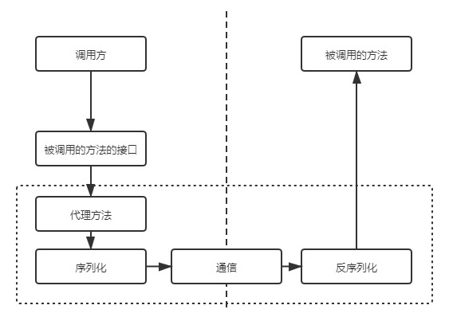

干冰不是冰，水银不是银，纯碱不是碱，熊猫不是猫，鲸鱼不是鱼，双氧水不是水，铅笔芯不是铅。
echo、print、print_r
一、echo、print、print_r
1 本质区别（笔记此处有误）
| 项 | echo |
print |
print_r() |
|---|---|---|---|
| 是什么 | 语言结构（keyword） | 语言结构（keyword） | 函数 |
能否写 $x = echo 1 |
❌ 不能当值用 | ❌ 不能当值用 | ✅ 有返回值 |
| 返回值 | 无 | int(1)，恒为 1 |
无（默认）/ 字符串（第二参数为 true） |
| 参数个数 | 可多个：echo 1, 2, 3 |
只能 1 个：print 1, 2 → 语法错误 |
2 个（值、$return） |
| 能输出什么 | 字符串（可含 HTML） | 同 echo |
数组 / 对象等复合类型 |
| 输出格式 | 原样 | 原样 | Array ( [k] => v )，一行一个元素 |
| 嵌套深度 | — | — | 默认只展开 1 层，更深层显示 Array ( *RECURSION* ) 或 Array |
| 用法频率 | 高 | 低 | 调试时 |
❌ 笔记错误：「echo 不是函数，没有返回值，print 是一个函数有返回值」——后半句错。
echo同为语言结构，都不是函数。
判别方法：echo print 'x';输出x1——如果
2 三个都能输出什么
| 需求 | 用什么 |
|---|---|
| 输出字符串 / HTML | echo |
| 输出标量数组的键值对 | echo json_encode($arr, JSON_PRETTY_PRINT | JSON_UNESCAPED_UNICODE) |
| 调试数组 / 对象结构 | var_dump()（看类型和长度）或 print_r()（看结构） |
| 需要把结果存进变量 | print_r($arr, true) 或 var_export() |
3 完整的输出函数对照
| 函数 | 用途 | 主要参数 | 返回 |
|---|---|---|---|
echo |
最快输出字符串 | 任意多个值 | 无 |
print |
几乎不用 | 单值 | int(1) |
printf() |
格式化输出 | 格式串 + 值 | 长度 |
vprintf() |
格式化 + vsprintf |
格式串 + 数组 | 长度 |
sprintf() |
格式化成字符串 | 格式串 + 值 | 字符串 |
print_r() / var_dump() |
调试数组对象 | 值、$return |
视情况 |
var_export() |
导出可执行的 PHP 代码 | 值、$return |
视情况 |
4 print_r 的两个参数
1 | $arr = ['a' => 1, 'b' => ['c' => 2]]; |
| 坑 | 说明 |
|---|---|
嵌套对象显示 Class Object ( [id] => 1 ) |
看不清私有属性，改用 var_dump |
| 深度默认 1 层 | 更深层只显示 Array，需要 print_r($a, true) 后自己处理 |
递归引用会输出 *RECURSION* |
无限递归结构会看到它 |
别在生产用 print_r / var_dump |
直接把数据吐给用户了。必须 error_log() 兜到日志 |
5 print_r vs var_dump vs var_export
| 特性 | print_r |
var_dump |
var_export |
|---|---|---|---|
| 展开嵌套 | 默认 1 层 | 全展开 | 完整 |
| 显示类型 | ❌ | ✅（string(3) "abc"） |
✅ |
| 显示长度 | ❌ | ✅ | ❌ |
| 输出格式 | Array ( [a] => 1 ) |
array(1) { ["a"]=> int(1) } |
array ( 'a' => 1, ) |
| 可被 eval 回来 | ❌ | ❌ | ✅ |
结论：
| 场景 | 用 |
|---|---|
| 快速看结构 | print_r() |
| 排查类型/长度问题（最常用） | var_dump() |
| 生成可执行代码 / 缓存数据 | var_export() |
empty 与 isset
1 核心区别
| 判断函数 | 实际在问什么 | 判定为真的条件 |
|---|---|---|
isset($v) |
「$v 是不是 null」 | 变量存在 且 值 !== null |
empty($v) |
「$v 是不是假值」 | 变量不存在，或 值属于假值集合 |
一句话记忆：isset 只认 null 这一个敌人，empty 把所有假值都当敌人。
2 全值域对照表
| 值 | isset() |
empty() |
说明 |
|---|---|---|---|
| 变量未定义 | false |
true |
|
null |
false |
true |
isset 和 empty 的分水岭 |
false |
true |
true |
|
true |
true |
false |
|
0 |
true |
true |
|
0.0 |
true |
true |
|
''（空字符串） |
true |
true |
|
'0'（字符串零） |
true |
true |
⚠️ '0' 也是空的 |
' '（空格） |
true |
false |
空格不算空 |
'0.0' |
true |
false |
|
[]（空数组） |
true |
true |
|
[0] |
true |
false |
有元素就不算空 |
new stdClass()（无属性对象） |
true |
true |
无属性对象算空 |
| 对象有属性 | true |
false |
|
资源 fopen(...) |
true |
false |
资源恒非空 |
⚠️ 最坑的两个：
'0'（字符串零）会被empty()判为空。判「非空字符串」要写$v !== '' && $v !== '0'，或者直接$v !== ''加上trim()。- 无属性的对象也被
empty()判为空。$user = new User(); empty($user)→true，哪怕对象本身存在。
3 多变量 / 多参数行为
| 写法 | 行为 |
|---|---|
isset($a, $b, $c) |
全部不为 null 才返回 true；短路，遇到 false 就停 |
isset($a) && isset($b) |
同上，但更啰嗦 |
| `isset($a) && isset($b) | |
empty($a) && empty($b) |
两个都空才真；empty 也短路 |
isset($a, $b) === true |
明确优先级，避免误读 |
单变量时（
isset($a && $b)）会报语法/警告，因为isset只接受变量。
4 限制与注意
| 项 | isset() |
empty() |
|---|---|---|
| 只能用于变量？ | ✅ 是。传常量 → Fatal error（需用 defined()） |
✅ 是。传函数返回值 → Fatal error：Cannot use empty() on the result of an expression |
| 能用于数组下标 | ✅ isset($arr['k']) |
✅ empty($arr['k']) |
| 能用于对象属性 | ✅ isset($obj->p) |
✅ empty($obj->p) |
| 多参数 | ✅ PHP 7.0+ | ❌ 只接受 1 个变量 |
| 嵌套安全 | ✅ 内部任一层不存在直接返回 false，不报 warning |
✅ 同左，且返回 true |
1 | // isset 的嵌套安全性 —— 这是它比 empty 更常用的原因 |
5 array_key_exists vs isset
这是本节最实用的对比。
| 场景 | isset($arr[$k]) |
array_key_exists($k, $arr) |
|---|---|---|
| 键存在，值非 null | true |
true |
键存在，值为 null |
false |
true |
| 键不存在 | false |
false |
| 用于对象 | ✅ 可用 | ❌ 只支持数组（PHP 8.0 前传对象报 TypeError） |
| 嵌套访问 | ✅ 安全不报错 | ❌ 要求每一层键都真实存在，否则报 warning/error |
| 性能 | 快 | 略慢 |
1 | $search_array = ['first' => null, 'second' => 4]; |
语义定位：
| 你真正想问的 | 用 |
|---|---|
| 「这个值有值吗」（null 视为无） | isset() |
| 「这个键存在吗」（哪怕值是 null） | array_key_exists() |
| 「这是空数组吗」 | empty() |
经典场景： 数据库查出的字段天然可能是 null（比如「备注未填」）。用 isset($row['remark']) 判断「有没有填备注」会把已填 null 和字段不存在混为一谈：
1 | // ❌ 错：数据库返回 remark = NULL 和返回列都没有，两种情况都判 false |
兜底写法（同时判存在 + 非空）：
1 | // 7.4+ 一行搞定 |
6 三者 + array_key_exists 总对照
| 值 | isset |
empty |
array_key_exists |
|---|---|---|---|
| 键/变量未定义 | false |
true |
false |
值为 null |
false |
true |
true |
值为 0 |
true |
true |
true |
值为 '' |
true |
true |
true |
值为 '0' |
true |
true |
true |
值为 [] |
true |
true |
true |
值为 false |
true |
true |
true |
记忆法： empty 全 false 一票否决；isset 只针对 null；array_key_exists 只关心键在不在。
include 与 require
1. ❗ 修正笔记错误
❌ 笔记错误：「include 在用到时加载，require 在一开始就加载」——这是错的。
| 事实 | 说明 |
|---|---|
include 和 require 都在语句所在的那一行加载 |
文件里写第 10 行，就执行到第 10 行才加载 |
真正决定「只加载一次」的是 _once 后缀 |
include_once / require_once |
| 两者唯一的区别是失败后的行为 | include 报警告继续跑，require 致命错误停止 |
2 四个变体总表
| 写法 | 加载时机 | 文件缺失时 | 是否重复加载 |
|---|---|---|---|
include |
执行到该语句时 | E_WARNING，继续执行，返回值 false |
会重复 |
include_once |
执行到该语句时 | E_WARNING，继续执行 |
已包含过则跳过 |
require |
执行到该语句时 | E_ERROR（致命），立即终止整个脚本 |
会重复 |
require_once |
执行到该语句时 | E_ERROR，终止脚本 |
已包含过则跳过 |
💡 区分「加载时机」：只有在函数内且延迟调用的写法，文件才会真正「用到时」加载——但那是代码写法决定的，不是
includevsrequire的区别。
3 返回值
| 项 | include / require |
|---|---|
被包含文件有 return |
返回该值 |
被包含文件无 return 或 return; |
返回 int(1) |
| 文件不存在 | include → false；require → 致命错误不会执行到 |
1 | // 利用返回值判断文件是否存在（require 不能这么做，会直接挂） |
4 路径与作用域
| 项 | 规则 |
|---|---|
| 相对路径基准 | 先查 include_path（含 .），再查当前脚本所在目录，再查调用脚本所在目录，最后查工作目录 |
路径含 / 时 |
会被当作普通相对路径，不再查 include_path |
| 变量作用域 | 被包含文件继承调用处的作用域；函数和类定义在包含后全局可见（除非在函数内定义） |
$GLOBALS |
可在配置文件里用它给全局赋值 |
1 | // 配置文件惯用法 |
5 安全风险
| 风险 | 说明 | 防护 |
|---|---|---|
| 远程文件包含（RFI） | include $_GET['page']; 可被远程接管 |
白名单 in_array($page, $allowed, true) |
| 本地文件包含（LFI） | 可读任意文件，配合上传即 RCE | 同上 + 禁用户可控路径 |
| 目录穿越 | ../../etc/passwd |
realpath() 后校验前缀 |
| 变量可控路径 | include $configPath; |
用常量或白名单 |
1 | // ❌ 危险 |
6 与 eval、autoload 的关系
| 机制 | 用途 |
|---|---|
include / require |
手动引入文件 |
include_once / require_once |
手动引入 + 防重复 |
spl_autoload_register() |
自动按命名规则加载类，Composer 依赖它 |
eval() |
⚠️ 直接执行字符串，不要用于加载配置 |
现代 PHP 项目里，手写
require基本只出现在「加载配置数组」和「入口文件」两种场景；类的加载都交给 Composer 的 autoloader。
传值与传引用
1 基本概念
| 方式 | 语法 | 形参与实参关系 | 改形参影响实参 |
|---|---|---|---|
| 传值 | function f($x) |
值副本 | ❌ 不影响 |
| 传引用 | function f(&$x) |
同一个变量（别名） | ✅ 影响 |
1 | // 传值 |
2 ❗ 关键补充：对象是特例
笔记漏了最重要的一条：对象永远传句柄，不存在「传对象值 / 传对象引用」的区分。
1 | class User { public $name = 'A'; } |
| 情况 | 修改影响实参？ |
|---|---|
改对象的属性 $obj->p = x |
✅ 影响（对象是引用语义） |
给形参重新赋值 $obj = new X |
❌ 不影响（只是改了局部变量指向） |
改数组的元素 $arr['k'] = x |
❌ 不影响（数组是值语义，除非传引用） |
3 写时复制（COW）
| 项 | 说明 |
|---|---|
| 全称 | Copy-On-Write |
| 行为 | 传参时不立即拷贝，只是引用计数 +1；只有形参被写入时才真正复制一份 |
| 好处 | 只读参数零拷贝，性能好、内存省 |
| 副作用 | $a = ['x' => 1]; $b = $a; 后 $a 和 $b 内存地址相同，但改一个不影响另一个 |
1 | $a = ['x' => 1]; |
4 数组与对象对照（最容易混的地方）
| 类型 | 传参语义 | 改属性/元素 | 重新赋值 |
|---|---|---|---|
| 标量（int/string/bool/float/null） | 值 | — | 需 & |
| 数组 | 值（COW） | ❌ 需 & |
需 & |
| 对象 | 句柄 | ✅ 直接生效 | ❌ 不生效（& 也不行） |
类实例 & |
句柄 + 变量引用 | ✅ | ⚠️ 可改形参的指向 |
1 | // 数组：需要 & 才能回写 |
5 引用作为返回值
1 | function &getRef(array &$arr) { // 注意 & 有两个位置 |
| 位置 | 含义 |
|---|---|
参数前的 & |
按引用传参 |
返回类型前的 & |
返回引用，调用方可用 =& 接收并修改源变量 |
调用方的 =& |
接收引用（等价于引用赋值） |
⚠️ 引用返回极易产生「意外修改」和循环引用，现代 PHP 基本不该用。
6 引用相关的常见坑
| 坑 | 现象 | 原因 | 解法 |
|---|---|---|---|
foreach 不加引用 |
改 $v 不影响数组 |
值遍历 | foreach ($arr as $k => &$v) |
foreach 加引用忘了 unset |
后续循环把上一个元素改坏 | 引用残留 | 循环体末尾 unset($v)，必须 |
| 引用了不存在的变量 | 自动创建并变 null |
引用赋值的特性 | 传引用前先 isset() 判断 |
| 形参默认值不能是引用 | 语法错误 | — | 用 ?array $x = null + 内部处理 |
| 返回引用被误用 | 改一个地方多处变 | 引用返回 | 返回值而不是引用 |
foreach 引用残留的完整演示：
1 | // ❌ 有 bug |
💡 口诀：只要写了
&$v，循环结束就补一句unset($v)。 这是 PHP 单兵作战最容易忘的一行代码。
7 什么时候用引用（现代 PHP 建议）
| 场景 | 用引用？ | 理由 |
|---|---|---|
| 函数要回写调用方的一个变量 | ✅ 可以 | 但返回新值更清晰 |
| 大数组要避免拷贝 | ⚠️ 权衡 | COW 已让只读传参零拷贝，只有写操作才有拷贝 |
| 循环里高频改数组 | ❌ 不要 | 先复制出来改，改完整体赋值 |
| 遗留老代码 | ✅ 保持 | 别在重构时顺手改，容易出事 |
| 默认选择 | ❌ 不用引用 | 返回值语义清晰、可测试、无副作用 |
更地道的写法：
1 | // ❌ 依赖副作用 |
8 三种赋值方式速查
| 语法 | 含义 | $b 与 $a 关系 |
改 $b 影响 $a |
|---|---|---|---|
$b = $a; |
值赋值 | 值相同，内存可能共享（COW） | ❌ |
$b = &$a; |
引用赋值 | 完全同一变量 | ✅ |
$b = clone $a; |
对象浅拷贝 | 独立对象，内部引用仍共享 | ❌ |
$b = &$a; unset($a); |
引用不断 | $b 仍有效 |
— |
$a = null;（有引用时） |
只是断开 $a 的绑定 |
$b 不受影响 |
— |
⚠️ 引用赋值会让两个变量同生共死：
unset($a)不会销毁$b。这和值赋值（$a = null后$b仍是原值）完全不同。
9 参考
- https://www.php.net/manual/zh/language.references.php
- https://www.php.net/manual/zh/features.commandline.options.php
抽象类和接口
零、笔记错误速览（先看这个）
| # | 笔记原文 | 问题 | 修正 |
|---|---|---|---|
| 1 | 「接口是一种特殊的抽象类」 | ❌ 概念性错误。接口和抽象类是并列的两种类型，接口不是抽象类的子类。两者只是语法长得像（都用 {} 声明、都可声明未实现的方法），且在 PHP 里互不能转换 |
二者是「抽象的两种方式」，不是「父子关系」 |
| 2 | 「接口没有数据成员」 | ⚠️ PHP 8.4 起过时。自 PHP 8.4.0 接口可以声明属性（须配合 property hooks 指定 get/set 需求） | PHP ≤ 8.3 无属性；≥ 8.4 可声明属性契约 |
| 3 | 「接口没有构造方法」 | ⚠️ 不准确。接口中可以声明 __construct()，只是 PHP 官方强烈不建议 |
不是禁止，是「不要这么写」 |
为什么第 1 条重要： 很多人以为「接口是抽象类的子类」，于是想 abstract class A implements I 这种写法，或者以为抽象类能当接口用。实际上：
| 误解 | 事实 |
|---|---|
| 接口是抽象类的子类 | ❌ 二者无继承关系，interface 不能 extends 抽象类 |
| 抽象类可以实现接口的方法 | ✅ 可以，abstract class X extends Y implements Z {} 完全合法 |
接口可以 extends 接口 |
✅ 可以（笔记没提到） |
| 接口可以被实例化 | ❌ 不能，和抽象类一样 |
一、核心对比表
| 对比项 | 抽象类（abstract class） | 接口（interface） |
|---|---|---|
| 声明关键字 | abstract class |
interface |
| 能否实例化 | ❌ 不能 | ❌ 不能 |
| 能否有属性（成员变量） | ✅ 有，可任意修饰符 | ⚠️ PHP ≤8.3 无；8.4+ 可声明属性契约 |
| 能否有常量 | ✅ 有 | ✅ 有（8.1+ 可被覆盖） |
| 能否有构造函数 | ✅ 有，且常用于初始化 | ⚠️ 可声明但强烈不建议 |
| 能否有方法实现 | ✅ 可有（具体方法） | ❌ 全为抽象（无方法体） |
| 能否有抽象方法 | ✅ 有 | ✅ 全都是 |
| 方法可见性 | public / protected / abstract |
只能 public |
抽象方法能否 private |
❌ 不能（写 private abstract 报错） |
❌ 概念不存在 |
| 继承方式 | extends（最多一个） |
implements（可以多个） |
| 能否被接口继承 | — | ✅ interface B extends A |
| 与普通类的关系 | 抽象类是普通父类 | 接口只能被实现，不能被 extends 到具体语义 |
| 命名约定 | 无强制 | 常以 -able / 名词（Logger、Cacheable） |
二、笔记逐条修正
2.1 「抽象类的继承使用 extends，接口用 implements」
✅ 正确，但笔记不完整。补充：
| 场景 | 语法 | 说明 |
|---|---|---|
| 类继承抽象类 | class B extends A {} |
只能一个 |
| 类实现接口 | class C implements I {} |
可以多个，逗号分隔 |
| 同时继承 + 实现 | class D extends A implements I, J {} |
最常用组合 |
| 接口继承接口 | interface B extends A {} |
笔记没提 |
| 接口继承多个接口 | interface C extends A, B {} |
注意：extends 在接口间可以多个 |
💡 记忆点：
extends在接口之间是多个，在类之间是一个。这是唯一打破「extends 只能一个」的地方。
2.2 「抽象类有数据成员，接口没有」
| 版本 | 抽象类 | 接口 |
|---|---|---|
| PHP ≤ 8.3 | 有属性 | ❌ 不能有属性 |
| PHP 8.4+ | 有属性 | ✅ 可声明属性契约 |
PHP 8.4 新增的接口属性：
1 | interface HasName { |
| 规则 | 说明 |
|---|---|
| 必须声明 get 还是 set | 不能只写 public string $name;——必须写 { get; } / { set; } / { get; set; } |
| 接口声明只约束 public 读写 | 内部可见性实现类自定 |
{ set; } 的属性不能用 readonly 实现 |
冲突 |
{ get; } 可以用 readonly 满足 |
✅ 允许 |
⚠️ 这是 PHP 8.4 才有的能力。如果你项目跑在 8.3 或更低，接口依然不能有属性。
2.3 「抽象类可以有构造方法，接口没有」
❌ 不准确。接口可以声明
__construct()，只是官方强烈不建议。
1 | // 语法合法，官方手册明确说「虽然支持，但强烈不建议」 |
官方不建议的三个理由：
| 理由 | 说明 |
|---|---|
| 大幅降低实现类的灵活性 | 一旦接口要求构造签名，所有实现类都得照抄，无法用不同参数初始化 |
| 构造器不受继承规则强制约束 | 接口要求了，但没人能保证实现类的构造行为一致 → 行为不可预期 |
| 类型提示已够用 | 构造参数约束用具名类型表达，不需要塞进接口 |
正确做法： 把初始化逻辑抽成普通方法或工厂方法。
1 | // ❌ 别这么干 |
2.4 「抽象方法可用 private/protected/public 修饰」
| 修饰符 | 抽象方法能否用 | 说明 |
|---|---|---|
public |
✅ | 最常见 |
protected |
✅ | 只对子类可见，子类必须实现 |
private |
❌ | 语法错误：private 方法不能被子类看到，声明了子类也没法实现 → 逻辑上无意义 |
| 无修饰符 | ✅ | 等价于 public |
final |
❌ | 与 abstract 互斥，同时写报错 |
正确写法：
1 | abstract class Shape { |
2.5 「一个类只能继承一个抽象类，可以实现多个接口」
✅ 完全正确。补充组合形式：
| 组合 | 语法 | 典型场景 |
|---|---|---|
| 只实现多接口 | class C implements I, J, K {} |
无共同父类的能力拼装 |
| 继承 + 实现多接口 | class D extends Base implements I, J {} |
最常用 |
| 接口继承接口 | interface C extends A, B {} |
聚合接口 |
| 抽象类实现接口 | abstract class E implements I {} |
把接口的一部分实现好，留给子类 |
三、抽象类详解
3.1 定义与限制
1 | abstract class BasePayment |
| 限制 | 原因 |
|---|---|
| 不能实例化 | 抽象方法没有实现，实例化了也没法用 |
不能 final abstract |
互斥 |
| 子类必须实现全部抽象方法 | 否则该子类也必须声明为 abstract |
抽象方法可以是 protected |
子类内部调用，不暴露给外部 |
3.2 抽象属性的「半实现」（PHP 8.4+）
这是 8.4 新能力：抽象属性可以提供 hook 的实现，但必须至少有一个 hook 是未实现的。
1 | abstract class Person |
3.3 抽象类的真实用途
| 用途 | 说明 |
|---|---|
| 共享实现 | 把几个类共有的方法收进父类，避免复制 |
| 模板方法模式 | 抽象方法定义「做什么」，具体方法定义「怎么做」 |
| 受控扩展点 | protected abstract 只让子类实现，防止外部乱改 |
| 代码复用 + 有限的灵活性 | 和接口的取舍点就在这 |
四、接口详解
4.1 定义与限制
1 | interface PaymentGateway |
| 限制 | 说明 |
|---|---|
所有方法隐式 public |
写 protected / private 直接报错 |
| 不能有方法体 | 任何 { ... } 都报错 |
| 不能有构造函数实现 | 只能声明签名（不推荐） |
常量隐式 public |
可被使用，但 8.1 前不可覆盖 |
| 与类/trait/enum 共享命名空间 | 同名会冲突 |
4.2 接口继承与常量覆盖（8.1+）
1 | interface A { |
4.3 「接口没有实现」的真正含义
| 误解 | 事实 |
|---|---|
| 接口的方法没实现 = 方法不存在 | ❌ 接口里有方法签名，可以做类型检查、instanceof 判断 |
| 接口不能有代码 | ✅ 对，但常量有值、8.4+ 属性有 hook 契约 |
| 接口方法不能有默认实现 | ✅ 对。PHP 没有接口默认方法（Java 8 有，PHP 没有） |
五、协变与逆变（PHP 7.4+ / 8.0）
实现接口方法时，签名可以比接口更宽松（返回类型协变）或更严格（参数类型逆变）。
| 概念 | 位置 | 规则 | 例子 |
|---|---|---|---|
| 协变 covariance | 返回类型 | 子类返回更具体的类型 | 接口声明 object，实现返回 PDO ✅ |
| 逆变 contravariance | 参数类型 | 子类接受更宽松的类型 | 接口声明 string，实现接受 string|int ✅ |
| 不变 invariant | 其他 | 必须完全一致 | 参数名、默认值数量等 |
1 | interface Box { public function get(): object; } |
⚠️ PHP 7.2 起支持协变/逆变。PHP 8.0 起参数名也纳入检查（因为支持了命名参数），实现时参数名应与接口保持一致。
六、接口 vs 抽象类：怎么选
6.1 决策流程
1 | 需要多继承 / 需要「能力声明」？ |
6.2 选型对照
| 场景 | 用 | 理由 |
|---|---|---|
| 需要被多个不相关类「标记」能力 | 接口 | 标记型接口，如 Logger、JsonSerializable |
| 需要替换实现（支付/缓存/存储） | 接口 | 可插拔，可通过容器注入不同实现 |
| 一堆类有相同逻辑要复用 | 抽象类 | 接口写不出实现 |
| 需要模板方法模式 | 抽象类 | 具体方法 + 抽象方法组合 |
需要 protected 扩展点 |
抽象类 | 接口只能 public |
| 需要共享属性 | 抽象类 | 接口（≤8.3）无属性 |
| 需要构造器做统一初始化 | 抽象类 | 接口不该管构造 |
| 只为了「看起来规范」而加 | 都不要 | 过度设计，纯增加工作量 |
6.3 常见组合用法
| 模式 | 写法 | 用途 |
|---|---|---|
| 接口 + 抽象基类 | abstract class BaseRepo implements RepoInterface |
接口定契约，抽象类给通用实现 |
| 接口继承接口 | interface Readable extends RepoInterface |
细分能力 |
| trait 补实现 | abstract class Base implements I { use LogTrait; } |
横向复用，比继承更灵活 |
实战结构示例：
1 | // 1. 接口：定契约 |
七、面向接口编程的优缺点
7.1 优点
| 优点 | 说明 |
|---|---|
| 结构清晰 | 类与实现解耦，阅读代码只需看接口 |
| 规范设计 | 合理设计的接口是团队的契约文档，减少沟通成本 |
| 并行开发 | 接口定死后，多方同时开发不同实现，互不阻塞 |
| 可插拔 | 换实现不改调用方代码 |
| 降低耦合 | 调用方依赖抽象，不依赖具体类 |
| 多重实现 | 弥补单继承的限制（一个类只能有一个父类） |
| 易测试 | 单元测试可注入假实现，不必连真实数据库/支付 |
7.2 缺点
| 缺点 | 说明 |
|---|---|
| 设计复杂度上升 | 差的接口设计会波及所有实现方，牵一发而动全身 |
| 并非所有场景都需要 | 系统简单时接口只是纯增工作量 |
| 代码可复用性可能下降 | 接口不能复用实现，只能继承抽象类 |
| 执行效率略降 | 多一层动态派发，PHP 7+ 已优化到可忽略，但理论上有开销 |
| 过度设计的温床 | 「先给每个类配个接口」是最常见的反模式 |
7.3 关于「降低执行效率」的澄清
| 层面 | 实际情况 |
|---|---|
| 理论 | 接口方法调用比直接调用多一层查表 |
| PHP 7+ 实测 | 差异在纳秒级，绝大多数场景不可测 |
| 真正影响性能的是 | 数据库查询次数、N+1 查询、循环内 I/O、大对象拷贝 |
| 建议 | 不要为了性能放弃接口。先优化 I/O，再回来谈这个 |
7.4 什么时候不该用接口
| 反模式 | 问题 |
|---|---|
| 只有一种实现且不打算换 | 过度设计 |
| 接口只有一个实现类 | YAGNI，等第二种出现再加 |
| 为了「规范」给所有类配接口 | 淹没真正的抽象 |
| 接口方法超过 10 个 | 它已经不是接口，是「上帝类」 |
| 接口里塞业务逻辑描述 | 接口只说「要什么」，不说「怎么做」 |
💡 判断标准： 问自己「我将来会换掉这个实现吗？」会 → 用接口；不会 → 抽象类或普通类。
八、常见错误速查
| 错误写法 | 报错 | 正确 |
|---|---|---|
abstract private function f() |
语法错误 | 用 protected abstract |
interface I { protected function f(); } |
语法错误 | 接口只能 public |
interface I { public function f() { } } |
语法错误 | 接口不能有方法体 |
abstract class A implements I {} 但没实现全部方法 |
Fatal | 补全方法，或把该类也声明为 abstract |
class C extends A, B {} |
语法错误 | 类只能 extends 一个，接口用 implements A, B |
new A() 其中 A 是抽象类 |
Fatal | 不能实例化 |
interface I extends SomeClass {} |
语法错误 | 接口只能 extends 接口 |
| 实现方法少写接口的一个方法 | Fatal | 全部实现 |
| 实现方法签名比接口更严（参数更窄） | Fatal | 参数要逆变或一致 |
| 实现类构造函数签名与接口不同 | 可能行为异常 | 接口别声明 __construct |
九、PHP 版本特性时间线
| 版本 | 相关特性 |
|---|---|
| PHP 5.0 | 接口（interface）、抽象类（abstract class）引入 |
| PHP 5.4 | trait 引入，补充「横向复用」手段 |
| PHP 7.0 | 协变返回类型；Throwable 体系 |
| PHP 7.2 | 完整的对象类型协变/逆变支持 |
| PHP 8.0 | 参数名纳入签名检查；联合类型；object 类型提示 |
| PHP 8.1 | 接口常量可被覆盖；never 返回类型；只读属性 |
| PHP 8.2 | readonly 类 |
| PHP 8.4 | 接口可声明属性、抽象类可声明抽象属性、property hooks、非对称可见性 public private(set) |
十、30 秒自测
| 问题 | 答案 |
|---|---|
| 接口是抽象类的子类吗？ | ❌ 不是，二者是并列的两种抽象类型 |
| 一个类能继承几个抽象类？ | 一个（extends） |
| 一个类能实现几个接口？ | 多个（implements，逗号分隔） |
接口能 extends 什么？ |
只能 extends 其他接口，且可以多个 |
抽象方法能是 private 吗？ |
❌ 不能，子类看不到就无从实现 |
接口方法能是 protected 吗？ |
❌ 不能，接口方法隐式 public |
| 接口能有方法体吗？ | ❌ 不能 |
| 接口能有构造函数吗？ | 语法上能声明，但强烈不建议（降低灵活性 + 不受继承规则约束） |
| 接口能有属性吗？ | PHP ≤ 8.3 ❌；8.4+ ✅（须声明 { get; } / { set; }） |
| 接口常量能被子类覆盖吗？ | 8.1+ 可以，8.1 前不能 |
| 什么时候用抽象类？ | 需要共享实现 / protected 扩展点 / 共享属性时 |
| 什么时候用接口？ | 需要多继承 / 可插拔替换 / 能力标记时 |
| PHP 的协变/逆变分别管什么？ | 协变管返回类型（可更具体），逆变管参数类型（可更宽松） |
抽象类和接口
零、三个概念的定位
| 概念 | 一句话 | 解决什么问题 |
|---|---|---|
| 封装 | 把数据和对数据的操作绑在一起，隐藏内部实现 | 保护——外部不该改的别让人改 |
| 继承 | 子类拿父类的属性和方法，并可扩展 | 复用——同一套逻辑不必写两遍 |
| 多态 | 同一个接口/父类，不同对象不同表现 | 解耦——调用方不关心具体实现 |
一、封装（Encapsulation）
1.1 定义
| 项 | 说明 |
|---|---|
| 本质 | 把属性和操作属性的方法组织成一个整体（类），并通过访问控制符限制外部访问 |
| 目标 | ① 保护内部数据不被随意篡改 ② 隐藏实现细节，调用方只依赖公开接口 ③ 允许内部自由修改实现而不影响外部 |
1.2 访问控制符
| 修饰符 | 本类 | 同类实例 | 子类 | 外部 |
|---|---|---|---|---|
public |
✅ | ✅ | ✅ | ✅ |
protected |
✅ | ✅ | ✅ | ❌ |
private |
✅ | ✅ | ❌ | ❌ |
| 无（默认） | = public |
= public |
= public |
= public |
💡 同类实例之间可以访问彼此的
private——因为它们是同一个类。判断依据是类，不是对象。
1.3 为什么用 getter/setter
1 | class BankAccount |
| 如果不用封装 | 后果 |
|---|---|
public float $balance |
外部可写 $account->balance = -99999，直接破坏业务规则 |
public 但只有 getter |
调用方无法初始化，只能靠构造器 |
封装的三层含义：
| 层 | 做法 |
|---|---|
| 数据封装 | private / protected 属性 |
| 行为封装 | 只暴露必要的 public 方法 |
| 校验前置 | setter 里做合法性检查，非法数据进不来 |
1.4 封装的边界：不是万能钥匙
| 过度封装 | 问题 |
|---|---|
| 每个属性都写 get/set，内部什么都不做 | 纯样板代码，没实际价值 |
属性设 private 但 __get 里原样返回 |
假封装，外部照样能改 |
| 暴露内部可变数组引用 | 调用方改了内部状态 |
💡 现代实践（PHP 8.4+）：属性 hooks 和非对称可见性可以替代大量样板 getter/setter。
1 | // PHP 8.4+ |
二、继承（Inheritance）
2.1 定义与语法
| 项 | 说明 |
|---|---|
| 本质 | 从已有类（父类）派生出新类（子类），子类继承父类的属性和方法 |
| 关键字 | extends |
| 单继承 | 一个类只能有一个父类（PHP 的限制） |
| 子类可以做 | 加新属性、加新方法、重写父类方法 |
1 | class Animal |
2.2 继承了什么
| 成员 | 是否继承 | 说明 |
|---|---|---|
public 属性与方法 |
✅ | 完全继承 |
protected 属性与方法 |
✅ | 子类可访问 |
private 属性与方法 |
❌ | 子类看不到 |
final 类/方法 |
❌ | 不允许继承/重写 |
构造函数 __construct |
不会自动继承 | 子类定义了就必须调 parent::__construct() |
析构函数 __destruct |
不会自动继承 | 同上，需显式 parent::__destruct() |
| 静态属性 | ✅ | 但共享同一份值（除非 8.3+ trait 场景） |
2.3 构造链与析构链
1 | class A { |
| 规则 | 说明 |
|---|---|
| 构造顺序 | 父类先构造（parent::__construct() 通常写在子类构造函数第一行） |
| 析构顺序 | 父类后析构 |
不调 parent:: |
父类的构造/析构被完全跳过，不是「隐式调用后再覆盖」 |
| 父类无构造函数 | 调 parent::__construct() 会 Fatal error（除非自己声明了空构造） |
⚠️ 经典坑：
class Child extends Parent但Parent没有__construct，子类里写了parent::__construct()→ 致命错误。这是 PHP 里最常见的继承坑之一。
安全写法：
1 | class B extends A |
2.4 重写（Override）的规则
| 规则 | 说明 |
|---|---|
| 可见性不能缩小 | 父类 public → 子类不能改 protected/private（会报错） |
| 可见性可以放大 | 父类 protected → 子类可以改 public ✅ |
| 参数必须兼容 | 不能新增必填参数；可减（逆变）；返回类型必须协变或一致 |
不能重写 final |
Fatal error |
| 构造函数是覆盖不是重载 | PHP 没有方法重载，子类构造函数不会自动调用父类的 |
| 参数名 PHP 8.0 起参与检查 | 参数名不一致会警告 |
2.5 继承的代价（组合优于继承）
| 问题 | 说明 |
|---|---|
| 脆弱基类 | 父类改一个方法，所有子类行为可能全变 |
| 紧耦合 | 子类被迫继承不需要的东西 |
| 层次僵化 | 单继承限制了类结构自由度 |
| 难以测试 | 子类为了测一个方法要实现整个父类契约 |
什么时候用继承： 「is-a」关系且确实需要替换实现（如 MySqlRepository extends AbstractRepository）。
什么时候用组合： 「has-a」关系。把依赖作为构造参数传入，而不是继承它。
1 | // ❌ 继承：为了用日志，硬塞进继承链 |
三、多态（Polymorphism）
3.1 定义
⚠️ 笔记定义偏窄：「一个父类被多个子类继承，父类的某个方法在多个子类中表现出不同的功能」——这只是多态的一种表现（重写多态）。多态在 PHP 里主要有三种实现路径，且接口多态才是现代 PHP 的主流。
| 实现方式 | 机制 | 是否需要继承 | 现代价值 |
|---|---|---|---|
| 重写（override） | 子类重写父类方法 | ✅ 需要 | 中（模板方法模式） |
| 接口多态 | 不同类实现同一接口 | ❌ 不需要 | 高（主流） |
| 参数多态 | 方法参数声明为类型（接口/父类），运行时传入不同对象 | — | 最高（现代 PHP 主流） |
3.2 参数多态（重点：现代 PHP 怎么用多态）
1 | // 关键：参数类型只声明接口，运行时随便传哪个实现都行 |
💡 这才是多态的价值所在：调用方代码不随实现变化而变化。笔记里的「父类方法在子类表现不同」只是最朴素的形式，真正的收益是「一处调用，多种实现」。
3.3 运行时多态的实现原理
1 | interface Animal { |
| 步骤 | 发生了什么 |
|---|---|
| 1 | foreach 遍历数组，每个元素实际类型不同 |
| 2 | 调用 $a->speak()，PHP 在运行时查这个对象真实类型 |
| 3 | 找到对应的实现并执行 |
| 4 | 返回各自不同的结果 |
关键：编译时不需要知道具体类型。 这就是「运行时的多态」，和 Java/C# 的机制一致。
3.4 三种多态的对比
| 场景 | 重写多态 | 接口多态 |
|---|---|---|
| 代码量 | 少（共用父类属性） | 多（每个实现都写一遍） |
| 耦合度 | 高（子类必须继承父类） | 低（只依赖契约） |
| 可替换性 | 差（要重新继承链） | 好（换实现不改调用方） |
| 适用 | 模板方法、共享状态 | 支付/存储/日志等可插拔组件 |
3.5 判断多态是否用对
| 症状 | 问题 | 正确做法 |
|---|---|---|
大量 if ($obj instanceof X) |
用类型判断代替了多态 | 参数声明为接口，让调用方决定 |
| 多个方法签名都写同一组类型 | 没抽接口 | 定义 GatewayInterface |
| 换了实现要改多处调用代码 | 耦合没解 | 接口 + 依赖注入 |
四、多重继承的替代方案
4.1 PHP 不支持真正的多重继承
| 语言 | 多重继承 |
|---|---|
| Java / C# / PHP | ❌ 单继承（一个类只能有一个父类） |
| C++ / Python / Ruby | ✅ 支持多继承 |
PHP 的替代手段：
| 方案 | 提供什么 | 是否共享实现 |
|---|---|---|
| 接口（多实现） | 方法契约 | ❌ 只有声明 |
| Trait（多混入） | 方法实现 | ✅ 完整实现 |
💡 组合记忆：接口解决「多继承关系」，trait 解决「多复用实现」。接口给契约，trait 给代码。
4.2 方案对比
| 维度 | 接口（多实现） | Trait（多混入） |
|---|---|---|
| 关键字 | implements |
use（类体内） |
| 能有实现吗 | ❌ | ✅ |
| 能有属性吗 | PHP ≤8.3 ❌；8.4+ 可声明契约 | ✅ |
| 能有构造函数吗 | 声明不推荐 | ✅ 可有 |
| 能被实例化吗 | ❌ | ❌ |
| 冲突处理 | 可用协变/逆变兼容 | insteadof / as |
| 语义 | 「我能做某事」 | 「借用一段行为」 |
五、Trait 详解
5.1 是什么
| 项 | 说明 |
|---|---|
| 定义 | PHP 5.4 引入的代码复用机制 |
| 本质 | 「有编译器帮忙的复制粘贴」 —— 官方原话 |
| 关键词 | use（类体内，和命名空间的 use 不是一回事） |
| 能否实例化 | ❌ 不能，它不是类 |
| 能否继承 | ❌ 不能被 extends |
| 核心价值 | 在没有继承关系的多个类间横向复用代码 |
5.2 基本用法
1 | trait SayHello |
| 语法 | 说明 |
|---|---|
use TraitA; |
混入一个 |
use TraitA, TraitB; |
混入多个（逗号分隔） |
use TraitA, TraitB { ... } |
带冲突解决 |
5.3 Trait 的三个「魔法」特性
① 能访问宿主的私有成员
1 | trait MyTrait |
这是 trait 相比普通组合类的重要优势：它真正”长”在宿主类里。
② __CLASS__ 返回宿主类名
1 | trait SayWhere |
③ 可以组合 trait
1 | trait A { public function a() { echo 'A'; } } |
5.4 优先级顺序（最常考，也最常错）
1 | 当前类自身定义的方法 > Trait 中的方法 > 父类继承的方法 |
| 场景 | 谁赢 |
|---|---|
| 类自己写了同名方法 | 类自己赢（trait 被静默忽略，不报错） |
| trait 与父类同名方法 | trait 赢 |
| 两个 trait 同名方法 | ⚠️ Fatal error，必须显式解决 |
1 | class Base { public function hello() { echo 'Base'; } } |
⚠️ PHP 8.5 有变更：
| 版本 | trait 与父类都有同名属性/常量时 |
|---|---|
| PHP ≤ 8.4 | Fatal error（不兼容的组合） |
| PHP 8.5+ | trait 优先，覆盖父类继承的成员 |
这更贴近 trait 的「复制粘贴」语义。方法解析规则不变（trait 一直覆盖父类方法），变的是属性和常量。
5.5 冲突解决：insteadof 与 as
两个 trait 有同名方法时，不解决直接 Fatal：
1 | Fatal error: Trait method log has not been applied, because there are collisions |
方案一：insteadof 二选一
1 | trait Logger { |
方案二：insteadof + as 两个都要
1 | class OrderProcessor { |
方案三：as 改可见性
1 | class UserProfile { |
| 操作符 | 作用 | 注意 |
|---|---|---|
insteadof |
冲突时选用哪个，排除另一个 | 只能排除，不能改名 |
as |
给方法起别名 | ⚠️ 不改变原方法名，也不影响其他方法 |
as + 可见性 |
as protected / as private |
单独用 as 也可以 |
💡 排查冲突的实用技巧： 用反射把 trait 方法全打出来对比，不用猜。
2
3
print_r($r->getTraits()); // 用了哪些 trait
print_r($r->getTraitAliases()); // 别名映射
5.6 属性的冲突规则（比方法严格）
| 场景 | 结果 |
|---|---|
| 两个 trait 声明同名属性 | 必须完全一致（可见性 + 类型 + readonly + 默认值），否则 Fatal |
| PHP 8.2+ | 允许只声明类型不给默认值，但两边类型仍须一致 |
| 类定义了与 trait 同名属性 | 同上，兼容性检查 |
5.7 trait 中的抽象方法（强制约束）
1 | trait Hello |
| 版本 | 支持的抽象方法可见性 |
|---|---|
| PHP < 8.0 | 仅 public / protected |
| PHP ≥ 8.0 | public / protected / private 都支持 |
8.0 起的签名规则： 具体方法的签名必须符合兼容性规则（此前可以不一致）。
💡 这是 trait 里做接口约束的好办法：trait 提供流程，抽象方法定义宿主必须提供什么。
5.8 trait 中的静态成员
| 项 | 说明 |
|---|---|
| 静态变量/方法/属性 | ✅ trait 可定义 |
| 静态属性：每个用该 trait 的类是独立副本 | 和继承的共享语义完全不同 |
| 直接在 trait 上访问静态成员 | PHP 8.1+ 起弃用，必须通过类访问 |
静态属性对比（重要）：
1 | // 继承：父子类【共享】同一份静态属性 |
⚠️ PHP 8.3 起又改了：如果子类自己也用了同一个 trait，它与父类的 trait 静态属性视为不同的。8.3 之前同一继承层次里是共享的。
5.9 trait 版本能力时间线
| 版本 | 新增能力 |
|---|---|
| PHP 5.4 | trait 本身 |
| PHP 7.4 | trait 中可定义抽象属性 |
| PHP 8.0 | 支持 private 抽象方法；具体方法签名需兼容 |
| PHP 8.1 | 直接在 trait 上访问静态方法/属性弃用 |
| PHP 8.2 | trait 中可定义常量；属性可只声明类型 |
| PHP 8.3 | as 操作符可用 final；子类重复用 trait 时静态属性独立 |
| PHP 8.5 | trait 与父类同名属性/常量时 trait 优先（此前 Fatal） |
trait 定义常量（8.2+）：
1 | trait ConstantsTrait |
⚠️ 类若要定义与 trait 同名常量，必须完全兼容（可见性、初始值、
final性），否则 Fatal。不能直接访问 trait 自身的常量（必须经过类）。
5.10 final 在 trait 里的特殊行为
| 写法 | 效果 |
|---|---|
trait T { final public function f() {} } |
❌ final 无效，类可自由覆盖 |
class C { use T; final public function f() {} } |
✅ 类自己声明，覆盖 trait |
class C { use T { T::f as final; } } |
✅ PHP 8.3+，子类不能覆盖（但类自己仍可） |
1 | // PHP 8.3+ |
六、Trait vs 继承 vs 接口 vs 组合
6.1 四选一决策表
| 机制 | 提供 | 关系 | 何时选 |
|---|---|---|---|
继承 extends |
属性 + 方法实现 + 契约 | is-a，单继承 | 确实是父子类型关系，需替换实现 |
接口 implements |
仅契约 | can-do，可多个 | 声明能力，让实现可插拔 |
Trait use |
属性 + 方法实现 | 无关系（混入） | 多个不相关类需要同一段行为 |
| 组合（构造注入） | 对象引用 | has-a | 默认首选 |
6.2 判断流程
1 | 这段代码要在几个类里复用？ |
6.3 对比表
| 维度 | 继承 | 接口 | Trait | 组合 |
|---|---|---|---|---|
| 代码复用 | ✅ | ❌ | ✅ | ✅（对象级） |
| 需要继承关系 | ✅ 必须 | ❌ | ❌ | ❌ |
| 数量限制 | 1 个父类 | N 个 | N 个 | N 个 |
| 能有属性 | ✅ | ≤8.3 ❌ | ✅ | ✅ |
| 能有实现 | ✅ | ❌ | ✅ | ✅ |
| 耦合度 | 高 | 低 | 中（混入） | 最低 |
| 可替换性 | 差 | 好 | 无（混入即固定） | 好 |
| 冲突可能 | 重写冲突 | 需协变兼容 | 同名方法冲突 | 无 |
6.4 trait 的常见误用
| 误用 | 问题 | 正确做法 |
|---|---|---|
| 把 trait 当「继承的替代」到处塞 | 隐式依赖，类不知道自己有这些方法 | 用组合，或明确定义接口 |
| 一个 trait 塞几十个方法 | 变成「上帝 trait」，难维护 | 按职责拆成多个小 trait |
trait 之间 insteadof 打架 |
维护地狱 | 检查命名，或改用组合 |
| trait 依赖宿主某个不存在的属性 | 运行时才炸，静态分析不报错 | 用抽象方法声明契约 |
| 把有状态逻辑放 trait | 状态归属不清 | 状态放类里，trait 只放行为 |
trait 引用宿主属性导致静默 bug：
1 | // ❌ 危险：隐式依赖 $this->request，IDE 和静态分析都发现不了 |
💡 trait 里的
$this指向宿主对象，所以 trait 必须假定宿主「长什么样」。这个隐式约定是 trait 最大的风险点。
七、综合实战示例
典型 PHP 项目的分层组合：
1 |
|
这个例子里四个概念各司其职：
| 机制 | 出现位置 | 职责 |
|---|---|---|
| 接口 | Payable |
声明「能付能退」 |
| trait | Loggable |
给所有支付类加日志，它们之间无继承关系 |
| 抽象类 | BasePayment |
共享校验和流程 |
| 多态 | checkout(Payable $gateway) |
换实现不改调用 |
| 封装 | private array $logs |
外部不能直接改日志数组 |
八、常见错误速查
| 场景 | 报错 | 原因 | 解法 |
|---|---|---|---|
子类调 parent::__construct() |
Fatal: Cannot call constructor | 父类没有构造函数 | 先判断 method_exists()，或给父类加空构造 |
| 两个 trait 有同名方法 | Fatal: Trait method X has not been applied | 冲突未解决 | insteadof |
| 两个 trait 有同名属性 | Fatal: Trait and Class X define the same property | 属性规则更严 | 保证完全一致，或改名 |
| trait 直接访问静态成员 | Deprecated（8.1+） | 直接在 trait 上访问 | 通过使用它的类访问 |
想 new 一个 trait |
Fatal | trait 不是类 | 通过宿主类实例化 |
想 extends 一个 trait |
Fatal | trait 不能被继承 | 用 use 混入 |
| 子类缩小父类方法可见性 | Fatal | public → protected 非法 |
只能保持或放大 |
| trait 里用宿主私有属性 | 运行时报错 | 宿主没有该属性 | 改用抽象方法声明契约 |
| 两个接口同名方法签名冲突 | Fatal | 不满足协变/逆变 | 统一签名或用中间接口 |
九、30 秒自测
| 问题 | 答案 |
|---|---|
| trait 本质是什么？ | 「有编译器帮忙的复制粘贴」（官方原话） |
| trait 优先级顺序？ | 类自身 > trait > 父类 |
| 两个 trait 方法冲突怎么办？ | insteadof 二选一，as 起别名保留另一个 |
as 会重命名原方法吗？ |
❌ 不会，只加别名，原方法名还在 |
trait 里的 $this 指向谁？ |
宿主对象（$this->getName() 能调宿主私有属性） |
trait 里 __CLASS__ 返回什么？ |
使用该 trait 的类名，不是 trait 名 |
| trait 的静态属性和继承一样吗？ | ❌ 独立：每个用该 trait 的类各有一份 |
| trait 最大的风险是什么？ | 隐式依赖宿主属性/方法，运行时才炸 |
| 怎么消除这个风险？ | 在 trait 里用 abstract 方法声明契约 |
| trait 能定义常量吗？ | ✅ PHP 8.2+ |
trait 冲突时 final 有效吗？ |
trait 里直接写 final 无效；用 as final（8.3+） |
| 接口多态 vs 重写多态，哪个主流？ | 接口多态（参数声明接口类型），现代 PHP 主流 |
| PHP 支持真正的多重继承吗？ | ❌ 不支持，用「多接口」+「多 trait」替代 |
| 什么时候不该用继承？ | 「has-a」关系 → 用组合；子类被迫继承不需要的东西 |
十、参考
| 来源 | 链接 |
|---|---|
| Trait（官方） | https://www.php.net/manual/zh/language.oop5.traits.php |
| 继承（官方） | https://www.php.net/manual/zh/language.oop5.inheritance.php |
| 类常量（官方） | https://www.php.net/manual/zh/language.oop5.constants.php |
| Traits 中定义常量 RFC（8.2） | https://wiki.php.net/rfc/constants_in_traits |
| Trait 优先级 / 8.5 变更 | https://www.php.net/manual/zh/language.oop5.traits.php |
Lua
一、安装lua
cd /usr/local/srcsudo wget https://www.lua.org/ftp/lua-5.3.5.tar.gzsudo tar -zxvf lua-5.3.5.tar.gzcd lua-5.3.5sudo make macosx test- 查看下MakeFile文件内容
cat MakeFile
1
2
3
4
5
6
7
8
9
10
11
12
13
14
15
16
17
18
19
20
21
22
23
24
25
26
27
28
29
30
31
32
33
34
35
36
37
38
39
40
41
42
43
44
45
46
47
48
49
50
51
52
53
54
55
56
57
58
59
60
61
62
63
64
65
66
67
68
69
70
71
72
73
74
75
76
77
78
79
80
81
82
83
84
85
86
87
88
89
90
91
92
93
94
95
96
97
98
99
100
101
102
103
104
105
106
107
108
109
110
111
112# Makefile for installing Lua
# See doc/readme.html for installation and customization instructions.
# == CHANGE THE SETTINGS BELOW TO SUIT YOUR ENVIRONMENT =======================
# Your platform. See PLATS for possible values.
PLAT= none
# Where to install. The installation starts in the src and doc directories,
# so take care if INSTALL_TOP is not an absolute path. See the local target.
# You may want to make INSTALL_LMOD and INSTALL_CMOD consistent with
# LUA_ROOT, LUA_LDIR, and LUA_CDIR in luaconf.h.
INSTALL_TOP= /usr/local
INSTALL_BIN= $(INSTALL_TOP)/bin
INSTALL_INC= $(INSTALL_TOP)/include
INSTALL_LIB= $(INSTALL_TOP)/lib
INSTALL_MAN= $(INSTALL_TOP)/man/man1
INSTALL_LMOD= $(INSTALL_TOP)/share/lua/$V
INSTALL_CMOD= $(INSTALL_TOP)/lib/lua/$V
# How to install. If your install program does not support "-p", then
# you may have to run ranlib on the installed liblua.a.
INSTALL= install -p
INSTALL_EXEC= $(INSTALL) -m 0755
INSTALL_DATA= $(INSTALL) -m 0644
#
# If you don't have "install" you can use "cp" instead.
# INSTALL= cp -p
# INSTALL_EXEC= $(INSTALL)
# INSTALL_DATA= $(INSTALL)
# Other utilities.
MKDIR= mkdir -p
RM= rm -f
# == END OF USER SETTINGS -- NO NEED TO CHANGE ANYTHING BELOW THIS LINE =======
# Convenience platforms targets.
PLATS= aix bsd c89 freebsd generic linux macosx mingw posix solaris
# What to install.
TO_BIN= lua luac
TO_INC= lua.h luaconf.h lualib.h lauxlib.h lua.hpp
TO_LIB= liblua.a
TO_MAN= lua.1 luac.1
# Lua version and release.
V= 5.3
R= $V.4
# Targets start here.
all: $(PLAT)
$(PLATS) clean:
cd src && $(MAKE) $@
test: dummy
src/lua -v
install: dummy
cd src && $(MKDIR) $(INSTALL_BIN) $(INSTALL_INC) $(INSTALL_LIB) $(INSTALL_MAN) $(INSTALL_LMOD) $(INSTALL_CMOD)
cd src && $(INSTALL_EXEC) $(TO_BIN) $(INSTALL_BIN)
cd src && $(INSTALL_DATA) $(TO_INC) $(INSTALL_INC)
cd src && $(INSTALL_DATA) $(TO_LIB) $(INSTALL_LIB)
cd doc && $(INSTALL_DATA) $(TO_MAN) $(INSTALL_MAN)
uninstall:
cd src && cd $(INSTALL_BIN) && $(RM) $(TO_BIN)
cd src && cd $(INSTALL_INC) && $(RM) $(TO_INC)
cd src && cd $(INSTALL_LIB) && $(RM) $(TO_LIB)
cd doc && cd $(INSTALL_MAN) && $(RM) $(TO_MAN)
local:
$(MAKE) install INSTALL_TOP=../install
none:
@echo "Please do 'make PLATFORM' where PLATFORM is one of these:"
@echo " $(PLATS)"
@echo "See doc/readme.html for complete instructions."
# make may get confused with test/ and install/
dummy:
# echo config parameters
echo:
@cd src && $(MAKE) -s echo
@echo "PLAT= $(PLAT)"
@echo "V= $V"
@echo "R= $R"
@echo "TO_BIN= $(TO_BIN)"
@echo "TO_INC= $(TO_INC)"
@echo "TO_LIB= $(TO_LIB)"
@echo "TO_MAN= $(TO_MAN)"
@echo "INSTALL_TOP= $(INSTALL_TOP)"
@echo "INSTALL_BIN= $(INSTALL_BIN)"
@echo "INSTALL_INC= $(INSTALL_INC)"
@echo "INSTALL_LIB= $(INSTALL_LIB)"
@echo "INSTALL_MAN= $(INSTALL_MAN)"
@echo "INSTALL_LMOD= $(INSTALL_LMOD)"
@echo "INSTALL_CMOD= $(INSTALL_CMOD)"
@echo "INSTALL_EXEC= $(INSTALL_EXEC)"
@echo "INSTALL_DATA= $(INSTALL_DATA)"
# echo pkg-config data
pc:
@echo "version=$R"
@echo "prefix=$(INSTALL_TOP)"
@echo "libdir=$(INSTALL_LIB)"
@echo "includedir=$(INSTALL_INC)"
# list targets that do not create files (but not all makes understand .PHONY)
.PHONY: all $(PLATS) clean test install local none dummy echo pecho lecho- 查看下MakeFile文件内容
sudo make installlua -v
二、安装php的lua扩展
- 下载扩展包，传送门
- 解压
sudo tar -zxvf lua-2.0.6.tgz - 生成configure文件
sudo /usr/local/php7.1/bin/phpize - 检测，生成MakeFile，指定安装参数
sudo ./configure --with-php-config=/usr/local/php7.1/bin/php-config --with-lua=/usr/local- 不加
--with-lua=/usr/local选项报错
- 不加
1 | checking for lua in default path... found in /usr/local |
- 解决
- 方式一：老老实实地加
--with-lua=/usr/local - 方式二：
sudo cp /usr/local/lib/liblua.a /usr/lib/liblua.a，此命令只在低版本的mac中可用，升级到Catalina后执行报错sudo cp /usr/local/lib/liblua.a /usr/lib/liblua.a cp: /usr/lib/liblua.a: Read-only file system，这是因为 Catalina 分离了系统文件和用户文件，系统文件都被 mount 到了只读分区，当然好处是显而易见的，防止系统文件被恶意篡改，处理方法如下：- 首先，禁止SIP(重启mac，command+r进入恢复模式，打开终端输入命令
csrutil disable) - 重启后在terminal输入
sudo mount -uw /，意思是把分区mount成可写模式，在系统重启后失效 - 执行之前没有权限的操作，如复制、移动文件等
- 重启后再启用SIP(重启mac，command+r进入恢复模式，打开终端输入命令
csrutil enable) - 重新执行
sudo ./configure --with-php-config=/usr/local/php7.1/bin/php-config
- 首先，禁止SIP(重启mac，command+r进入恢复模式，打开终端输入命令
- 方式一：老老实实地加
- 安装
sudo make && sudo make install - 加载扩展
extension=lua.so(extension_dir之前已设置好)
三、使用
1 | $lua = new Lua(); |
四、参考
swoole
一、概念
- Swoole是由C语言开发的php扩展类，由于有着C语言的优势，swoole在内存管理、数据结构、通信协议解析等方面优势明显。它是一个面向生产环境的PHP异步网络通信引擎，使PHP开发人员可以编写高性能的异步并发TCP、UDP、Unix Socket、HTTP、WebSocket服务。Swoole可以广泛应用于互联网、移动通信、企业软件、云计算、网络游戏、物联网（IOT）、车联网、智能家居等领域。 使用PHP+Swoole作为网络通信框架，可以使企业IT研发团队的效率大大提升。
二、安装
- 下载源码包至
/usr/local/src目录下 - 解压
sudo tar -zxvf swoole-4.4.3.tgz - 切换目录
cd swoole-4.4.3 - 运行
sudo /usr/local/php/7.3/bin/phpize命令，生成configure可执行文件 - 运行配置
sudo ./configure --with-php-config=/usr/local/php/7.3/bin/php-config - 安装扩展
sudo make && sudo make install - 修改php.ini文件，增加
extension=/path/swoole.so - 重启php-fpm
- 查看是否安装成功
php7.3 -m，显示swoole则成功
三、参考
Yaf-Yar-Yac
一、概念
- Yaf，全称
Yet Another Framework，一个C语言编写的以PHP扩展形式提供高性能的PHP开发框架，它更快，更轻便，提供了Bootstrap，路由，分发，视图，插件等，是一个全功能的PHP框架。 - Yar，全称
Yet Another RPC Framework，一个C语言编写的PHP扩展的RPC框架，它轻量级，可并行化，支持多种打包协议(msgpack，json，php)。 - Yac，全称
Yet Another Cache，一个一个基于共享内存的高性能的缓存扩展。
二、安装
本身就是以扩展的形式存在，和其他扩展安装没什么区别，自己gg一下就出来了。在php命令行下可通过命令php --ri extension_name获得扩展相关信息：
yaf配置信息
- yaf.environ：环境名称，当用INI作为Yaf的配置文件时，这个指明了Yaf将要在INI配置中读取的节的名字，默认product。
- yaf.library：全局类库的目录路径，默认NULL
- yaf.cache_config：是否缓存配置文件(只针对INI配置文件生效)，打开此选项可在复杂配置的情况下提高性能，默认0。
- yaf.name_suffix：在处理Controller/Action/Plugin/Model的时候，类名中关键信息是否是后缀式，比如UserModel，而在前缀模式下则是ModelUser，默认1。
- yaf.name_separator：在处理Controller，Action，Plugin，Model的时候，前缀和名字之间的分隔符，默认为空，也就是UserPlugin，加入设置为”_”，则判断的依据就会变成:”User_Plugin”，这个主要是为了兼容ST已有的命名规范，默认””。
- yaf.forward_limit：forward最大嵌套深度，默认5。
- yaf.use_namespace：开启的情况下，Yaf将会使用命名空间方式注册自己的类，比如Yaf_Application将会变成Yaf\Application，默认0。
- yaf.use_spl_autoload：开启的情况下，Yaf在加载不成功的情况下，会继续让PHP的自动加载函数加载，从性能考虑，除非特殊情况，否则保持这个选项关闭，默认0。
yar配置信息
- yar.packager string：设置Yar的打包工具，可以是PHP(serialize)，JSON，Msgpack(这个需要编译的时候指定–enable-msgpack).
- yar.debug string：打开的时候，Yar会把请求过程的日志都打印出来(到stderr).
- yar.connect_timeout integer：连接超时(毫秒为单位)
- yar.timeout integer：处理超时(毫秒为单位)
- yar.expose_info bool：如果关闭，则当通过浏览器访问Server的时候，不会出现Server Info信息.
yac配置信息
- yac.enable = 1
- yac.keys_memory_size = 4M ; 4M can get 30K key slots，32M can get 100K key slots
- yac.values_memory_size = 64M
- yac.compress_threshold = -1
- yac.enable_cli = 0 ; whether enable yac with cli，default 0
四、使用
- Yaf
- Yar
1 | //filename operator.php |
- Yac
1 | $yac = new Yac(); |
三、参考
foreach问题
一、基础
php4中引入了foreach结构，这是一种遍历数组的简单方式。相比传统的for循环，foreach能够更加便捷的获取键/值对。在php5之前，foreach仅能用于数组；php5之后，利用foreach还能遍历对象。- 当
foreach开始执行时，数组内部的指针会自动指向第一个单元，这意味着不需要在foreach循环之前调用reset()。 - 由于
foreach依赖内部数组指针，在循环中修改其值将可能导致意外的行为(可以很容易地通过在$value之前加上&来修改数组的元素)。 - 数组最后一个元素的
$value引用在foreach循环之后仍会保留，建议使用unset()来将其销毁(unset只会取消引用，不会销毁值)。(问题就出在这里)
- 当
二、demo
例子
1
2
3
4
5
6
7
8
9
10
11
12
13
14
15
16
17
18$arr = [1, 2, 3];
foreach($arr as &$val);
foreach($arr as $val);
print_r($arr);
期望结果：
Array
(
[0] => 1
[1] => 2
[2] => 3
)
实际结果：
Array
(
[0] => 1
[1] => 2
[2] => 2
)分析
其实，我们可以认为
foreach($arr as $k => $v)结构隐含了如下两个赋值操作，分别将数组当前的’键’和当前的’值’赋给变量$k和$v，具体展开形如：
1 | foreach($arr as $k => $v){ |
根据上述理论，现在我们重新来分析下第一个foreach：
第1遍循环，$v是一个引用，即$v = &$arr[0]，此时$arr变成[1,2,3]
第2遍循环，同理可得：$v = &$arr[1]，$arr变成[1,2,3]
第3遍循环，同理可得：$v = &$arr[2]，$arr变成[1,2,3]
此时并未执行unset($v)操作，$v现在是数组最后一个元素的引用*
随后代码进入了第二个foreach：
第1遍循环，隐含操作$v=$arr[0]被触发，$v仍然是$arr[2]的引用，相当于$arr[2]=$arr[0]，$arr变成[1,2,1]
第2遍循环，$v=$arr[1]，同理($v仍然是$arr[2]的引用)可得：$arr[2]=$arr[1]，$arr变成[1,2,2]
第3遍循环，$v=$arr[2]，同理($v仍然是$arr[2]的引用)可得：$arr[2]=$arr[2]，$arr变成[1,2,2]
三、参考
Guzzle
一、定义
- Guzzle是一个PHP的HTTP客户端，用来轻而易举地发送请求，并集成到我们的WEB服务上。
- 接口简单：构建查询语句、POST请求、分流上传下载大文件、使用HTTP cookies、上传JSON数据等等。
- 发送同步或异步的请求均使用相同的接口。
- 使用PSR-7接口来请求、响应、分流，允许你使用其他兼容的PSR-7类库与Guzzle共同开发。
- 抽象了底层的HTTP传输，允许你改变环境以及其他的代码，如：对cURL与PHP的流或socket并非重度依赖，非阻塞事件循环。
- 中间件系统允许你创建构成客户端行为。
二、使用
依赖
>=PHP 5.5.0- php.ini文件设置allow_url_fopen = On
- cURL >= 7.19.4(可选)
- openssl和zlib扩展(没有此扩展，使用composer安装guzzle的时候也会报错)
安装
composer require guzzlehttp/guzzle:~6.0，6.0版本要求php7.1以上使用
PHPUnit
一、概念
PHPUnit是用于PHP编程语言的单元测试框架。它是xUnit体系结构的一个实例，用于单元测试框架，该框架起源于SUnit并在JUnit中流行。PHPUnit由Sebastian Bergmann创建，其开发托管在GitHub上。
作用
- 通过命令操控测试脚本
- 测试性能
- 测试代码覆盖率
- 自动化的更新测试用例的参数数据
- 各种格式的日志
使用规则
- 一般被测试类的后面加上”Test”,比如要测试的类为Array,则测试用例的命名为ArrayTest。
- 测试类ArrayTest继承于PHPUnit_Framework_TestCase
- 测试方法必须为public权限，都是test开头，或者你也可以选择给其加注释@test来表明该函数为测试函数
- 通过断言方法来对实际值和预期值进行断言，断言方法可以参照手册
二、使用
通过归档文件安装
- 下载归档文件
wget http://phar.phpunit.cn/phpunit.phar - 增加可执行权限
chmod +x phpunit.phar - 全局可执行
sudo mv phpunit.phar /usr/local/bin/phpunit- 若安装两个php版本，则修改
/usr/local/bin/phpunit，修改可执行文件php路径#!/usr/local/bin/php5.6
- 若安装两个php版本，则修改
- 测试安装是否成功
phpunit --version- 本地源码安装了两个版本的php，5.6和7.3，执行完以上步骤不顶球用，一执行就报错
1
2
3
4
5PHP Fatal error: Uncaught PharException: phar "/usr/local/bin/phpunit" has a broken signature in /usr/local/bin/phpunit:27
Stack trace:
#0 /usr/local/bin/phpunit(27): Phar::mapPhar('phpunit-6.5.3.p...')
#1 {main}
thrown in /usr/local/bin/phpunit on line 27- 下载归档文件
通过composer安装
- 全局安装
composer global require phpunit/phpunit - 创建项目
mkdir test - 切换目录
cd test - 初始化
composer init - 引入文件
composer require --dev phpunit/phpunit - 新建测试文件夹
mkdir tests - 新建phpunit.xml为了引入autoload.php
- 全局安装
1 | <phpunit bootstrap="vendor/autoload.php"> |
- 新建测试脚本EqualsTest.php
1 | <?php |
- 执行
../vendor/bin/phpunit EqualsTest.php- 通过归档文件安装时phpunit已建好，默认使用
三、参考
Workerman
一、概念
- Workerman是纯PHP开发框架，需要依赖很多额外的第三方PHP扩展来实现。它是一款开源高性能异步PHP socket即时通讯框架。支持高并发，超高稳定性，被广泛的用于手机app、移动通讯，微信小程序，手游服务端、网络游戏、PHP聊天室、硬件通讯、智能家居、车联网、物联网等领域的开发。支持TCP长连接，支持Websocket、HTTP等协议，支持自定义协议。拥有异步Mysql、异步Redis、异步Http、MQTT物联网客户端、异步消息队列等众多高性能组件。
二、使用
三、参考
断点上传和断点续传
一、定义
二、实现
三、参考
OAuth2.0
一、背景
在OAuth之前，Web或移动应用要访问某些受限制的资源时，一般需要通过输入用户名/密码的形式进行验证，这种形式会带来一些已知的问题。OAuth的出现就是为了解决访问资源的安全性以及灵活性，使得第三方应用对资源的访问或者微服务间的调用更加安全和便捷。
二、实现
- 数据库
- 代码实现
- nginx配置
- 访问
三、参考
一分钟允许请求十次
一、概论
出去面试的时候，问的最多的问题就是高并发相关的，比如针对秒杀、抢购系统，如何保证每个用户只能买一次；再比如高频应用接口，如果不加控制的话别人可以轻易的写一个脚本一直刷接口，从而导致整个服务变慢甚至是拖垮。秒杀、抢购系统方案都是成熟的，可以从产品、前端、后端等多个层面去实现，至于高频接口请求的拦截则仁者见仁智者见智了。比如要求某个接口一分钟只允许请求十次，且要考虑到请求时间的均衡性(如前59秒请求了一次，最后1秒请求了9次)等。
BZ的方案是基于redis的hash实现(也可为别的数据类型)，总的思路就是为每个用户设置一个key，value为请求次数，同时设置ttl为一分钟。考虑到请求时间的均衡性，还需要记录下每一次请求的时间。
1 | uid : {"num" : 1, "modified_at" : 0} |
二、实现
- 假设有三个用户A/B/C，用户ID分别为a/b/c
- 缓存预热，即分别初始化三个用户(项目中可以通过脚本设置，在此通过命令演示)
1 | hmset user_a num 0 modified_at 0 |
- handle代码
1 | require 'vendor/autoload.php'; |
PHP-MongoDB操作
一、环境准备
二、存储图片
- 下载安装驱动库
- composer安装
composer require mongodb/mongodb- 博主安装了多个PHP版本：
/usr/local/php/7.1/bin/php /usr/local/bin/composer require mongodb/mongodb
- 博主安装了多个PHP版本：
- composer安装
- set.php，请求后会在以下两个集合中插入记录
- fs.files
- fs.chunks
1 | <?php |
- get.php
1 | <?php |
三、使用PHP对MongoDB进行CURD操作(原生操作)
$manager = new MongoDB\Driver\Manager('mongodb://localhost:27017');
- 增加数据
1 | // 方式一 |
- 删除数据
1 | // 方式一 |
- 修改数据
1 | // 方式一 |
- 查询数据
1 | // 方式一 |
- 统计
1 | $where = ['name' => '修改']; |
- 索引
1 | // 添加索引 |
四、使用PHP对MongoDB进行CURD操作(基于Composer包mongodb/mongodb操作)
- 安装依赖包
composer require mongodb/mongodb
五、参考
RPC示例
一、概念
RPC是一个完整的远程调用方案，它包括了接口规范+序列化反序列化规范+通信协议等，HTTP只是一个工作在OSI第七层通信协议，HTTP+Restful规范+序列化与反序列化整体构成了一个完整的远程调用方案。

二、示例
- server.php
1 | <?php |
- classes/test.php
1 | <?php |
- client.php
1 | <?php |
- 运行server.php
- 运行client.php
1 | server端： |
三、参考
开发composer包
一、开干
- 注册github账号，配置ssh-key等，此处不再赘述
- 登录github，新建一个仓库，如my-first-packagist
- 回到本机，克隆刚新建的仓库
git clone https://github.com/liusirdotnet/my-first-packagist.git - 切换到仓库目录
cd my-first-packagist - 初始化composer.json文件
composer init
1 | $ composer init |
- 编辑composer.json文件，添加自动加载
1 | "autoload": { |
- 新建
src/Test.php
1 | <?php |
- 生成vendor目录
composer install - 跟src同级目录新建demo.php
1 | require './vendor/autoload.php'; |
- 提交并推送到github
1 | git add . |
发布到packagist
- 注册packagist
- 点击submit
- 将github仓库输入到输入框，Check && Submit
切换到另一个项目目录，安装刚发布的包
composer require liusirdotnet/my-first-packagist，报错
1 | [InvalidArgumentException] |
- 打一个tag并推送到github
1 | git tag -a v1.0 -m 'first tag' |
回到github后台并进入当前仓库，点击
release选项，点击Draft a new release按钮，勾选下面的This is a pre-release，最后点击Publish release按钮切换到另一个项目目录，安装刚发布的包
composer require liusirdotnet/my-first-packagist新建index.php
1 | <?php |
- 设置更新composer包自动更新packagist【github停止此服务了】
- 在packagist后台获取
API Token - 进入当前仓库，点击settings，点击add service，选择packagist，输入表单后添加add service按钮，最后点击Update service
- 在packagist后台获取
Note: GitHub Services have been deprecated. Please contact your integrator for more information on how to migrate or replace a service with webhooks or GitHub Apps.
二、参考
PHP函数
一、数组函数
1 | >>>>>>>>>>>array_chunk |
二、字符串函数
- addcslashes：以 C 语言风格使用反斜线转义字符串中的字符
- addslashes：使用反斜线引用字符串
- stripcslashes：反引用一个使用 addcslashes() 转义的字符串
- stripslashes：反引用一个引用字符串
- bin2hex：函数把包含数据的二进制字符串转换为十六进制值
- hex2bin：转换十六进制字符串为二进制字符串
- chr：返回指定的字符
- chunk_split：将字符串分割成小块
- convert_cyr_string：将字符由一种 Cyrillic 字符转换成另一种
- convert_uudecode：解码一个 uuencode 编码的字符串
- convert_uuencode：使用 uuencode 编码一个字符串
- count_chars：返回字符串所用字符的信
- crc32：计算一个字符串的 crc32 多项式
- crypt：单向字符串散列
- echo：输出一个或多个字符串
- fprintf：将格式化后的字符串写入到流
- get_html_translation_table：返回使用 htmlspecialchars() 和 htmlentities() 后的转换表
- hebrev：将逻辑顺序希伯来文(logical-Hebrew)转换为视觉顺序希伯来文(visual-Hebrew)
- hebrevc：将逻辑顺序希伯来文(logical-Hebrew)转换为视觉顺序希伯来文(visual-Hebrew)，并且转换换行符
- html_entity_decode：Convert HTML entities to their corresponding characters
- htmlentities：将字符转换为 HTML 转义字符
- htmlspecialchars_decode：将特殊的 HTML 实体转换回普通字符
- htmlspecialchars：将特殊字符转换为 HTML 实体
- explode：使用一个字符串分割另一个字符串
- implode：将一个一维数组的值转化为字符串
- join：别名 implode()
- lcfirst：使一个字符串的第一个字符小写
- ucfirst：将字符串的首字母转换为大写
- ucwords：将字符串中每个单词的首字母转换为大写
- strtolower：将字符串转化为小写
- strtoupper：将字符串转化为大写
- levenshtein：计算两个字符串之间的编辑距离
- localeconv：Get numeric formatting information
- trim：去除字符串首尾处的空白字符(或者其他字符)
- ltrim：删除字符串开头的空白字符(或其他字符)
- rtrim：删除字符串末端的空白字符(或者其他字符)
- chop：rtrim() 的别名
- md5_file：计算指定文件的 MD5 散列值
- md5：计算字符串的 MD5 散列值
- metaphone：Calculate the metaphone key of a string
- money_format：将数字格式化成货币字符串
- nl_langinfo：Query language and locale information
- nl2br：在字符串所有新行之前插入 HTML 换行标记
- number_format：以千位分隔符方式格式化一个数字
- ord：转换字符串第一个字节为 0-255 之间的值
- parse_str：将字符串解析成多个变量
- print：输出字符串
- printf：输出格式化字符串
- quoted_printable_decode：将 quoted-printable 字符串转换为 8-bit 字符串
- quoted_printable_encode：将 8-bit 字符串转换成 quoted-printable 字符串
- quotemeta：转义元字符集
- setlocale：设置地区信息
- sha1_file：计算文件的 sha1 散列值
- sha1：计算字符串的 sha1 散列值
- similar_text：计算两个字符串的相似度
- soundex：Calculate the soundex key of a string
- sprintf：Return a formatted string
- sscanf：根据指定格式解析输入的字符
- str_getcsv：解析 CSV 字符串为一个数组
- str_replace：子字符串替换
- str_ireplace：str_replace() 的忽略大小写版本
- str_pad：使用另一个字符串填充字符串为指定长度
- str_repeat：重复一个字符串
- str_rot13：对字符串执行 ROT13 转换
- str_shuffle：随机打乱一个字符串
- str_split：将字符串转换为数组
- str_word_count：返回字符串中单词的使用情况
- strcasecmp：二进制安全比较字符串(不区分大小写
- strchr：别名 strstr()
- strrchr：查找指定字符在字符串中的最后一次出现
- strstr：查找字符串的首次出现
- stristr：strstr() 函数的忽略大小写版本
- strcmp：二进制安全字符串比较
- strcoll：基于区域设置的字符串比较
- strcspn：获取不匹配遮罩的起始子字符串的长度
- strip_tags：从字符串中去除 HTML 和 PHP 标记
- strpos：查找字符串首次出现的位置
- stripos：查找字符串首次出现的位置(不区分大小写)
- strripos：计算指定字符串在目标字符串中最后一次出现的位置(不区分大小写)
- strrpos：计算指定字符串在目标字符串中最后一次出现的位置
- strlen：获取字符串长度
- strnatcasecmp：使用“自然顺序”算法比较字符串(不区分大小写)
- strnatcmp：使用自然排序算法比较字符串
- strncasecmp：二进制安全比较字符串开头的若干个字符(不区分大小写)
- strncmp：二进制安全比较字符串开头的若干个字符
- strpbrk：在字符串中查找一组字符的任何一个字符
- strrev：反转字符串
- strspn：计算字符串中全部字符都存在于指定字符集合中的第一段子串的长度。
- strtok：标记分割字符串
- strtr：转换指定字符
- substr_compare：二进制安全比较字符串(从偏移位置比较指定长度)
- substr_count：计算字串出现的次数
- substr_replace：替换字符串的子串
- substr：返回字符串的子串
- vfprintf：将格式化字符串写入流
- vprintf：输出格式化字符串
- vsprintf：返回格式化字符串
- wordwrap：打断字符串为指定数量的字串
三、ob函数
概念
当PHP脚本有输出时，输出控制函数可以用这些来控制输出。这在多种不同情况中非常有用，尤其是用来在脚本开始输出数据后，发送http头信息到浏览器。输出控制函数不影响由header()或setcookie()发送的文件头信息，仅影响像echo这样的函数和PHP代码块间的数据。
常用函数
| 函数名称 | 含义 |
|---|---|
| ob_start(); | 打开一个输出缓冲区，所有的输出信息不再直接发送到涉猎器，而是保存在输出缓冲区里面 |
| ob_clean(); | 删除内部缓冲区的内容，不关闭缓冲区(不输出) |
| ob_end_clean() | 删除内部缓冲区的内容，关闭缓冲区(不输出) |
| ob_get_clean() | 返回内部缓冲区的内容，关闭缓冲区。相当于执行ob_get_contents()和ob_end_clean() |
| flush(); | 将ob_flush释放出来的内容，以及不在PHP缓冲区中的内容，整个输出至涉猎器；刷新内部缓冲区的内容，并输出 |
| ob_flush(); | 发送内部缓冲区的内容到涉猎器，删除缓冲区的内容，不关闭缓冲区 |
| ob_end_flush() | 发送内部缓冲区的内容到涉猎器，删除缓冲区的内容，关闭缓冲区 |
| ob_get_flush() | 返回内部缓冲区的内容，并关闭缓冲区，再释放缓冲区的内容。相当于ob_end_flush()并返回缓冲区内容 |
| ob_get_contents() | 返回缓冲区的内容，不输出 |
输出控制存在的意义：因为http协议的限制(前几行必须是协议信息，然后一个空行，然后才是用户需要的内容，需要保证header信息在其他内容之前发送，否则浏览器无法解析服务器返回的内容。
demo
1 | #ob_start |
四、常见函数对比
- 安全函数使用
真题：怎么在代码类的网站存储类似的脚本
<script>window.location.href='http://www.baidu.com'</script>！
- html_entity_decode
- htmlentities
- addslashes
- stripslashes
- htmlspecialchars
- htmlspecialchars_decode
- strip_tags
- isset-is_null-empty
真题
1
2
3
4
5
6
7
8
9
10
11
12
13
14
15
16
17
18$a = null;
$b = 0;
$c = '';
var_dump(isset($a)); // bool(false)
var_dump(isset($b)); // bool(true)
var_dump(isset($c)); // bool(true)
var_dump(isset($d)); // bool(false)
var_dump(is_null($a)); // bool(true)
var_dump(is_null($b)); // bool(false)
var_dump(is_null($c)); // bool(false)
var_dump(is_null($d)); // bool(true)
var_dump(empty($a)); // bool(true)
var_dump(empty($b)); // bool(true)
var_dump(empty($c)); // bool(true)
var_dump(empty($d)); // bool(true)对比
isset()函数为false的情况
- 变量的值为null
- 未定义的变量
- unset()变量之后
is_null函数为true的情况(和isset相反）
- 变量的值为null
- 未定义的变量
- unset()变量后
empty()函数为true的情况
空字符串false空数组array()NULL0- 浮点数
0.0- 字符串
0.0为false
- 字符串
unset之后的变量字符串0未定义的变量$var没有任何属性的对象
unset()函数，变量的值变为NULL
1 | $a = '123'; |
- 表格
| 对比项 | isset()方法 | empty()方法 | is_null方法 |
|---|---|---|---|
| 空字符串”” | true | ture | false |
| 一个空格” “ | true | false | false |
| FALSE | true | true | false |
| TRUE | true | false | false |
| 空数组array() | true | true | false |
| NULL | false | true | true |
| 字符串”0” | true | true | false |
| 整型0 | true | true | false |
| 浮点型0.0 | true | true | false |
| 未定义的变量$a | false | true | true |
综合
1
2
3
4
5
6
7
8
9
10
11
12
13
14
15
16
17
18
19
20
21
22
23
24
25
26
27
28
29
30
31
32
33
34
35
36
37
38
39
40
41
42$a = "";
$b = " ";
$c = false;
$d = true;
$e = array();
$f = null;
$g = 0;
$h = 0.0;
$i = "0";
var_dump(isset($a)); // bool(true)
var_dump(isset($b)); // bool(true)
var_dump(isset($c)); // bool(true)
var_dump(isset($d)); // bool(true)
var_dump(isset($e)); // bool(true)
var_dump(isset($f)); // bool(false)
var_dump(isset($g)); // bool(true)
var_dump(isset($h)); // bool(true)
var_dump(isset($i)); // bool(true)
var_dump(isset($j)); // bool(false)
var_dump(is_null($a)); // bool(false)
var_dump(is_null($b)); // bool(false)
var_dump(is_null($c)); // bool(false)
var_dump(is_null($d)); // bool(false)
var_dump(is_null($e)); // bool(false)
var_dump(is_null($f)); // bool(true)
var_dump(is_null($g)); // bool(false)
var_dump(is_null($h)); // bool(false)
var_dump(is_null($i)); // bool(false)
var_dump(is_null($j)); // bool(true)
var_dump(empty($a)); // bool(true)
var_dump(empty($b)); // bool(false)
var_dump(empty($c)); // bool(true)
var_dump(empty($d)); // bool(false)
var_dump(empty($e)); // bool(true)
var_dump(empty($f)); // bool(true)
var_dump(empty($g)); // bool(true)
var_dump(empty($h)); // bool(true)
var_dump(empty($i)); // bool(true)
var_dump(empty($j)); // bool(true)特例
1
2
3
4var_dump(empty(0)); // bool(true)
var_dump(empty('0')); // bool(true)
var_dump(empty(0.00)); // bool(true)
var_dump(empty('0.00')); // bool(false) 特殊记忆字符串0.00
- func_num_args-func_get_arg-func_get_args
PHP默认支持按值传递参数，通过引用传递参数以及默认参数，也支持可变长度参数列表，其中可变长度参数列表就主要是通过以下几个函数实现的。
func_num_args
语法
func_num_args(void):int说明：返回调用函数的传入参数个数
- 参数：void，即不需要传参
- 返回值：int型，为传入函数的参数数量
demo
1
2
3
4
5
6
7
8function test()
{
$count = func_num_args();
echo $count;
}
test(1, 2); //2
test(1, 2, 3); //3
func_get_arg
语法
func_get_arg(int $arg_num):mixed说明：返回参数列表的某一项
- 参数：arg_num，参数的偏移量，函数的参数从0开始计数
- 返回值：mixed，返回指定的参数，错误则返回FALSE
demo
1
2
3
4
5
6
7
8
9function test()
{
$one = func_get_arg(0);
$two = func_get_arg(1);
echo $one,PHP_EOL,$two,PHP_EOL;
}
test(1, 2);
当在自定义函数的外面调用的该函数的时候会发出一个警告，或者是当arg_num比实际传入的参数的数目大的时候也会发出一个警告。
func_get_args
语法
func_get_args(void):array说明：返回一个包含函数参数列表的数组
- 参数：void，即不需要传参
- 返回值：array，一个数组，其中每个元素都是目前用户自定义函数的参数列表的相应元素的副本。
demo
1
2
3
4
5
6
7function test()
{
$arg = func_get_args();
print_r($arg);
}
test(1, 2);
在用户自定义函数外调用则会出现错误警告。
get_object_vars和compact
get_object_vars ———— 返回由对象属性组成的关联数组，compact ———— 建立一个数组，包括变量名和它们的值。
array_map、array_filter、array_walk
相同点：都是利用回调函数对数组中每个元素进行操作
不同点
- 返回值
- array_map 返回数组，遍历数组元素调用函数
- array_walk 返回true/false
- array_filter 返回数组，作用是过滤数组中的元素，回调函数返回真才能保存到返回数组中
- 回调函数的参数及顺序
- 是否改变数组的值
- 返回值
demo
1
2
3
4
5
6
7
8
9
10
11
12
13
14
15
16
17
18
19
20
21
22
23
24
25
26
27
28
29
30
31
32
33
34
35
36
37
38
39
40
41
42
43
44
45
46
47
48
49
50
51
52
53
54
55
56
57
58
59
60
61
62
63
64
65
66
67
68
69
70
71
72
73
74
75
76
77
78
79
80
81
82
83
84$num = array(0, 1, 2);
$map = array_map(function ($v) {
return $v == 0 ? 0 : 10;
}, $num);
print_r($map);
输出:
Array
(
[0] => 0
[1] => 10
[2] => 10
)
A.不传回调函数
$filter = array(
'a' => null,
'b' => false,
'c' => 0,
'e' => '',
'd' => 1,
);
$new = array_filter($filter);
print_r($new);
输出：
Array
(
[d] => 1
)
B.传回调函数
$num = array(0,1,2);
$filter = array_filter($num, function($v){
return $v == 0 ? '' : $v;
});
print_r($filter);
输出：
Array
(
[1] => 1
[2] => 2
)
A.传值
$num = array(0, 1, 2);
array_walk($num, function ($v, $k) {
$v++;
});
print_r($num);
输出：
Array
(
[0] => 0
[1] => 1
[2] => 2
)
B.传引用
array_walk($num, function (&$v, $k) {
$v++;
});
print_r($num);
输出：
Array
(
[0] => 1
[1] => 2
[2] => 3
)
C.官网示例
$fruits = array(
'a' => 'apple',
'b' => 'banana',
);
function changeValue(&$item, $key, $prefix) {
$item = "$prefix: $item";
}
function printItem($item, $key) {
echo "$key. $item<br />\n";
}
echo "改变值之前打印：\n";
array_walk($fruits, 'printItem');
array_walk($fruits, 'changeValue', 'fruit');
echo "\n改变值之后打印：\n";
array_walk($fruits, 'printItem');
魔术方法之call和callStatic
定义
__call($method, $arg)，调用不可访问或不存在的方法时被调用__callStatic($method, $arg)，调用不可访问或不存在的静态方法时被调用
demo
1
2
3
4
5
6
7
8
9
10
11
12
13
14
15
16
17
18
19
20
21
22
23
24
25
26
27
28
29
30
31
32
33
34
35
36
37
38
39
40
41
42
43
44
45
46
47
48
49
50
51
52
53
54
55
56
57
58
59
60
61
62
63class Person {
private function getPrivateFunc()
{
echo "Private function";
}
private static function getPrivateStaticFunc($arg)
{
echo "Private static function";
}
private static function getProtectedStaticFunc($arg)
{
echo "Private static function";
}
public function __call($method, $arg)
{
return call_user_func_array('print_r', $arg);
}
public static function __callStatic($method, $arg)
{
return call_user_func('print_r', $arg);
}
}
$p = new Person();
$p->getMyFunc([1,2,3]);
$p->getPrivateFunc(1);
Person::getStaticFunc('a');
Person::getPrivateStaticFunc('b');
Person::getProtectedStaticFunc('c');
输出：
Array
(
[0] => 1
[1] => 2
[2] => 3
)
1
Array
(
[0] => a
)
Array
(
[0] => b
)
Array
(
[0] => c
)pack和unpack
五、register_shutdown_function
register_shutdown_function(callable $callback[, mixed $parameter[, mixed $... ]]):void，注册一个callback，它会在脚本执行完成或者exit()后被调用。可以多次调用register_shutdown_function()，这些被注册的回调会按照他们注册时的顺序被依次调用。如果你在注册的方法内部调用 exit()，那么所有处理会被中止，并且其他注册的中止回调也不会再被调用。Note
- 在某些web server(如Apache)上，可以在中止函数内对脚本的工作目录进行修改。
- 如果进程被信号SIGTERM或SIGKILL杀死，那么中止函数将不会被调用。尽管你无法中断SIGKILL，但你可以通过pcntl_signal()来捕获SIGTERM，通过在其中调用exit()来进行一个正常的中止。
基本用法，和别的注册回调没太大差别
1 | function shutdown() |
- 和魔术函数__destruct()对比，
1 | ini_set("max_execution_time", "10"); |
由对比可知，使用register_shutdown_function能保证即使脚本异常中止时，清理函数的代码仍然能够执行。
- 结合进程扩展控制
1 | declare(ticks = 1); |
六、debug_backtrace
用法
debug_backtrace([ int$options = DEBUG_BACKTRACE_PROVIDE_OBJECT[, int $limit = 0 ]]):array- 返回一个包含众多关联数组的array
返回值说明
| 名字 | 类型 | 说明 |
|---|---|---|
| function | string | 当前的函数名。 |
| line | integer | 当前的行号。 |
| file | string | 当前的文件名。 |
| class | string | 当前 class 的名称。 |
| object | object | 当前的 object。 |
| type | string | 当前调用的类型。如果是一个方法，会返回 “->”。如果是一个静态方法，会返回 “::”。 如果是一个函数调用，则返回空。 |
| args | array | 如果在一个函数里，这会列出函数的参数。 如果是在一个被包含的文件里，会列出包含的文件名。 |
- 测试代码
1 | function func1() { |
- 运行
1 | Array |
七、str_replace
功能：子字符串替换
用法：
str_replace(mixed $search, mixed $replace, mixed $subject[, int &$count ]): mixed说明：该函数返回一个字符串或者数组。该字符串或数组是将
subject中全部的search都被replace替换之后的结果。- 如果
search和replace为数组，那么str_replace()将对subject做二者的映射替换，它们的值将会被依次处理。 - 如果
replace的值的个数少于search的个数，多余的替换将使用空字符串来进行。 - 如果
search是一个数组而replace是一个字符串，那么search中每个元素的替换将始终使用这个字符串。
- 如果
参数
- search：查找的目标值，也就是 needle。一个数组可以指定多个目标。
- replace：search 的替换值。一个数组可以被用来指定多重替换。
- subject：执行替换的数组或者字符串。也就是 haystack。如果 subject 是一个数组，替换操作将遍历整个 subject，返回值也将是一个数组。
- count：如果被指定，它的值将被设置为替换发生的次数。
demo
1 | ## 1.简单替换并计数 |
八、函数的参数
- 通过参数列表可以传递信息到函数，即以逗号作为分隔符的表达式列表。参数是从左向右求值的。PHP支持按值传递参数(默认)，通过引用传递参数以及默认参数，也支持可变长度参数列表。
- 不声明参数类型
- 强制声明参数类型
| 参数类型 | 说明 | PHP最小版本支持 |
|---|---|---|
| class/interface name | The parameter must be an instanceof the given class or interface name. | PHP 5.0.0 |
| self | The parameter must be an instanceof the same class as the one the method is defined on. This can only be used on class and instance methods. | PHP 5.0.0 |
| array | The parameter must be an array. | PHP 5.1.0 |
| callable | The parameter must be a valid callable. | PHP 5.4.0 |
| bool | The parameter must be a boolean value. | PHP 7.0.0 |
| float | The parameter must be a floating point number. | PHP 7.0.0 |
| int | The parameter must be an integer. | PHP 7.0.0 |
| string | The parameter must be a string. | PHP 7.0.0 |
- 延伸
- 可变参数
...
- 可变参数
1 | function add(...$numbers) { |
- func_num_args/func_get_arg/func_get_args
1 | function test() { |
工作收集
- 读取url参数
1 | $str = "R0=1&R1=000004&R2=2"; |
- 苹果内购IAP
1 | $url = 'https://buy.itunes.apple.com/verifyReceipt'; |
- 保存文件
1 | $image = [ |
- 保存css文件
1 | function extractLinksFromCss($cssContent) { |
- post请求
1 | function file_get_contents_post($url, $post) { |
- 读取txt文件
- 带下标
1 | $file="list.txt"; |
- 不带下标
1 | $data = []; |
PHP5 vs PHP7
零、一眼对照
| 维度 | PHP 5 | PHP 7 |
|---|---|---|
| 类型声明 | 无（只有 array / callable 类提示） |
标量类型 + 返回类型 + 严格模式 |
| 异常 | 只有 Exception，Error 无法捕获 |
统一到 Throwable，新增 Error 体系 |
| 随机数 | mt_rand() / rand() / uniqid() |
CSPRNG：random_bytes / random_int |
| 类定义 | 匿名函数 + bindTo |
匿名类、Closure::call、分组 use |
| 常量 | 标量 | 支持数组 |
| 语法糖 | isset($a) ? $a : $b |
??、<=>、**（5.6） |
| Session | 只能在 session_start() 前改 ini |
传数组、新增 session.lazy_write |
| 扩展 | mysql / mssql / sybase_ct / ereg 等老扩展 | 全部移除 → mysqli / PDO / preg_* |
| 性能基线 | — | Zend Engine 3 + AST，普遍快 2~3 倍，内存更省 |
一、标量类型与返回类型声明
1.1 两种模式
| 模式 | 写法 | 生效范围 |
|---|---|---|
| 弱类型（默认） | declare(strict_types=0) 或不写 |
值能转换就转换 |
| 严格类型 | declare(strict_types=1) |
类型不符直接 TypeError，不做静默转换 |
⚠️ 关键机制：
strict_types只影响当前文件内的函数调用和返回，不影响被调用方所在文件的声明。调用方声明决定调用时是否严格。
1.2 支持的类型
| 类别 | 类型 | 说明 |
|---|---|---|
| 标量 | int float string bool |
PHP 7 新增 |
| 特殊 | array callable iterable |
PHP 5 已支持前两个，iterable 为 7.1 新增 |
| 类类型 | Foo \ 前缀 |
self / parent / static（7.0 起 static 可作返回类型） |
| 可空 | ?Foo ?int |
等价 Foo|null / int|null，PHP 7.1 新增 |
| 联合 | int|string |
PHP 8.0 起，PHP 7 需走注解 int|string |
| 无返回 | void |
PHP 7.1 新增 |
1.3 弱类型下的自动转换（最容易踩坑的地方）
| 传入值 | 形参 int |
形参 string |
形参 float |
形参 bool |
|---|---|---|---|---|
"123abc" |
❌ TypeError（PHP 7）/ 警告+(int)"123abc"=123（PHP 5） |
模式不匹配数组 | — | true |
"123" |
123 |
"123" |
123.0 |
true |
1.9 |
⚠️ 静默截断为 1（PHP 7.3 起弃用 8.1 报 E_DEPRECATED） |
"1.9" |
1.9 |
true |
true |
1 |
"1" |
1.0 |
true |
null |
⚠️ 非 nullable 参数在 PHP 7.1 起始终报 TypeError（PHP 5 是警告） |
同左 | 同左 | 同左 |
1.4 实操建议
1 | declare(strict_types=1); // 放在文件第一行，紧跟 之后 |
工程实践： 建议只在边界层（控制器、对外 API、接收外部输入的地方）开 strict_types，内部领域代码不开。原因：内部调用链全开严格会让「传个字符串数字给 int 参数」这种无害操作到处报错，改造成本远大于收益。
二、NULL 合并运算符 ??
1 | // 原来 |
2.1 ?? vs ??= vs ?: 对比
| 写法 | 含义 | 额外收益 |
|---|---|---|
$a ?? $b |
$a 是否存在（isset）取 $b |
不产生 undefined 警告，无论 $a 是否存在 |
$a ?: $b |
$a 是否为真取 $b |
0 / '' / '0' / [] 都会被当假 → 误伤 |
$a ??= $b |
7.4 新增，$a 为 null 时赋值 $b |
少写一次变量名 |
$a ?: $b |
空数组也会被替换 | 若 $a 允许是 []，用 ?: 会丢数据 |
💡 常见错误：想让「为空时给默认值」，结果用
?:，结果0被吃掉了。判「是否为空」用??，判「是否为空数组」用empty()。
三、组合运算符（实际叫「太空船运算符」<=>）
| 表达式 | 结果 |
|---|---|
1 <=> 1 |
0 |
1 <=> 2 |
-1 |
2 <=> 1 |
1 |
| 语义 | 等价写法 |
|---|---|
== |
$a <=> $b 返回 0 |
< |
$a <=> $b 返回 -1 |
> |
$a <=> $b 返回 1 |
用途一：三值比较替代嵌套
1 | // 旧：sort 回调要写三段 |
用途二：判断状态
1 | echo match ($a <=> $b) { |
⚠️ 注意：
<=>只对数字和字符串做「松散比较」语义，不支持数组比较。数组要判等得用<、===或array_diff系列。
四、常量数组
1 | // PHP 7 |
| 项 | 说明 |
|---|---|
| 定义方式 | define() 支持数组值（PHP 7+）；const 关键字PHP 5.3 已支持数组，不依赖此特性 |
| 可否修改 | 不能。PHP 8.1 前连 define 覆盖重定义都报 fatal，PHP 8.1+ 允许带 true 第四参数覆盖 |
| 作用域 | define() 定义的是全局常量，与调用位置无关 |
| 访问 | 直接写常量名 sites，不能加 $ |
对比：
1 | // define —— 运行时执行，可以放在条件里、可用变量值 |
💡 实践：类常量优先用
const（可被继承、可被反射读到、IDE 跳转友好），只有需要动态值才用define()。
五、匿名类
1 | interface Logger { |
5.1 匿名类的能力
| 特性 | 说明 |
|---|---|
| 可实现多个接口 | new class implements A, B {} |
| 可继承 | new class extends Base implements Iface {} |
| 可用构造器参数 | new class(10) extends Base { public function __construct($x){...} } |
可捕获 new $className() |
动态类名、容器绑定、测试替身 |
| 自动生成类名 | 类似 class@anonymous%s:%d$%x（含文件名/行号，不要依赖这个字符串） |
| 定义位置决定作用域 | 在 namespace A 里定义 → 属于 A，可访问 A 的私有成员 |
5.2 典型用途
| 场景 | 说明 |
|---|---|
| 单元测试替身 | 桩对象，不必为每个依赖建真类 |
| 一次性实现 | 避免「为一个方法建一个文件」的样板 |
| 简单 DI | new class implements Handler { ... } 直接注入 |
| 快速试参数 | 在命令行里造一个临时对象 |
💡 反例：匿名类写超过 ~30 行就该抽成具名类，可读性和可测试性都会崩。
六、Closure::call()
1 | class A { |
6.1 闭包绑定 API 速查
| 方法 | 作用 |
|---|---|
bindTo($newThis, $newScope = 'static') |
换绑定对象 + 换作用域 |
bind($newThis, $newScope = 'static') |
静态方法，同上 |
call($newThis, ...$args) |
临时把对象绑上去立即执行，等于「绑定 + 立刻调用」 |
fromCallable($cb) |
从可调用值生成闭包 |
callStatic($class, ...$args) |
7.1+，以指定类为作用域静态调用 |
⚠️
call()是一次性的，不会改变原闭包；bindTo()返回新闭包（原闭包不变）。这个区别在循环里复用闭包时很关键。
七、CSPRNG（密码学安全伪随机数）
📌 笔记里写「伪随机数产生器」，准确说法是 Cryptographically Secure Pseudo-Random Number Generator，即密码学安全的伪随机数生成器。
mt_rand/rand是通用算法，不适合生成密钥、token、密码盐。
7.1 PHP 7 新增
| 函数 | 作用 | 说明 |
|---|---|---|
random_bytes(int $length): string |
返回密码学安全的随机字符串 | 长度按字节；失败抛 Exception |
random_int(int $min, int $max): int |
返回区间 [min, max] 内安全随机整数 |
失败抛 Exception |
7.2 该换掉的老函数
| 老写法 | 问题 | 替换 |
|---|---|---|
mt_rand() / rand() |
可预测，非密码学安全 | random_int() |
uniqid() |
基于微秒时间 + 熵，可预测 | bin2hex(random_bytes(16)) |
openssl_random_pseudo_bytes() |
第二个参数需检查 $crypto_strong |
random_bytes() |
md5(uniqid()) |
同上 | random_bytes() |
7.3 实例
1 | // token / API key（32 字节 = 64 位十六进制） |
💡 注意：
random_bytes()失败时会抛Exception。在 Web 请求里如果不捕获，异常会向上冒泡变成 500 —— 虽然实际几乎不会失败，但生产环境建议包一层 try/catch 兜底。
八、异常体系（笔记此处表述有误，修正如下）
❌ 笔记原话：「PHP 7 异常用于向下兼容及增强旧的 assert() 函数」——这是把两件事混在一句了。
✅ 实际是：PHP 7 新增了全新的异常模型（Throwable+Error体系），而assert()在 PHP 7 改为默认抛出AssertionError（旧版只是发警告或返回 false）。
8.1 统一异常接口
1 | Throwable（接口，PHP 7 新增） |
8.2 关键变化
| 项 | PHP 5 | PHP 7 |
|---|---|---|
| 可捕获范围 | 只能 catch (Exception $e) |
catch (Throwable $e) 能同时抓 Exception 和 Error |
| 类型错误 | 只发 warning | 抛 TypeError（可被捕获） |
| 调用未定义方法 | Fatal error，脚本终止 | 抛 Error，可被捕获 |
assert() |
发 E_WARNING，或 zend.assertions=-1 时根本不执行 |
默认抛 AssertionError |
finally |
支持 | 支持（7 补上了 finally，5.5 才引入） |
| 嵌套异常 | — | Throwable::getPrevious() 获取上一个异常（5.3+） |
8.3 关键澄清：Error ≠ Exception
| Exception | Error | |
|---|---|---|
| 含义 | 程序逻辑中可预期的问题 | 引擎级、不该发生的问题 |
| 例子 | 数据库连不上、参数校验失败、远程接口超时 | 类型不匹配、方法不存在、除零、内存耗尽 |
| 该不该 catch | 应该 | 多数情况不该（catch 了也跑不了），但顶层兜底 \Throwable 可以 |
1 | // 顶层兜底：接住所有 Throwable |
⚠️ 别写
catch (Exception $e)然后在里面return 500—— 这样Error（比如ArgumentCountError）会穿透到全局，页面白屏且丢失上下文。要用\Throwable。
8.4 统一错误处理（生产必备）
1 | set_error_handler(function (int $severity, string $message, string $file, int $line): bool { |
九、use 语句变更（分组导入）
1 | // PHP 5：每个类一条 use |
9.1 支持分组的前置
| 写法 | 含义 |
|---|---|
use some\namespace\{ClassA, ClassB}; |
从 some\namespace 下导入 ClassA、ClassB |
use some\namespace\{A, B\C}; |
嵌套分组（7.1+） |
use function some\namespace\myFunc; |
导入函数 |
use const some\namespace\MY_CONST; |
导入常量 |
use function some\ns\{fn1, fn2 as f2}; |
函数分组（7.1+） |
⚠️ 冲突用
as解决：use App\Models\{User as AppUser, Admin\User};
十、Session 选项
10.1 session_start() 接收选项数组
1 | // PHP 7 之前：必须在 session_start() 前 ini_set() |
| 选项 | 作用 |
|---|---|
cache_limiter |
private / public / nocache，写入响应头控制缓存 |
read_and_close |
读完立即释放文件锁。会话数据量大时并发提升明显（代价：本次请求内不能再写会话） |
use_strict_mode |
拒绝未在服务端注册过的会话 ID，防会话固定 |
use_cookies / use_only_cookies |
只用 Cookie 传递 SID |
cookie_httponly |
防 JS 读取，防 XSS 窃取 |
cookie_samesite |
Lax / Strict，防 CSRF |
10.2 新增 ini 设置
| 配置 | 默认 | 作用 |
|---|---|---|
session.lazy_write |
1（开） |
只有会话数据发生变化时才写盘。改用 session.lazy_write = 0 则请求结束必写 |
| 值 | 行为 | 何时用 |
|---|---|---|
1（默认） |
数据无变化就不写 | 大多数场景，省 IO |
0 |
请求结束强制写入 | 依赖其他进程/请求读取会话数据时 |
💡 典型坑：Node/Go 服务与 PHP 共享同一个会话存储时，必须设
session.lazy_write = 0，否则 PHP 侧没改动就不写，另一端读不到数据。
十一、PHP 7 移除 / 废弃的扩展与功能
11.1 移除的扩展（笔记完整列表）
| 扩展 | 移除原因 | 替代方案 |
|---|---|---|
| mysql | 已废弃多年，无新特性、无安全更新 | mysqli（面向对象）或 PDO_MySQL |
| mssql | 依赖已移除的 dblib，与 7.0 不兼容 | sqlsrv（微软官方）/ PDO_SQLSRV / pdo_dblib |
| sybase_ct | 依赖已移除的 dblib | 同上 |
| ereg / eregi | POSIX 正则，早被 PCRE 取代 | preg_* 系列 |
11.2 ereg → preg 迁移对照
| ereg | preg |
|---|---|
ereg($p, $s) |
preg_match("/$p/", $s) |
eregi($p, $s) |
preg_match("/$p/i", $s) |
ereg_replace($p, $r, $s) |
preg_replace("/$p/", $r, $s) |
split($p, $s) |
preg_split("/$p/", $s) |
sql_regcase($s) |
直接用小写字符串比较 |
⚠️ 关键：POSIX 语法和 PCRE 语法不一样。
+/*/{n}在 POSIX 里是字面量，必须转义\+/\*/\{n\}。这是照抄老代码最容易出的错。
11.3 移除的函数与特性
| 项 | 状态 | 说明 |
|---|---|---|
each() |
7.0 弃用，8.0 移除 | 改 foreach 或 key() + current() |
| PHP 4 风格构造器（类名同名的方法） | 7.0 移除 | 只认 __construct() |
mcrypt 扩展 |
7.0 移除 | openssl_encrypt |
$HTTP_RAW_POST_DATA |
7.0 移除 | php://input |
mysql_*() 函数 |
7.0 移除 | mysqli_*() / PDO |
create_function() |
7.2 弃用，8.0 移除 | 匿名函数 |
each() 之外的 list() 位置写法 |
7.0 弃用位置写法 | [$a, $b] = $arr（7.1+） |
十二、笔记未覆盖但很重要的 PHP 7 变更
12.1 数组与字符串语法
| 项 | PHP 5 | PHP 7 |
|---|---|---|
| 数组/字符串取下标 | $arr{0}（花括号） |
$arr[0] —— 花括号在 7.0 弃用、7.4 移除 |
| 数组解构 | — | [$a, $b] = [1, 2];（7.1+） |
| 键值解构 | — | ['a' => $a] = $arr;（7.1+） |
⚠️ 老代码里的
$str{0}在 PHP 7 直接解析错误（不是运行错误），整个文件 fatal。升级前全库搜{配合$变量。
12.2 常量与静态变量
| 项 | 变化 |
|---|---|
| 常量表达式 | 支持常量表达式运算：const X = 1 + 2 * 3; |
define() 定义常量 |
不能再被重复定义（8.1 前 fatal） |
static 变量 |
在同一个类继承链中共享同一份（7.0 起，若父类被重定义则分离） |
12.3 错误处理级别变更
| 级别 | PHP 5 | PHP 7 |
|---|---|---|
E_RECOVERABLE_ERROR |
致命，脚本终止 | 部分转成 Error 可被捕获 |
E_STRICT |
独立级别 | 并入 E_NOTICE / E_WARNING，级别常量仍保留但不再单独触发 |
| 类型不匹配 | 隐式转换 | 直接 TypeError |
null 传给非 nullable |
允许 | 报 TypeError（7.1 起） |
12.4 性能（Zend Engine 3）
| 项 | 效果 |
|---|---|
| AST（抽象语法树） | 取代「编译成逐条 opcode」，整体快 2~3 倍（有基准数据为 2~4 倍，视代码类型） |
| 内存管理 | 更省内存，垃圾回收改进 |
zend.assertions |
默认 1（生产环境建议 -1 关闭断言） |
| OPcache | 7.0 之后默认必须启用才有这个量级提升 |
| JIT | ⚠️ PHP 7 没有 JIT，JIT 是 PHP 8 的特性 |
12.5 其他语法便利
| 特性 | 版本 |
|---|---|
幂运算符 ** |
5.6 |
**= 幂赋值 |
5.6 |
变长参数解包 ...$args |
5.6 |
?? / <=> |
7.0 |
可空类型 ?T / void 返回 |
7.1 |
list() 短语法 [$a,$b] / 类常量可见性 |
7.1 |
多异常 catch (A | B $e) |
7.1 |
键值解构 ['k'=>$v] = $arr |
7.1 |
对象类型 object 提示 |
7.2 |
| 尾逗号（函数调用/数组） | 7.3 |
箭头函数 fn() |
7.4 |
??= |
7.4 |
十三、迁移踩坑清单
13.1 会直接 Fatal 的（必须改）
| 检查项 | 现象 | 处理 |
|---|---|---|
$str{0} 花括号取下标 |
解析错误，整文件挂 | 全库搜 $\w+\{ → 改 [] |
mysql_*() 函数 |
未定义函数 Fatal | 换 mysqli / PDO |
ereg_* / split() |
未定义函数 Fatal | 换 preg_*，注意语法差异 |
依赖 each() |
未定义函数 Fatal | 改 foreach |
| PHP 4 风格构造器 | 不再被当作构造器，静默失效 | 改名 __construct |
mcrypt_* |
未定义函数 Fatal | 换 openssl_* |
| 子类签名与父类不兼容 | Fatal（PHP 8）/ Warning（PHP 7.0~7.3） | 参数类型 / 返回类型必须兼容 |
13.2 会静默行为变化的（最危险）
| 检查项 | 现象 | 处理 |
|---|---|---|
is_numeric("1e5") |
PHP 5 false → PHP 7 true |
检查是否有隐式转换 |
"abc" * 1 |
PHP 5 得 0 → PHP 7 抛 TypeError |
显式转型 (int) |
(int) "1e5" |
PHP 5 1 → PHP 7 100000 |
加溢出/精度校验 |
| 浮点精度 | 跨平台差异（5.3+ 起改进了） | 别用 float 存金额 |
sort() 对比返回值 |
返回值语义变了 | 检查 sort() 返回值是否被依赖 |
| 引用赋值语义 | list() 解构行为变化 |
检查解构代码 |
assert() |
警告 → 抛异常 | 生产设 zend.assertions=-1 |
| 数字字符串 + 算术 | 隐式转换结果可能变 | 关键计算前显式类型转换 |
13.3 建议的升级动作
| 步骤 | 动作 |
|---|---|
| 1 | composer.json 改 "php": "^7.4"（7.4 是 7.x 末版，最稳） |
| 2 | 跑 composer update 让依赖同步降级兼容 |
| 3 | 全局静态分析：phpstan / psalm 跑 level max，解析错误会全暴露 |
| 4 | 重点搜 ereg、mysql_、{、each(、assert( |
| 5 | 用 php -l 逐文件做语法检查（Composer 会自动做） |
| 6 | 开启 OPcache，确认 opcache.validate_timestamps 生产置 0 |
| 7 | 生产设 zend.assertions=-1、display_errors=Off、log_errors=On |
| 8 | 用 php7cc / php7-upgrade 之类工具做自动化扫描 |
十四、笔记里的疑点汇总
| # | 笔记原文 | 修正 |
|---|---|---|
| 1 | 「组合运算符」 | 官方名称是太空船运算符（Spaceship Operator），<=> |
| 2 | 「CSPRNG（伪随机数产生器）」 | 全称 Cryptographically Secure Pseudo-Random Number Generator，密码学安全的伪随机数生成器 |
| 3 | 「PHP 7 异常用于向下兼容及增强旧的 assert() 函数」 | 表述混淆。PHP 7 是新增统一异常模型（Throwable + Error）；assert() 的变化是另一件事（改为抛 AssertionError） |
| 4 | 「引入几个 CSPRNG 函数」 | 「几个」不准确，PHP 7 核心引入的是 random_bytes() 和 random_int() 两个 |
| 5 | random_bytes() 描述「加密生存」 |
原文是「加密生成」/ typo |
| 6 | 「常量数组用 define 定义」 | 不完整。const 关键字 PHP 5.3 已支持数组常量，define 支持数组才是 7.0 的新增 |
| 7 | 「Closure::call() 意思是向类绑定个匿名函数」 |
表述不准。call() 是把闭包临时绑定到对象并立即调用；跟「绑定到类」是 bindTo() 的语义 |
十五、30 秒自测
| 问题 | 答案 |
|---|---|
strict_types 作用于哪个文件？ |
调用方文件，只影响调用和返回 |
?? 和 ?: 的关键差别？ |
?? 判「是否为空」，0/''/[] 都保留；?: 判真假，会吃掉 0 和 '' |
<=> 返回什么？ |
-1 / 0 / 1 |
| 匿名类能继承吗？ | 能，new class extends Base {} |
Closure::call() 和 bindTo() 的区别？ |
call() 一次性用完即弃；bindTo() 返回新闭包，不改原对象 |
catch (Exception) 能抓到 TypeError 吗？ |
不能，要用 Throwable |
assert() 在 PHP 7 抛什么？ |
AssertionError（是 Error 不是 Exception） |
| PHP 7 有 JIT 吗？ | 没有，JIT 是 PHP 8 的特性 |
mysql 扩展替代方案？ |
mysqli 或 PDO_MySQL |
生产环境 zend.assertions 设什么？ |
-1（关闭） |
参考
魔术常量
零、笔记错误速览
| 原文 | 补充说明 |
|---|---|
__FUNCTION__ 获取函数名称 |
在函数体内有效；在类方法内返回只有方法名（不带类名），带类名请用 __METHOD__ |
__CLASS__ 获取类的名称 |
含命名空间完整前缀，如 App\Models\User |
__TRAIT__ 返回 trait 被定义时的名字 |
含其被声明的作用域（命名空间），区分大小写 |
一、九个魔术常量
PHP 预定义的常量，值会随所在位置变化。
| 常量 | 作用 | 返回值示例 | 备注 |
|---|---|---|---|
__LINE__ |
获取当前行号 | 12 |
PHP 4.0.0 |
__FILE__ |
文件的完整路径 + 文件名 | D:/Laragon/www/app/Models/User.php |
绝对路径 |
__DIR__ |
文件所在目录 | D:/Laragon/www/app/Models |
不含末尾斜杠，等价 dirname(__FILE__) |
__FUNCTION__ |
当前函数名 | getUserName |
函数体内有效 |
__CLASS__ |
当前类名 | App\Models\User |
类体内有效，含命名空间 |
__METHOD__ |
当前类的方法名 | App\Models\User::getName |
格式：类名::方法名 |
__NAMESPACE__ |
当前命名空间 | App\Models |
根命名空间下为 "" |
__TRAIT__ |
Trait 名字 | App\Models\LogsTrait |
含声明作用域，区分大小写 |
二、易混点对比
| 场景 | 用哪个 | 原因 |
|---|---|---|
| 方法里要方法名 | __FUNCTION__ |
只返回 getName，不带类名 |
方法里要 Class::method |
__METHOD__ |
带类名前缀 |
| trait 里要类名 | 不适用 | trait 里没有类概念，用 __TRAIT__ |
| 拿目录绝对路径 | __DIR__ |
比 dirname(__FILE__) 更直接 |
三、魔术常量 vs 预定义常量
| 项 | 魔术常量 | 预定义常量 |
|---|---|---|
| 数量 | 固定 9 个 | 大量（PHP_VERSION、E_ALL、PHP_INT_MAX 等） |
| 能否自定义 | ❌ 不能 | ✅ define() / const |
| 值是否随位置变 | ✅ 会变 | ❌ 固定 |
| 典型用途 | 调试、日志、路径拼接 | 版本判断、环境配置、错误级别设置 |
魔术方法
零、分类速览
| 类别 | 方法 |
|---|---|
| 生命周期 | __construct __destruct |
| 访问拦截 | __call __callStatic __get __set __isset __unset |
| 序列化 | __sleep __wakeup __serialize __unserialize __set_state |
| 类型转换 | __toString __invoke __clone __debugInfo |
一、生命周期方法
| 方法 | 签名 | 触发时机 | 关键说明 |
|---|---|---|---|
__construct() |
public function __construct(mixed ...$args) |
每次 new 实例化前 |
子类定义了则不隐式调父类，需手动 parent::__construct()；子类未定义则继承（private 除外） |
__destruct() |
public function __destruct() |
所有引用被删除 / 显式销毁 / 脚本关闭 | ① 脚本关闭时调用，此时 HTTP 头已发出；② exit() 也会调用；③ 析构里再 exit() 会中止其余关闭流程；④ 子类定义了需显式 parent::__destruct() |
二、访问拦截方法
| 方法 | 签名 | 触发时机 | 关键说明 |
|---|---|---|---|
__call() |
public mixed __call(string $name, array $arguments) |
对象中调用不可访问/不存在的方法 | $name = 方法名，$arguments = 枚举数组 |
__callStatic() |
public static mixed __callStatic(string $name, array $arguments) |
静态上下文中调用不可访问方法 | 与 __call 成对使用 |
__get() |
public mixed __get(string $name) |
读取不可访问属性 / 属性不存在 | Eloquent 的属性投喂就是它 |
__set() |
public void __set(string $name, mixed $value) |
给不可访问属性赋值 | |
__isset() |
public bool __isset(string $name) |
对不可访问属性用 isset() / empty() |
只做存在性检查，不读值 |
__unset() |
public void __unset(string $name) |
对不可访问属性用 unset() |
__isset()/__unset()只做「存在 / 销毁」判断，不参与取值赋值，别混用。
三、序列化方法
| 方法 | 签名 | 时机 | 关键说明 |
|---|---|---|---|
__sleep() |
public array __sleep(): array |
serialize() 前 |
返回要序列化的属性名数组；未返回内容 → 序列化为 NULL 并抛 E_NOTICE |
__wakeup() |
public void __wakeup(): void |
unserialize() 后 |
典型用途：重建数据库连接 |
__serialize() |
public array __serialize(): array |
serialize() 前（PHP 7.4+） |
与 __sleep() 同时定义时，本方法优先且 __sleep() 被忽略 |
__unserialize() |
public void __unserialize(array $data): void |
unserialize() 后（PHP 7.4+） |
与 __wakeup() 互斥 |
__set_state() |
public static object __set_state(array $properties): object |
var_export() 导出类时（PHP 5.1+） |
返回同类新对象；是实现 var_export 可回导的唯一途径 |
⚠️ 关键坑：
__serialize/__unserialize（7.4+）和__sleep/__wakeup是互斥的。Laravel 里遇到wakeup初始化不生效，先查类里有没有__unserialize。
四、类型转换与杂项
| 方法 | 签名 | 时机 | 关键说明 |
|---|---|---|---|
__toString() |
public function __toString(): string |
对象被当字符串用（echo $obj） |
必须返回字符串，否则 E_RECOVERABLE_ERROR；PHP 7.4 起可抛 Exception |
__invoke() |
public function __invoke(mixed ...$args): mixed |
把对象当函数调用：$obj() |
PHP 5.3.0+ |
__clone() |
public function __clone(): void |
复制完成后，在新对象上调用 | ⚠️ clone 是浅拷贝，递归成员不会自动深拷贝 |
__debugInfo() |
public function __debugInfo(): array |
var_dump() 打印对象时 |
隐藏敏感字段，PHP 5.6.0+ |
五、PHP 8 严格签名速查
| 方法 | PHP 8 签名（严格模式下会校验） |
|---|---|
__call |
public function __call(string $name, array $arguments): mixed |
__callStatic |
public static function __callStatic(string $name, array $arguments): mixed |
__get |
public function __get(string $name): mixed |
__set |
public function __set(string $name, mixed $value): void |
__isset |
public function __isset(string $name): bool |
__unset |
public function __unset(string $name): void |
__sleep |
public function __sleep(): array |
__wakeup |
public function __wakeup(): void |
__serialize |
public function __serialize(): array |
__unserialize |
public function __unserialize(array $data): void |
__set_state |
public static function __set_state(array $properties): object |
__toString |
public function __toString(): string |
__invoke |
public function __invoke(mixed ...$args): mixed |
__clone |
public function __clone(): void |
__debugInfo |
public function __debugInfo(): array |
⚠️ 签名对不上会致命：
__isset返回类型写成void在declare(strict_types=1)下直接 Fatal error。
预定义变量与超全局变量
一、九个超全局变量
在全部作用域中始终可用，函数内直接可读，不需要 global。
| 变量 | 说明 | 类型 / 来源 |
|---|---|---|
$GLOBALS |
引用全局作用域中所有变量 | array，包含全部全局变量 |
$_SERVER |
服务器和执行环境信息 | array，如 $_SERVER['REQUEST_URI'] |
$_GET |
HTTP GET 变量 | array，URL 查询参数 |
$_POST |
HTTP POST 变量 | array，表单 / x-www-form-urlencoded |
$_FILES |
HTTP 文件上传变量 | array，多维结构 $_FILES['f']['tmp_name'] |
$_REQUEST |
HTTP Request 变量（默认合并 GET+POST+COOKIE） | array |
$_SESSION |
Session 变量（需先 session_start()） |
array |
$_ENV |
环境变量 | array |
$_COOKIE |
HTTP Cookies | array |
二、其他预定义变量
| 变量 | 说明 | 版本 / 备注 |
|---|---|---|
$php_errormsg |
前一个错误信息 | 已被 set_error_handler() 取代，不推荐在新代码用 |
$HTTP_RAW_POST_DATA |
原生 POST 数据（未经 PHP 解析） | 已废弃（PHP 5.6 起），改用 php://input |
$http_response_header |
HTTP 响应头数组（HTTP 包装器产生） | 部分封装下不可用 |
$argc |
传给脚本的参数个数 | 仅 CLI |
$argv |
传给脚本的参数数组 | 仅 CLI |
三、常见坑位
| 现象 | 根因 | 处理 |
|---|---|---|
$_POST 为空 |
请求体是 application/json |
读 php://input |
$_POST 部分数据丢失 |
max_input_vars 超限（超出的静默丢弃） |
调大该值，或改用文件/Redis 传递 |
$argv[0] 不是脚本名 |
CLI 才有值 | 非 CLI 环境不存在 |
四、三者关系速览
| 类别 | 数量级 | 作用 |
|---|---|---|
| 魔术常量 | 9 个 | 编译期替换成字面量，不占运行时开销 |
| 魔术方法 | 15 个 | 运行时拦截行为：生命周期、访问、序列化、类型转换 |
| 超全局变量 | 9 个 | 作用域无关，函数内直接可读，不用 global |
一句话记忆：
| 问题 | 答案 |
|---|---|
| 想知道「我在哪」 | 魔术常量 |
| 想拦截「别人对我做什么」 | 魔术方法 |
| 想拿到「请求和环境信息」 | 超全局变量 |
CGI · FastCGI · PHP-CGI · PHP-FPM
零、笔记错误速览
| 原文 | 修正 |
|---|---|
| 「php-fpm 会开启多个 php-cgi 程序」 | FPM 的 worker 就是 php-cgi 二进制自身 fork 出来的子进程，同一个可执行文件，不是两个程序 |
| 「内存消耗过大引发 502」 | 502 的直接原因不是内存，是 worker 耗尽/超时导致 Nginx 拿不到上游响应。内存只是背后的推手 |
| 「FastCGI 则是一个进程可以处理多个请求」 | FastCGI 只规定通信协议，是否复用进程由实现决定 |
一、一句话结论
| 名字 | 本质 | 一句话 |
|---|---|---|
| CGI | 协议 | web server 和后端程序之间的通信规范，规定「传哪些数据、什么格式」 |
| FastCGI | 协议 | CGI 的改良版，核心是进程复用（长驻，不再一请求一进程） |
| php-cgi | 程序（SAPI） | PHP 对 CGI 协议的实现，每次请求起进程、干完就退出 |
| php-fpm | 程序（SAPI） | PHP 对 FastCGI 协议的实现，自带 master/worker 进程池 |
关系链：
1 | nginx ──FastCGI 协议──> php-fpm ──fork──> worker（php-cgi 形态，长驻） |
二、为什么需要 CGI 这层协议
| 环节 | 发生了什么 |
|---|---|
静态请求（/index.html） |
web server 直接读文件系统，不经过任何解释器 |
动态请求（/index.php） |
web server 按配置把请求转交给对应解析器 |
| 转交时必须带的数据 | URL 路径、查询字符串、POST 数据、HTTP Header、客户端 IP、端口… |
| CGI 管什么 | 规定「传哪些数据、什么格式」，让后端程序不用为每个 server 写一套适配 |
CGI 的原始动机是「让后端程序编写者能拿到标准格式的数据」，不是为了性能。它后来被 FastCGI 取代的原因只有一个：太慢。
三、CGI 慢在哪
| 维度 | CGI（每个请求） | FastCGI |
|---|---|---|
| 进程模型 | 一请求一进程，处理完立即销毁 | 一进程多请求，处理完接着处理下一个 |
| 启动开销 | 每次都重新解析 php.ini、初始化 Zend 虚拟机 |
只在 master 启动时做一次，worker 直接复用 |
| 进程数随并发增长 | 并发 N → N 个 CGI 进程 | 并发 N → N 个 worker，由池大小封顶 |
| 内存/资源消耗 | 高，且频繁分配释放 | 稳，进程长期驻留 |
| 配置生效 | 每次请求重新读，天然实时 | 需重启（reload）才生效 |
FastCGI 的调度逻辑：
| 步骤 | master 做什么 |
|---|---|
| 1. 启动时 | 解析配置文件、初始化执行环境 |
| 2. 启动时 | 预启动多个 worker 进程 |
| 3. 请求到达 | 交给某个空闲 worker，自己立即返回去接下一个 |
| 4. worker 不够 | 按配置预先启动备用 worker |
| 5. worker 太多 | 回收多余 worker |
⚠️ 常见误解：FastCGI 是协议，不是进程。就像 HTTP 是协议，Apache 的实现叫 httpd，Nginx 的实现叫 nginx。
四、四者对照总表
| 对比项 | CGI | FastCGI | php-cgi | php-fpm |
|---|---|---|---|---|
| 类型 | 协议 | 协议 | 程序（PHP SAPI） | 程序（PHP SAPI） |
| 解决的问题 | 通信规范 | 性能 | 执行 PHP 代码 | 调度 + 执行 |
| 谁实现它 | 各语言各有 CGI 程序 | php-fpm / spawn-fcgi / IIS 等 | — | — |
| 进程模型 | 一请求一进程 | 协议不规定，靠实现方 | 单进程，干完即退 | master + 多 worker，常驻 |
| 能否常驻 | 否 | 是（设计目标） | 否 | 是 |
| 内置进程池管理 | — | — | ❌ 无 | ✅ 有 |
| 配置生效 | 每请求重读 | 需 reload/restart | 改配置需重启 php-cgi | reload（优雅）/ restart |
| PHP 官方地位 | 历史标准 | 历史标准 | 仍保留但不推荐生产 | 官方推荐 |
| 并发承载 | 差 | 好 | 差 | 好（受 pm.max_children 限制） |
五、逐个概念拆开
CGI（Common Gateway Interface）
| 项 | 说明 |
|---|---|
| 全称 | Common Gateway Interface，公共网关接口 |
| 作用 | 让 web server 把动态请求 + 参数，以标准格式传给后端程序 |
| 类比 | 「插座标准」——规定插头长什么样，至于用电器是冰箱还是电视它不管 |
| 生命周期 | 每请求：启动进程 → 读配置 → 处理 → 输出 → 销毁进程 |
| 现状 | 已被 FastCGI 取代，PHP 里基本只作为历史概念出现 |
FastCGI
| 项 | 说明 |
|---|---|
| 本质 | 协议（不是进程） |
| 改进点 | 进程复用 + 数据结构优化，把「每次初始化」变成「一次初始化」 |
| 实现者 | php-fpm（官方）、spawn-fcgi（从 lighthttpd 分裂）、IIS FastCGI Handler 等 |
| 注意 | 协议不规定进程数，进程池大小由实现方配置决定（php-fpm 的 pm.*） |
php-cgi
| 项 | 说明 |
|---|---|
| 定位 | PHP 提供的 CGI 协议接口程序，就是 PHP 解释器在 CGI 模式下的运行形态 |
| 每次请求 | 启动进程 → 加载 php.ini → 初始化数据结构与运行环境 → 处理请求 → 按 CGI 格式返回 → 销毁进程 |
| 配置生效 | 改 php.ini 必须重启 php-cgi 才生效 |
| 致命短板 | 只是「一个干活的程序」，不会管理进程。高并发顶不住 |
| 于是有了 | spawn-fcgi、php-fpm 这类「调度器」来 fork 和复用 php-cgi |
| 现状 | 官方明确不推荐用于生产 |
php-fpm（PHP FastCGI Process Manager）
| 项 | 说明 |
|---|---|
| 全称 | PHP FastCGI Process Manager |
| 定位 | 实现了 FastCGI 协议的程序，已被 PHP 官方收录，目前的事实标准 |
| 与 php-cgi 的关系 | 可理解为 php-cgi 的管理程序 + 改进版：不随请求生死，常驻，一进程接多连接 |
| 工作方式 | master 常驻内存 → 把请求分给某个 worker → worker 处理完不退出，继续等下一个 |
| 加速原理 | 省掉每次的「重载配置 + 初始化数据结构 + 初始化运行环境」 |
| 进程结构 | master（管理） + N × worker（干活）；空闲 worker 超阈值会被回收 |
六、进程模型示意
| 模型 | 请求流向 | 生命周期 |
|---|---|---|
| CGI | nginx ──> [php-cgi 进程] ──> 结束销毁 |
进程寿命 = 单个请求寿命 |
| FastCGI + spawn-fcgi | nginx ──> spawn-fcgi ──fork─> [php-cgi]，进程复用 |
进程寿命 = 多请求 |
| FastCGI + php-fpm | nginx ──> [master 常驻] ──分派─> worker（复用） |
master 常驻，worker 复用 |
php-fpm 内部角色：
| 角色 | 数量 | 职责 |
|---|---|---|
| master | 1 | 读配置、监听 socket、分派请求、管理 worker 生命周期 |
| worker | N（pm.max_children 上限） |
真正执行 PHP 代码、跑 Zend 虚拟机 |
| idle worker | 按参数调节 | 空闲回收，避免内存浪费 |
七、内存与 502 的真实关系
| 说法 | 是否准确 | 说明 |
|---|---|---|
| 「php-fpm 开启多个 php-cgi 进程」 | 简化说法 | FPM 的 worker 本身就是 php-cgi 二进制的 fork 子进程 |
| 「一个 php-cgi 占 7~25M」 | 大致量级 | 实际取决于扩展、memory_limit、脚本复杂度；常见 RSS 在 20~40M |
| 「内存涨太多会引发 502」 | 间接成立 | 502 的直接原因不是内存，而是 FPM worker 不够/超时导致上游无响应 |
502 的典型链路：
| 环节 | 现象 | 排查命令 |
|---|---|---|
| FPM 进程数打满 | 请求排队 → 排队超时 | pm.max_children 是否过小 |
pm.max_children × 单进程内存 > 物理内存 |
系统 swap / OOM，worker 被杀 | 看 free -h、容器 memory.limit |
| 脚本执行超时 | FPM 主动断开，Nginx 报 502 | 调 request_terminate_timeout |
| 慢脚本 / 死循环 | worker 被占满，后续请求全排队 | request_slowlog_timeout + slowlog |
| 真正的 OOM | kernel 杀进程 | Nginx error log 出现 worker process ... exited on signal 9 |
💡 排查顺序：先看 FPM 的饱和度，再看内存，最后才看代码。别一上来就加内存——
pm.max_children算错的话，加多少内存都会被吃光。
pm.max_children 估算公式：
1 | max_children ≈ (可用物理内存 × 0.7) / 单个 worker 实测 RSS |
例：机器 4G，可用约 2.8G，worker 实测 30M → max_children ≈ 93，实际还要留余量，一般取 70~80。
八、术语对照（最容易混的一组）
| 术语 | 在 PHP 里指什么 |
|---|---|
| cgi 进程 / 线程 | 就是 php-cgi 进程/线程，专门接收 web server 的动态请求，调用并初始化 Zend 虚拟机 |
| cgi 脚本 | 被执行的 PHP 源代码文件（.php），和「cgi 进程」不是一回事 |
| Zend 虚拟机 | 对 PHP 文件做词法分析 → 语法分析 → 编译成 opcode → 执行，最后关闭 |
| 两者关系 | cgi 进程负责调用并初始化 Zend 虚拟机的各种环境；每个请求一个独立的执行上下文 |
生命周期串起来看：
| 顺序 | CGI 模式（php-cgi） | FastCGI 模式（php-fpm worker） |
|---|---|---|
| 1 | 启动进程 | worker 已常驻（首次启动时初始化一次） |
| 2 | 解析 php.ini |
跳过（已加载） |
| 3 | 初始化数据结构 + Zend VM 环境 | 跳过（已初始化） |
| 4 | 解析脚本 → 编译 opcode → 执行 | 同左 |
| 5 | 按 CGI 格式输出结果 | 同左 |
| 6 | 销毁进程 | 回到池中等待下一个请求 |
九、常用误区纠正
| 常见说法 | 实际情况 |
|---|---|
| 「FastCGI 是一个进程」 | ❌ FastCGI 是协议，php-fpm 才是实现它的程序 |
| 「php-fpm 和 php-cgi 是两个不同的可执行文件」 | ❌ 都是 PHP 的 SAPI 形态；FPM 的 worker 就是自身 fork 出来的子进程 |
| 「FastCGI 规定了一进程多请求」 | ⚠️ 不准确。FastCGI 只规定通信协议，是否复用进程由实现决定 |
| 「用了 FastCGI 就一定不重启」 | ❌ FPM 改 php.ini / www.conf 仍需 reload |
| 「CGI 慢是因为语言慢」 | ❌ 慢在进程创建销毁 + 每次重复初始化环境，与语言本身无关 |
| 「php-cgi 现在还能用」 | 能，但不推荐生产；官方推荐 php-fpm |
十、常用命令速查
| 场景 | 命令 |
|---|---|
| 启动 | systemctl start php-fpm |
| 停止 | systemctl stop php-fpm |
| 重载配置（不中断） | systemctl reload php-fpm |
| 重启（会中断请求） | systemctl restart php-fpm |
| 查看状态 | systemctl status php-fpm |
| 看进程 | ps -ef | grep php-fpm |
| 看 master/worker 数 | pgrep -c php-fpm |
| 验证是否在监听 | ss -lntp | grep 9000 |
改完 www.conf 后 |
php-fpm -t 测试配置，再 reload |
关键 www.conf 参数：
| 参数 | 作用 | 备注 |
|---|---|---|
listen |
监听地址（端口或 Unix socket） | Unix socket 通常比 TCP 快一点 |
pm |
进程管理模式 | dynamic（默认）/ static / ondemand |
pm.max_children |
worker 数量上限 | 最关键的调优项 |
pm.start_servers |
启动时的 worker 数 | 仅 dynamic 生效 |
pm.min_spare_servers |
空闲 worker 下限 | 低于此值会补充 |
pm.max_spare_servers |
空闲 worker 上限 | 高于此值会回收 |
request_terminate_timeout |
单请求超时（秒） | 502 的常见来源 |
request_slowlog_timeout |
超过该秒数记录慢日志 | 排查卡死用 |
catch_workers_output |
worker 输出接到 error log | 排查问题建议开 |
security.limit_extensions |
限制可执行的后缀 | 默认 .php |
十一、参考
| 来源 | 链接 |
|---|---|
| 简单说明 CGI 和动态请求是什么 | https://www.cnblogs.com/f-ck-need-u/p/7627035.html |
| PHP-FPM / php-cgi / fast-cgi 与 Nginx 的关系 | https://killuachen.com/view/50 |
| PHP 官方 CGI/FastCGI 说明 | https://www.php.net/manual/zh/install.cgi.php |
| PHP-FPM 配置文档 | https://www.php.net/manual/zh/install.fpm.configuration.php |
封装、继承、多态
零、三个概念的定位
| 概念 | 一句话 | 解决什么问题 |
|---|---|---|
| 封装 | 把数据和对数据的操作绑在一起，隐藏内部实现 | 保护——外部不该改的别让人改 |
| 继承 | 子类拿父类的属性和方法，并可扩展 | 复用——同一套逻辑不必写两遍 |
| 多态 | 同一个接口/父类，不同对象不同表现 | 解耦——调用方不关心具体实现 |
一、封装（Encapsulation）
1 访问控制符
| 修饰符 | 本类 | 同类实例 | 子类 | 外部 |
|---|---|---|---|---|
public |
✅ | ✅ | ✅ | ✅ |
protected |
✅ | ✅ | ✅ | ❌ |
private |
✅ | ✅ | ❌ | ❌ |
| 无（默认） | = public |
= public |
= public |
= public |
💡 同类实例之间可以访问彼此的
private——判断依据是类，不是对象。
2 封装的三个层次
| 层 | 做法 |
|---|---|
| 数据封装 | private / protected 属性 |
| 行为封装 | 只暴露必要的 public 方法 |
| 校验前置 | setter 里做合法性检查，非法数据进不来 |
3 过度封装（反例）
| 误用 | 问题 |
|---|---|
| 每个属性都写无逻辑的 get/set | 纯样板代码 |
属性设 private 但 __get 里原样返回 |
假封装，外部照样能改 |
| 暴露内部可变数组引用 | 调用方改了内部状态 |
💡 现代实践（PHP 8.4+）：属性 hooks 和非对称可见性可替代大量样板 getter/setter。
1 | class User |
二、继承（Inheritance）
1 继承了什么
| 成员 | 是否继承 | 说明 |
|---|---|---|
public 属性与方法 |
✅ | 完全继承 |
protected 属性与方法 |
✅ | 子类可访问 |
private 属性与方法 |
❌ | 子类看不到 |
final 类/方法 |
❌ | 不允许继承/重写 |
构造函数 __construct |
不会自动继承 | 子类定义了就必须调 parent::__construct() |
析构函数 __destruct |
不会自动继承 | 同上 |
| 静态属性 | ✅ | 但共享同一份值 |
2 构造链与析构链
| 规则 | 说明 |
|---|---|
| 构造顺序 | 父类先构造（parent::__construct() 通常写在子类构造函数第一行） |
| 析构顺序 | 父类后析构 |
不调 parent:: |
父类的构造/析构被完全跳过，不是「隐式调用后再覆盖」 |
| 父类无构造函数 | 调 parent::__construct() 会 Fatal error |
⚠️ 经典坑：
class Child extends Parent但Parent没有__construct，子类里写了parent::__construct()→ 致命错误。这是 PHP 里最常见的继承坑之一。
安全写法：
1 | if (method_exists(parent::class, '__construct')) { |
3 重写（Override）的规则
| 规则 | 说明 |
|---|---|
| 可见性不能缩小 | 父类 public → 子类不能改 protected（会报错） |
| 可见性可以放大 | 父类 protected → 子类可以改 public ✅ |
| 参数必须兼容 | 不能新增必填参数；可减（逆变）；返回类型须协变或一致 |
不能重写 final |
Fatal error |
| 构造函数是覆盖不是重载 | PHP 没有方法重载 |
| 参数名 PHP 8.0 起参与检查 | 参数名不一致会警告 |
4 继承的代价（组合优于继承）
| 问题 | 说明 |
|---|---|
| 脆弱基类 | 父类改一个方法，所有子类行为可能全变 |
| 紧耦合 | 子类被迫继承不需要的东西 |
| 层次僵化 | 单继承限制了类结构自由度 |
| 难以测试 | 子类为了测一个方法要实现整个父类契约 |
判断：
| 关系 | 用什么 |
|---|---|
| is-a 且需替换实现 | 继承（MySqlRepository extends AbstractRepository） |
| has-a | 组合（依赖作为构造参数传入） |
三、多态（Polymorphism）
⚠️ 笔记定义偏窄：「一个父类被多个子类继承，父类的某个方法在多个子类中表现出不同的功能」——这只是重写多态。PHP 里多态有三条路径，接口多态才是现代 PHP 的主流。
1 三种实现路径
| 实现方式 | 机制 | 是否需要继承 | 现代价值 |
|---|---|---|---|
| 重写（override） | 子类重写父类方法 | ✅ 需要 | 中（模板方法模式） |
| 接口多态 | 不同类实现同一接口 | ❌ 不需要 | 高（主流） |
| 参数多态 | 方法参数声明为接口类型 | — | 最高（现代主流） |
2 参数多态（现代 PHP 的主流写法）
1 | // 关键：参数类型只声明接口，运行时随便传哪个实现都行 |
💡 这才是多态的价值：调用方代码不随实现变化而变化。
3 运行时多态的原理
| 步骤 | 发生了什么 |
|---|---|
| 1 | foreach 遍历数组，每个元素实际类型不同 |
| 2 | 调用 $a->speak()，PHP 在运行时查对象真实类型 |
| 3 | 找到对应实现并执行 |
| 4 | 返回各自不同的结果 |
关键：编译时不需要知道具体类型。
4 重写多态 vs 接口多态
| 场景 | 重写多态 | 接口多态 |
|---|---|---|
| 代码量 | 少（共用父类属性） | 多（每个实现写一遍） |
| 耦合度 | 高 | 低 |
| 可替换性 | 差（要重新继承链） | 好（换实现不改调用方） |
| 适用 | 模板方法、共享状态 | 支付/存储/日志等可插拔组件 |
5 多态用错的症状
| 症状 | 问题 | 正确做法 |
|---|---|---|
大量 if ($obj instanceof X) |
用类型判断代替了多态 | 参数声明为接口 |
| 多个方法签名都写同一组类型 | 没抽接口 | 定义 GatewayInterface |
| 换了实现要改多处调用代码 | 耦合没解 | 接口 + 依赖注入 |
多重继承的替代方案
零、方案对比
PHP 不支持真正的多重继承（C++ / Python / Ruby 才支持），替代手段有两个：
| 方案 | 提供什么 | 是否共享实现 |
|---|---|---|
| 接口（多实现） | 方法契约 | ❌ 只有声明 |
| Trait（多混入） | 方法实现 | ✅ 完整实现 |
💡 组合记忆：接口解决「多继承关系」，trait 解决「多复用实现」。接口给契约，trait 给代码。
| 维度 | 接口（多实现） | Trait（多混入） |
|---|---|---|
| 关键字 | implements |
use（类体内） |
| 能有实现吗 | ❌ | ✅ |
| 能有属性吗 | PHP ≤8.3 ❌；8.4+ 可声明契约 | ✅ |
| 能有构造函数吗 | 声明不推荐 | ✅ 可有 |
| 能被实例化吗 | ❌ | ❌ |
| 冲突处理 | 可用协变/逆变兼容 | insteadof / as |
| 语义 | 「我能做某事」 | 「借用一段行为」 |
Trait
零、是什么
| 项 | 说明 |
|---|---|
| 定义 | PHP 5.4 引入的代码复用机制 |
| 本质 | 「有编译器帮忙的复制粘贴」 —— 官方原话 |
| 关键词 | use（类体内，和命名空间的 use 不是一回事） |
| 能否实例化 | ❌ 不能，它不是类 |
| 能否继承 | ❌ 不能被 extends |
| 核心价值 | 在没有继承关系的多个类间横向复用代码 |
一、基本用法
1 | trait SayHello { public function sayHello(): string { return 'Hello'; } } |
| 语法 | 说明 |
|---|---|
use TraitA; |
混入一个 |
use TraitA, TraitB; |
混入多个（逗号分隔） |
use TraitA, TraitB { ... } |
带冲突解决 |
二、Trait 的三个「魔法」特性
| 特性 | 说明 |
|---|---|
| 能访问宿主的私有成员 | trait 里的 $this 就是宿主对象，$this->var 能访问宿主的 private |
__CLASS__ 返回宿主类名 |
在 trait 里返回的是使用它的类名，不是 trait 名 |
| 可以组合 trait | trait 里也能 use 其他 trait |
1 | // ① 访问宿主私有成员 |
1 | // ② __CLASS__ 返回宿主类名 |
三、优先级顺序（最常考，也最常错）
1 | 当前类自身定义的方法 > Trait 中的方法 > 父类继承的方法 |
| 场景 | 谁赢 |
|---|---|
| 类自己写了同名方法 | 类自己赢（trait 被静默忽略，不报错） |
| trait 与父类同名方法 | trait 赢 |
| 两个 trait 同名方法 | ⚠️ Fatal error，必须显式解决 |
⚠️ PHP 8.5 有变更：
| 版本 | trait 与父类都有同名属性/常量时 |
|---|---|
| PHP ≤ 8.4 | Fatal error（不兼容的组合） |
| PHP 8.5+ | trait 优先，覆盖父类继承的成员 |
方法解析规则不变（trait 一直覆盖父类方法），变的是属性和常量。
四、冲突解决：insteadof 与 as
两个 trait 有同名方法时，不解决直接 Fatal：
1 | Fatal error: Trait method log has not been applied, because there are collisions |
1 三种解决方案
| 方案 | 写法 | 效果 |
|---|---|---|
| 二选一 | Logger::log insteadof Auditor; |
用 Logger 的，排除 Auditor 的 |
| 两个都要 | insteadof + as |
决定 log() 用谁的，另一个起别名保留 |
| 改可见性 | Auditor::log as private internalAudit; |
另起别名且改为 private |
1 | class OrderProcessor |
2 操作符说明
| 操作符 | 作用 | 注意 |
|---|---|---|
insteadof |
冲突时选用哪个，排除另一个 | 只能排除，不能改名 |
as |
给方法起别名 | ⚠️ 不改变原方法名，也不影响其他方法 |
as + 可见性 |
as protected / as private |
单独用 as 也可以 |
💡 排查冲突的实用技巧：用反射把 trait 方法全打出来对比，不用猜。
2
3
print_r($r->getTraits()); // 用了哪些 trait
print_r($r->getTraitAliases()); // 别名映射
五、其他规则
1 属性的冲突规则（比方法严格）
| 场景 | 结果 |
|---|---|
| 两个 trait 声明同名属性 | 必须完全一致（可见性 + 类型 + readonly + 默认值），否则 Fatal |
| PHP 8.2+ | 允许只声明类型不给默认值，但两边类型仍须一致 |
| 类定义了与 trait 同名属性 | 同上，兼容性检查 |
2 trait 中的抽象方法（强制约束）
| 版本 | 支持的抽象方法可见性 |
|---|---|
| PHP < 8.0 | 仅 public / protected |
| PHP ≥ 8.0 | public / protected / private 都支持 |
1 | trait Hello |
3 trait 中的静态成员
| 项 | 说明 |
|---|---|
| 静态变量/方法/属性 | ✅ trait 可定义 |
| 静态属性：每个用该 trait 的类是独立副本 | 和继承的共享语义完全不同 |
| 直接在 trait 上访问静态成员 | PHP 8.1+ 起弃用，必须通过类访问 |
静态属性对比（重要）：
| 机制 | 静态属性行为 |
|---|---|
| 继承 | 父子类共享同一份（改一处两处都变） |
| trait | 每个用该 trait 的类各有一份（互不影响） |
1 | // 继承：共享 |
⚠️ PHP 8.3 起又改了：子类自己也用了同一个 trait 时，它与父类的 trait 静态属性视为不同的。8.3 之前同一继承层次里是共享的。
4 版本能力时间线
| 版本 | 新增能力 |
|---|---|
| PHP 5.4 | trait 本身 |
| PHP 7.4 | trait 中可定义抽象属性 |
| PHP 8.0 | 支持 private 抽象方法；具体方法签名需兼容 |
| PHP 8.1 | 直接在 trait 上访问静态方法/属性弃用 |
| PHP 8.2 | trait 中可定义常量；属性可只声明类型 |
| PHP 8.3 | as 操作符可用 final；子类重复用 trait 时静态属性独立 |
| PHP 8.5 | trait 与父类同名属性/常量时 trait 优先（此前 Fatal） |
trait 定义常量（8.2+）：
1 | trait ConstantsTrait |
⚠️ 类若要定义与 trait 同名常量，必须完全兼容（可见性、初始值、
final性），否则 Fatal。不能直接访问 trait 自身的常量。
5 final 在 trait 里的特殊行为
| 写法 | 效果 |
|---|---|
trait T { final public function f() {} } |
❌ final 无效，类可自由覆盖 |
class C { use T; final public function f() {} } |
✅ 类自己声明，覆盖 trait |
class C { use T { T::f as final; } } |
✅ PHP 8.3+，子类不能覆盖（类自己仍可） |
六、Trait vs 继承 vs 接口 vs 组合
1 四选一决策表
| 机制 | 提供 | 关系 | 何时选 |
|---|---|---|---|
继承 extends |
属性 + 方法实现 + 契约 | is-a，单继承 | 确实是父子类型关系，需替换实现 |
接口 implements |
仅契约 | can-do，可多个 | 声明能力，让实现可插拔 |
Trait use |
属性 + 方法实现 | 无关系（混入） | 多个不相关类需要同一段行为 |
| 组合（构造注入） | 对象引用 | has-a | 默认首选 |
2 判断流程
1 | 这段代码要在几个类里复用？ |
3 维度对比
| 维度 | 继承 | 接口 | Trait | 组合 |
|---|---|---|---|---|
| 代码复用 | ✅ | ❌ | ✅ | ✅（对象级） |
| 需要继承关系 | ✅ 必须 | ❌ | ❌ | ❌ |
| 数量限制 | 1 个父类 | N 个 | N 个 | N 个 |
| 能有属性 | ✅ | ≤8.3 ❌ | ✅ | ✅ |
| 能有实现 | ✅ | ❌ | ✅ | ✅ |
| 耦合度 | 高 | 低 | 中（混入） | 最低 |
| 可替换性 | 差 | 好 | 无（混入即固定） | 好 |
| 冲突可能 | 重写冲突 | 需协变兼容 | 同名方法冲突 | 无 |
4 trait 的常见误用
| 误用 | 问题 | 正确做法 |
|---|---|---|
| 把 trait 当「继承的替代」到处塞 | 隐式依赖，类不知道自己有这些方法 | 用组合，或明确定义接口 |
| 一个 trait 塞几十个方法 | 变成「上帝 trait」，难维护 | 按职责拆成多个小 trait |
trait 之间 insteadof 打架 |
维护地狱 | 检查命名，或改用组合 |
| trait 依赖宿主某个不存在的属性 | 运行时才炸，静态分析不报错 | 用抽象方法声明契约 |
| 把有状态逻辑放 trait | 状态归属不清 | 状态放类里，trait 只放行为 |
trait 引用宿主属性导致静默 bug：
1 | // ❌ 危险：隐式依赖 $this->request，IDE 和静态分析都发现不了 |
💡 trait 里的
$this指向宿主对象，所以 trait 必须假定宿主「长什么样」。这个隐式约定是 trait 最大的风险点。
七、综合实战示例
典型 PHP 项目的分层组合：
1 |
|
这个例子里五个概念各司其职：
| 机制 | 出现位置 | 职责 |
|---|---|---|
| 接口 | Payable |
声明「能付能退」 |
| trait | Loggable |
给所有支付类加日志，它们之间无继承关系 |
| 抽象类 | BasePayment |
共享校验和流程 |
| 多态 | checkout(Payable $gateway) |
换实现不改调用 |
| 封装 | private array $logs |
外部不能直接改日志数组 |
八、常见错误速查
| 场景 | 报错 | 原因 | 解法 |
|---|---|---|---|
子类调 parent::__construct() |
Fatal: Cannot call constructor | 父类没有构造函数 | method_exists() 判断，或给父类加空构造 |
| 两个 trait 有同名方法 | Fatal: Trait method X has not been applied | 冲突未解决 | insteadof |
| 两个 trait 有同名属性 | Fatal: Trait and Class X define the same property | 属性规则更严 | 保证完全一致，或改名 |
| trait 直接访问静态成员 | Deprecated（8.1+） | 直接在 trait 上访问 | 通过使用它的类访问 |
想 new 一个 trait |
Fatal | trait 不是类 | 通过宿主类实例化 |
想 extends 一个 trait |
Fatal | trait 不能被继承 | 用 use 混入 |
| 子类缩小父类方法可见性 | Fatal | public → protected 非法 |
只能保持或放大 |
| trait 里用宿主私有属性 | 运行时报错 | 宿主没有该属性 | 改用抽象方法声明契约 |
九、参考
PHP7 中的 ?? 和 ?:
零、原文测试用例与结果
原文用一个数组同时测 10 种写法，这是理解两者差别的最佳切入点：
1 |
|
实际输出：
1 | PHP Notice: Undefined index: d in /home/fanyu/abc.php on line 11 |
⚠️ 原文没点出的关键细节：只有
$d（第 11 行）和$g（第 14 行）报了Undefined index，$c用??完全静默。这正是??和?:最本质的区别——??不会触发任何 Notice，?:会。
一、四个等价关系
| 写法 | 等价于 | 说明 |
|---|---|---|
$a ?? $b |
isset($a) ? $a : $b |
判「是否为 null」 |
$a ?: $b |
$a ? $a : $b |
判「是否为真值」 |
$a ??= $b |
if (!isset($a)) { $a = $b; } |
PHP 7.4+，赋值写法 |
empty($a) |
!isset($a) || $a == false |
PHP 5.5+ 起支持表达式 |
📌 记忆锚点：
??是isset的简写，?:是三元表达式的简写。所以判断「空」的基准完全不同。
二、完整对照表
| 值 | isset() |
??（取默认值） |
?:（取默认值） |
empty() |
|---|---|---|---|---|
| 键不存在 | false |
用默认值（静默） | 用默认值（⚠️ 报 Notice） | true |
null |
false |
用默认值 | 用默认值 | true |
false |
true |
false |
用默认值 | true |
0 |
true |
0 |
用默认值 | true |
0.0 |
true |
0.0 |
用默认值 | true |
'' |
true |
'' |
用默认值 | true |
'0' |
true |
'0' |
用默认值 | true |
[]（空数组） |
true |
[] |
用默认值 | true |
[0] |
true |
[0] |
[0] |
false |
new stdClass() |
true |
对象 | 用默认值 | true |
' '（空格） |
true |
' ' |
' ' |
false |
三个最容易翻车的点：
| # | 坑 | 说明 |
|---|---|---|
| 1 | '0' 是空值 |
?: 会把字符串 '0' 吃掉，?? 保留 |
| 2 | 空数组是空值 | 原文测试里 $array['c'] 就是空数组，?: 返回了 0，类型都变了 |
| 3 | 无属性对象是空值 | empty(new stdClass()) 是 true |
三、?: 与 ?? 的本质区别
| 维度 | ?? |
?: |
|---|---|---|
| 判断依据 | 是否为 null | 是否为真值（empty 语义） |
| 被「吃掉」的值 | 只有 null |
null false 0 0.0 '' '0' [] 空数组 无属性对象 |
| 键不存在时 | 静默，不报 Notice | ⚠️ 报 Undefined index |
| 嵌套访问安全性 | ✅ 安全 | ❌ 报错 |
| 适用场景 | 只需兜底 null |
确实需要「空/零都算空」 |
核心判据：
| 你想表达的语义 | 用 |
|---|---|
| 「没设置就用默认值」 | ?? |
| 「值为空/零就用默认值」 | ?: |
| 「这是不是空数组」 | empty($a) 或 $a === [] |
四、嵌套访问的安全性对比
1 | $data = ['user' => ['name' => 'Ada']]; |
| 写法 | 结果 | 是否报错 |
|---|---|---|
$data['user']['age'] ?? '未知' |
'未知' |
✅ 不报错 |
isset($data['user']['age']) ? '有' : '无' |
'无' |
✅ 不报错 |
$data['none']['age'] ?? '未知' |
'未知' |
✅ 不报错（内部任一层缺失都安全） |
$data['none']['age'] ?: '未知' |
'未知' |
⚠️ 报 Undefined index: none |
!empty($data['none']['age']) ? '有' : '无' |
'无' |
✅ 不报错 |
💡
??和isset()都支持多层安全访问，?:不支持。 处理可能缺层的嵌套数据（$_GET、$_POST、API 响应）时，??是最常用的写法。
五、??= 赋值运算符（PHP 7.4+）
1 | // 旧写法 |
| 项 | 说明 |
|---|---|
| 引入版本 | PHP 7.4 |
| 行为 | $a 为 null 时才赋值 $b；非 null 时不改动 |
与 ?: 等价吗 |
❌ 不等价。?: 是三元表达式（结果是值），??= 是赋值（改变原变量） |
1 | $a = 0; |
⚠️ 注意：
$a ??= 5不会把0或''当成空。只有null才赋值。
六、其他空值判断函数对比
| 函数 | 引入版本 | 判断依据 | 能用于表达式？ | 能否判断键存在（值为 null） |
|---|---|---|---|---|
isset() |
PHP 4 | 是否为 null | ❌ 只能变量 | ❌ |
empty() |
PHP 4 | 是否为假值 | ✅ 5.5+ 起可 | ❌ |
array_key_exists() |
PHP 4 | 键是否存在 | ✅ | ✅ |
?? |
PHP 7.0 | 是否为 null | ✅（简写 isset） | ❌ |
?: |
一直有 | 是否为真值 | ✅（三元简写） | ❌ |
??= |
PHP 7.4 | 是否为 null | ✅（赋值） | ❌ |
六种写法的等价关系：
| 想做的事 | 推荐写法 |
|---|---|
| 兜底 null | $a ?? $b |
| 兜底 null（并赋值） | $a ??= $b |
| 判「非空」 | !empty($a) |
| 判「键存在」（哪怕值为 null） | array_key_exists('k', $arr) |
| 判「值为空数组」 | $a === [] |
| 判「严格等于某个值」 | $a === 0（不要用 ?:） |
七、实战场景选型
| 场景 | 写法 | 理由 |
|---|---|---|
| GET 参数取默认值 | $_GET['page'] ?? 1 |
键不存在时静默，不污染 error log |
| POST 字段可能未提交 | $_POST['name'] ?? '' |
同上 |
| 金额为 0 时要保留 | $amount ?? $default ✅ |
?? 只看 null，0 非 null 会被保留 |
| 金额为 0 也要走默认值 | $amount ?: $default ✅ |
这里 ?: 才对 |
| 配置读取（有默认值） | $config['timeout'] ?? 30 |
标准写法 |
| 数组判空 | empty($list) || $list === [] |
?: 会把空数组吃掉 |
| 表单值判「填了没」 | trim($v) !== '' |
❌ 别用 empty()，'0' 会误判 |
| 嵌套数组安全取值 | $data['a']['b']['c'] ?? null |
唯一安全写法 |
八、常见错误速查
| 错误写法 | 现象 | 正确写法 |
|---|---|---|
if ($name ?: '默认') |
$name = '0' 时走进默认分支 |
if ($name ?? '默认') |
$list ?: $other |
$list = [] 时被替换成 $other |
$list ?? $other 或 $list === [] ? $other : $list |
!empty($name) 判「填了没」 |
'0' 被当成没填 |
trim($name) !== '' |
$data['x'] ?: 0 |
键不存在时报 Notice | $data['x'] ?? 0 |
$config['a'] = $config['a'] ?: 5 |
值为 0 时被覆盖 | $config['a'] ??= 5 或 $config['a'] ?? 5 |
以为 ?? 能判「键存在」 |
值为 null 时误判为不存在 | 用 array_key_exists() |
九、30 秒自测
| 问题 | 答案 |
|---|---|
$a ?? $b 等价于什么？ |
isset($a) ? $a : $b |
$a ?: $b 等价于什么？ |
a ? $a : $b |
| 两者的判断依据差别？ | ?? 判是否为 null；?: 判是否为真值 |
$a ?? $b 键不存在时报错吗？ |
不报错，完全静默 |
$a ?: $b 键不存在时报错吗？ |
⚠️ 报 Undefined index |
哪个会吃掉空数组 []？ |
?: 会，?? 不会 |
哪个会吃掉字符串 '0'？ |
?: 会，?? 不会 |
??= 是哪个版本引入的？ |
PHP 7.4 |
??= 的判断依据？ |
只看 null，0 和 '' 不算 |
| 要判「键存在但值为 null」怎么办？ | 用 array_key_exists()，两个简写都不行 |
十、参考
| 来源 | 链接 |
|---|---|
| 原文（PHP7中??和?:） | https://blog.csdn.net/weixin_43154922/article/details/82692831 |
| NULL 合并运算符（官方） | https://www.php.net/manual/zh/language.operators.comparison.php#language.operators.comparison.coalesce |
| 三元运算符（官方） | https://www.php.net/manual/zh/language.operators.ternary.php |
empty()（官方） |
https://www.php.net/manual/zh/function.empty.php |
array_key_exists()（官方） |
https://www.php.net/manual/zh/function.array-key-exists.php |
array_walk、foreach、for 效率对比
零、原文测试用例与结果
原文（2017-03）用一个 10000 元素数组，测试三种写法求「每个数加 1」：
1 |
|
原文输出（单位：秒）：
| 写法 | 耗时 |
|---|---|
| for，没有对数组操作 | 0.15389 |
| foreach，没有对数组操作 | 0.07693 |
| for，直接对数组进行了操作 | 0.14769 |
| foreach，直接对数组操作 | 0.07612 |
| for，调用函数对数组操作 | 0.32393 |
| foreach，调用函数对数组操作 | 0.25717 |
| array_walk | 0.17967 |
原文结论：
| # | 结论 |
|---|---|
| 1 | foreach 的效率要比 for 高很多，「以后能用 foreach 的地方就用 foreach，可以提高 1 倍的效率」 |
| 2 | 如果循环内要调用函数，用 array_walk 最好，比 for 高出 1 倍，比 foreach 高出 43% |
| 3 | 对效率要求很高时，不要在很深的循环中调用函数，要用 array_walk，最好直接把代码写在循环里 |
一、⚠️ 原文结论已过时（本机 PHP 8.4 实测推翻）
🔴 原文是 2017 年 PHP 7.0 的数据，其三条结论在 PHP 7.3 ~ 8.4 上全部不成立。 下面是在 Laragon 本机跑的真实数据。
测试环境与改进点：
| 项 | 原文 | 本次实测 |
|---|---|---|
| 数组规模 | 10000 | 100000（放大 10 倍，减少计时噪声） |
| 重复次数 | 1 次 | 5 轮取中位数（消除单次抖动） |
| 覆盖写法 | 7 种 | 10 种（补 array_map、while+next()、值/引用对比） |
| PHP 版本 | 7.0 | 7.3 / 8.1 / 8.3 / 8.4 交叉验证 |
本机 PHP 8.4.22 实测结果（单位：毫秒）：
| 写法 | 耗时 | 相对 for 基线 |
|---|---|---|
| for，不操作数组（纯循环基线） | 0.784 | 1.00x |
| for，直接写数组 | 1.391 | 0.56x |
| for，调用函数 | 3.334 | 0.24x |
| foreach 值，直接写数组 | 1.864 | 0.42x |
| foreach 引用，直接写数组 | 2.691 | 0.29x |
| foreach 值，调用函数 | 5.535 | 0.14x |
| foreach 引用，调用函数 | 4.573 | 0.17x |
| array_walk | 4.004 | 0.20x |
| array_map（返回新数组） | 2.199 | 0.36x |
| while + next() | 3.021 | 0.26x |
四个版本交叉验证（单位：毫秒）：
| 写法 | PHP 7.3 | PHP 8.1 | PHP 8.3 | PHP 8.4 |
|---|---|---|---|---|
| for，直接写数组 | 1.637 | 1.370 | 1.334 | 1.391 |
| foreach 值，直接写数组 | 2.071 | 2.414 | 1.884 | 1.864 |
| foreach 引用，直接写数组 | 1.527 | 2.459 | 2.934 | 2.691 |
| for，调用函数 | 2.932 | 2.881 | 3.432 | 3.334 |
| foreach 引用，调用函数 | 2.582 | 3.493 | 4.968 | 4.573 |
| array_walk | 2.835 | 3.777 | 4.441 | 4.004 |
| array_map | 2.311 | 2.050 | 2.260 | 2.199 |
结论翻转：
| 原文结论 | 实测结果 |
|---|---|
| ❌ 「foreach 比 for 快 1 倍」 | ✅ 反了：需要操作数组时，for 反而比 foreach 快（8.4 下 1.39ms vs 1.86ms） |
| ❌ 「array_walk 比 foreach 快 43%」 | ✅ 反了：8.4 下 array_walk（4.00ms）比 foreach 值（1.86ms）慢一倍多 |
| ❌ 「循环内调用函数 array_walk 最好」 | ✅ 反了：直接内联代码（for 直接写 1.39ms）比任何函数封装都快 |
| ✅ 「不要在深循环里调用函数」 | ✅ 依然正确，且差距比 2017 年更大（3.3ms vs 1.4ms，约 2.4 倍） |
二、为什么会翻转
| 原因 | 说明 |
|---|---|
| Zend Engine 3 优化了数组访问 | PHP 7 引入 AST + 优化后的 opcode，$arr[$i] 的哈希查找成本大幅下降，for 循环的劣势被抹平 |
| opcache 默认启用 | 编译期开销被摊薄，循环本身的差异凸显出来 |
| PCRE JIT / 内建函数优化 | array_walk 的回调调用无法被内联优化 |
| 回调调用成本被放大 | PHP 8 每次用户函数调用都有更严格的参数类型检查，array_walk 的间接调用最吃亏 |
💡 历史原因：2017 年
for循环每次$arr[$i]都要走哈希表查找，而foreach直接用内存指针顺序遍历，所以差距明显。PHP 7 之后这个优化被大幅压缩，差距从「2 倍」变成「几乎打平甚至反超」。
三、正确的性能排序（本机 PHP 8.4）
场景一：只遍历、不修改数组
| 排名 | 写法 | 耗时 | 说明 |
|---|---|---|---|
| 🥇 | for 纯循环（不碰数组） |
0.784 ms | 本来就没数组操作，最快 |
| 🥈 | while + next() |
3.021 ms | 需要手动 reset()，且不能改值 |
场景二：需要修改数组元素
| 排名 | 写法 | 耗时 | 说明 |
|---|---|---|---|
| 🥇 | for + $arr[$i] |
1.391 ms | 现代 PHP 最快 |
| 🥈 | foreach 值 + $arr[$i] = ... |
1.864 ms | 比 for 慢约 34% |
| 🥉 | foreach 引用 |
2.691 ms | 引用有额外开销 |
| 4 | array_map（返回新数组） |
2.199 ms | 额外内存开销 |
场景三：需要对每个元素做复杂处理
| 排名 | 写法 | 耗时 | 说明 |
|---|---|---|---|
| 🥇 | 代码直接内联在 for 里 |
1.391 ms | 无函数调用开销 |
| 🥈 | 代码内联在 foreach 值里 |
1.864 ms | |
| 🥉 | for 内调用函数 |
3.334 ms | 有函数调用开销 |
| 4 | array_walk |
4.004 ms | 双重开销：遍历 + 回调 |
💡 核心结论：函数调用的开销远大于循环结构的差异。 优化循环写法带来的收益，远不如把函数调用内联化。
四、六种写法的完整对比
| 写法 | 能否改值 | 能否改键 | 是否返回新数组 | 本机耗时 | 主要问题 |
|---|---|---|---|---|---|
for ($i = 0; $i < $n; $i++) |
✅ $arr[$i] |
❌ | ❌ | 1.391 | 需手动维护下标，不适合关联数组 |
foreach ($arr as $i => $v) |
✅ $arr[$i] |
❌ | ❌ | 1.864 | 同上 |
foreach ($arr as &$v) |
✅ 直接 $v |
❌ | ❌ | 2.691 | ⚠️ 必须 unset($v) |
foreach ($arr as $k => $v) |
❌ 只读 | ❌ | ❌ | — | 最安全，只读遍历 |
array_walk($arr, 'cb') |
✅ 回调按引用 | ❌ | ❌ | 4.004 | ⚠️ 回调必须声明按引用，且不能增删改数组结构 |
array_map('cb', $arr) |
✅ | ❌ | ✅ | 2.199 | 返回新数组，原数组不变 |
while (next($arr)) |
❌ | ❌ | ❌ | 3.021 | 指针状态易乱，不可重入 |
五、array_walk 的三个硬限制
| 限制 | 说明 | 后果 |
|---|---|---|
| 回调必须按引用声明 | function cb(&$item) 不能写成 function cb($item) |
传值时 PHP 报 Notice，PHP 8+ 更严格 |
| 不能改变数组结构 | 不能 unset()、不能 array_splice()、不能新增键 |
破坏了遍历的内部状态，可能导致跳过元素 |
| 内部函数不适用 | 回调必须是用户函数或有效的 callable | array_walk($arr, 'strtoupper') 会报错 |
1 | // ❌ 回调未按引用 |
array_walk vs array_map 怎么选：
| 需求 | 用 |
|---|---|
| 就地修改原数组 | array_walk（回调按引用） |
| 产生新数组，不改原数组 | array_map（返回值） |
| 需要同时传额外参数 | array_walk($arr, 'cb', $extra) ✅ |
| 回调要返回新值 | array_map ✅（array_walk 忽略返回值） |
| 需要键名 | array_walk 的回调第二参数按值传入 $key |
六、foreach 值 vs 引用：必须搞清
| 写法 | 改 $v 是否影响数组 |
是否必须 unset |
本机耗时 |
|---|---|---|---|
foreach ($arr as $v) |
❌ 只读副本 | 不需要 | 1.864（更快） |
foreach ($arr as &$v) |
✅ 直接改数组元素 | ⚠️ 必须 | 2.691（更慢） |
引用残留 bug（务必记住）：
1 | $arr = [1, 2, 3]; |
💡 口诀：只要写了
&$v，循环结束就补一句unset($v)。
七、实战选型
| 场景 | 推荐写法 | 理由 |
|---|---|---|
| 遍历下标数组做数值计算 | for ($i = 0; $i < $n; $i++) |
本机实测最快 |
| 遍历关联数组 | foreach ($arr as $k => $v) |
唯一可行，且最安全 |
| 只读遍历 | foreach ($arr as $v) |
最快且无副作用 |
| 遍历数字下标数组且要改值 | foreach ($arr as $i => $v) { $arr[$i] = ...; } |
比引用版快，避免 unset 陷阱 |
| 就地改值且是关联数组 | foreach ($arr as &$v) + unset($v) |
无更简洁的写法 |
| 需要产生新数组 | array_map() |
返回新数组，语义清晰 |
| 需要带额外上下文 | array_walk($arr, 'cb', $extra) |
唯一支持额外参数的方案 |
| 深度循环中的重计算 | ⚠️ 先缓存，别调函数 | 函数调用开销是循环结构的 2~3 倍 |
优化的正确优先级：
| 优先级 | 优化动作 | 收益 |
|---|---|---|
| 🥇 | 消除 N+1 查询（数据库） | 数量级提升 |
| 🥈 | 加索引 / 减少 I/O | 数量级提升 |
| 🥉 | 避免深循环内调函数 | 2~3 倍 |
| 4 | 开启 OPcache | 2~5 倍 |
| 5 | 循环体代码内联 | 2 倍 |
| 6 | 换循环结构（for/foreach） | ⚠️ 10%~30%，甚至负收益 |
💡 别把时间花在第 6 项上。 循环结构的差异在现代 PHP 里不到 30%，而一个没加索引的查询能差几万倍。
八、常见错误速查
| 错误写法 | 问题 | 正确写法 |
|---|---|---|
foreach ($arr as &$v) {...} 循环后不 unset |
后续循环污染数据 | 循环体后加 unset($v) |
array_walk($arr, 'cb')，回调无 & |
改的是副本，白跑 | 回调声明 function cb(&$item) |
在 array_walk 里 unset($arr[$k]) |
破坏遍历状态，可能跳过元素 | 改用 array_filter |
用 for 处理关联数组 |
下标不连续，逻辑错乱 | 用 foreach |
| 深循环里调函数「为了代码整洁」 | 慢 2~3 倍 | 内联代码，或把中间结果提到循环外 |
| 迷信「foreach 一定比 for 快」 | 现代 PHP 上 for 反而更快 |
按场景选，实测为准 |
用 while + next() 遍历 |
指针状态易乱，不可重入 | 用 foreach |
| 照搬 2017 年的性能文章调优 | 数据已完全过时 | 任何结论都要在自己环境实测 |
九、30 秒自测
| 问题 | 答案 |
|---|---|
| 需要修改数组元素，本机 PHP 8.4 最快的是？ | for + $arr[$i]（1.39ms），不是 foreach |
array_walk 比 foreach 快吗？ |
❌ 慢一倍多（4.00ms vs 1.86ms） |
foreach ($arr as $v) 改 $v 会改数组吗？ |
❌ 不会，这是只读副本 |
foreach ($arr as &$v) 之后必须做什么？ |
unset($v)，否则污染后续循环 |
array_walk 的回调必须怎么声明？ |
按引用 function cb(&$item)，否则白跑 |
array_walk 能改变数组结构吗？ |
❌ 不能 unset / 新增键 |
array_map 和 array_walk 的核心差别？ |
array_map 返回新数组，array_walk 就地修改 |
| 循环里最该避免的是什么？ | 函数调用（开销是循环结构的 2~3 倍） |
| 优化时第一优先级是什么？ | 消除 N+1 查询、加索引，不是换循环 |
| 原文「foreach 比 for 快 1 倍」对吗？ | ❌ 已过时，PHP 7.3~8.4 实测均相反 |
十、参考
| 来源 | 链接 |
|---|---|
| 原文（阿里云） | https://developer.aliyun.com/article/344075 |
foreach（官方） |
https://www.php.net/manual/zh/control-structures.foreach.php |
array_walk()（官方） |
https://www.php.net/manual/zh/function.array-walk.php |
array_map()（官方） |
https://www.php.net/manual/zh/function.array-map.php |
| PHP 7 性能改进（官方） | https://www.php.net/manual/zh/migration70.new-features.php |
PHP 执行代码的四个步骤
零、原文四步骤总结
1 | 1. Scanning (Lexing) 将 PHP 代码转换为语言片段（Tokens） |
一句话记忆：词法 → 语法 → 编译 → 执行，对应编译原理的前端 + 后端。
一、步骤详解
| 步骤 | 名称 | 做什么 | 输入 → 输出 | 失败表现 |
|---|---|---|---|---|
| 1 | Scanning / Lexing | 把源码切成一个个「词」 | .php 源码 → Tokens 数组 |
几乎不失败 |
| 2 | Parsing | 把 Tokens 组装成表达式 | Tokens → AST（抽象语法树） | 抛 ParseError |
| 3 | Compilation | 把 AST 转成可执行指令 | AST → Opcodes | 抛 Error |
| 4 | Execution | 逐条执行指令 | Opcodes → 输出结果 | 抛各种 Exception / Error |
📌 注意 PHP 7 的变化：原文（基于 PHP 5）里第 2 步 Parsing 是「转换成简单表达式」，第 3 步直接编译成 opcode。PHP 7 引入 AST 后，Parsing 阶段会先生成一棵完整的抽象语法树（AST），Compilation 再遍历 AST 生成 opcode。中间多了一层，但换来了更好的优化能力。
二、步骤1 Scanning：本机实测 Tokens
原文示例代码：
1 |
|
用 token_get_all() 扫描（本机 PHP 8.4.22 实测）：
| 序号 | token_id | 常量 | 内容 | 源码中的对应 |
|---|---|---|---|---|
| 0 | 398 | T_OPEN_TAG |
'<?php ' |
开头标签 |
| 1 | 328 | T_ECHO |
'echo' |
echo |
| 2 | 401 | T_WHITESPACE |
' ' |
空格 |
| 3 | 320 | T_ENCAPSED_AND_WHITESPACE |
'"Hello World"' |
字符串 |
| 4 | — | 单字符 | ';' |
分号 |
| 5 | 401 | T_WHITESPACE |
' ' |
空格 |
| 6 | 317 | T_VARIABLE |
'$a' |
变量 |
| 7 | 401 | T_WHITESPACE |
' ' |
空格 |
| 8 | — | 单字符 | '=' |
赋值号 |
| 9 | 401 | T_WHITESPACE |
' ' |
空格 |
| 10 | 311 | T_LNUMBER |
'1' |
数字 1 |
| 11 | 401 | T_WHITESPACE |
' ' |
空格 |
| 12 | — | 单字符 | '+' |
加号 |
| 13 | 401 | T_WHITESPACE |
' ' |
空格 |
| 14 | 311 | T_LNUMBER |
'1' |
数字 1 |
| 15 | — | 单字符 | ';' |
分号 |
| 16 | 401 | T_WHITESPACE |
' ' |
空格 |
| 17 | 328 | T_ECHO |
'echo' |
echo |
| 18 | 401 | T_WHITESPACE |
' ' |
空格 |
| 19 | 317 | T_VARIABLE |
'$a' |
变量 |
| 20 | — | 单字符 | ';' |
分号 |
| 21 | 401 | T_WHITESPACE |
' ' |
空格 |
| 22 | 400 | T_CLOSE_TAG |
'?>' |
结束标签 |
Token 总数：23
Lexing 的两个规律（原文的分析，完全正确）：
| 规律 | 说明 |
|---|---|
| 字符串、空白原样返回 | 每个源码字符都会出现在相应位置 |
| 标签、运算符、关键字转成二元数组 | 包含 [token_id, 文本, 行号] |
| 单个标点符号是纯字符串 | ; = + 不带 id，靠字符本身识别 |
词法分析的依据表：
| 项 | 说明 |
|---|---|
| Lex 文件 | Zend/zend_language_scanner.l |
| 生成文件 | Zend/zend_language_scanner.c |
| 验证函数 | token_get_all()（PHP 4.2 起提供） |
💡 实用技巧：调试时用
token_get_all()能看到 PHP 是怎么理解你的代码的，遇到诡异的解析行为时非常好用。
三、步骤2 Parsing：本机实测
Parsing 阶段做的事：
| 顺序 | 动作 |
|---|---|
| 1 | 丢弃多余的空格（T_WHITESPACE） |
| 2 | 把剩余 Tokens 组合成有意义的表达式 |
| 3 | PHP 7+ 生成 AST（抽象语法树） |
原文列出的 4 个中间表达式：
1 | 1. echo a constant string |
本机实测：语法错误在 Parsing 阶段就被拦住
1 |
|
输出：
1 | 捕获 ParseError: syntax error, unexpected token "<", expecting end of file |
💡 关键结论：语法错误在第 2 步就抛
ParseError，根本走不到 Execution。这解释了为什么 PHP 的语法错误是 Fatal 而不会「执行到一半才报错」——它在编译期就被拦住了。
四、步骤3 Compilation：op_array 与操作数
1 原文的 opcode 输出（PHP 5 时代）
1 |
|
编译结果：
1 | * ZEND_ECHO 'Hello World' |
2 op_array 的 5 个组成部分
| # | 组成 | 说明 |
|---|---|---|
| 1 | Opcode 数字标识 | 操作类型，如 add echo |
| 2 | 结果 | 存放 Opcode 的执行结果 |
| 3 | 操作数 1 | 第一个操作数 |
| 4 | 操作数 2 | 第二个操作数 |
| 5 | 扩展值 | 一个整型，区别被重载的操作符 |
3 操作数的两个部分
| 部分 | 取值 | 说明 |
|---|---|---|
op_type |
IS_CONST / IS_TMP_VAR / IS_VAR / IS_UNUSED / IS_CV |
决定 u 联合体怎么用 |
u |
联合体 | 根据 op_type 存值（const）或左值（var） |
4 四种操作数类型（前缀不同）
| 类型 | 前缀 | 含义 | 示例 |
|---|---|---|---|
IS_CONST |
无 | 字面常量 | 1 |
IS_TMP_VAR |
~ |
临时变量，保存中间结果 | ~0 |
IS_VAR |
$ |
普通变量 | $a |
IS_CV |
! |
编译缓存变量，保存变量地址 | !0 |
IS_UNUSED |
无 | 未使用 | — |
所以原文那句「我们的 $a 去哪了」的答案是：被优化成了 !0（IS_CV）。
💡 CV（Compiled Variable）机制：PHP 5.1 引入。变量第一次被引用时就把它的地址缓存进 CV 槽位，之后的引用不再去查 active 符号表。这正是
ZEND_ASSIGN !0 ~0里!0的来历。
5 ⚠️ 本机实测：这些 opcode 在 PHP 8 已经变了
| 项 | PHP 5（原文） | PHP 7.0+（现代） |
|---|---|---|
| 编译流程 | Tokens → 表达式 → Opcodes | Tokens → AST → Opcodes |
ZEND_ADD |
存在 | 已移除，改为在 VM 内做加法 |
| 常量操作数 | 放在 opcode 里 | 独立存于 literal table |
| opcode 数量 | 较多 | 显著减少（Zend Engine 3 优化） |
| 查看方式 | vld_dump() |
vld_dump()（需装 VLD 扩展） |
📌 为什么 PHP 7 的 opcode 变少了：AST 让编译器能做更多优化（比如常量折叠、消除冗余运算），最终生成的指令更精简。这也是 PHP 7 比 PHP 5 快 2~3 倍的原因之一。
五、步骤4 Execution
| 项 | 说明 |
|---|---|
| 执行方式 | 顺次执行 Opcodes，每次一条 |
| 执行者 | Zend 虚拟机 |
| 变量存储 | 操作数指向的符号表（CV / TMP） |
| 结束时机 | 脚本结束、请求结束、显式 exit |
本机执行耗时实测（300 万次循环）：
| 场景 | 耗时 |
|---|---|
| 首次执行（含 Parsing + Compilation） | 29.50 ms |
| 再次执行 | 29.34 ms |
因为本机 OPcache 未加载，两次执行都要重走前三步，耗时基本相同。
六、Opcode 缓存（原文的「题外话」）
1 原文说法
现在有的 Cache 比如 APC，可以使得 PHP 缓存住 Opcodes，这样每次有请求来临的时候，就不需要重复执行前面 3 步，从而能大幅提高 PHP 的执行速度。
2 ⚠️ APC 已废弃，现在是 OPcache
| 项 | 说明 |
|---|---|
| 原文提到的 | APC（Alternative PHP Cache）—— ❌ 已废弃，PHP 5.5 起移除 |
| 现代方案 | OPcache —— ✅ 随 PHP 分发，官方内置扩展 |
| 作用 | 缓存 opcode（部分版本也缓存编译中间结果） |
| 效果 | 请求进来时跳过 ①②③ 三步，直接 Execution |
3 本机状态
| 项 | 实测值 |
|---|---|
| opcache 扩展 | ❌ 未加载 |
| opcache.enable | 未显式设置 |
| 后果 | 每个请求都要重走完整的四步 |
4 开启 OPcache
php.ini 配置：
1 | [opcache] |
| 参数 | 作用 | 生产建议 |
|---|---|---|
opcache.enable |
是否启用 | 1 |
opcache.enable_cli |
CLI 是否启用 | 调试时开，脚本计时会失真 |
memory_consumption |
缓存内存（MB） | 128 起 |
max_accelerated_files |
缓存文件数上限 | 20000（按项目文件数调） |
revalidate_freq |
文件检查间隔（秒） | 生产设 0（不检查） |
validate_timestamps |
是否检查文件改动时间 | 生产设 0（配合上一条） |
💡 验证是否生效：
返回
false说明没开；返回数组且opcache_enabled => true才算生效。
5 各阶段耗时占比（本机实测）
| 阶段 | 本机耗时（124 字节代码，2000 次） | 占比评估 |
|---|---|---|
① Lexing（token_get_all） |
4.00 ms（约 0.002 ms/次） | 极小 |
| ② + ③ Parsing + Compilation | 主要编译开销 | 大头 |
| ④ Execution | 视业务逻辑而定 | 视情况 |
⚠️ 注：
php -l实测 304.79 ms，但那包含 PHP 进程启动开销（约 30ms/次），不能直接作为编译耗时。准确结论是：Lexing 极快，Parsing + Compilation 是编译阶段的主要开销，这两步正是 OPcache 要缓存的对象。
七、四步骤与错误类型对应
| 阶段 | 错误类型 | 何时触发 | 能否被 try/catch 捕获 |
|---|---|---|---|
| Lexing | 极少出错 | 字符编码问题 | — |
| Parsing | ParseError |
语法错误 | ✅ 可捕获 |
| Compilation | Error |
类型不匹配、抽象方法未实现 | ✅ 可捕获 |
| Execution | Exception / Error |
运行时逻辑问题 | ✅ 可捕获 |
关键区别：
| 位置 | 表现 |
|---|---|
| 语法错误在 Parsing 阶段 | 整个文件根本不执行，一行都不会跑 |
| 运行时错误在 Execution 阶段 | 前面几行已经执行过才报 |
1 |
|
1 |
|
八、想看真实的 opcode 怎么办
| 方法 | 说明 |
|---|---|
| VLD 扩展 | 装 vld 后用 vld_dump($code); 直接打印 opcode 列表（最直观） |
opcache.opt_debug_level |
OPcache 支持配置为 dump 每条 opcode（需重新编译） |
opcache_get_status() |
只看统计信息，看不到 opcode 内容 |
token_get_all() |
✅ 只能看第一步的 Tokens，看不到 opcode |
| 反射 | 看不到 opcode，只能看类结构 |
💡 本机当前不可用：
vld_dump()未安装，opcache未加载。需要看 opcode 得先装 VLD 扩展。
九、四步骤速记 + 实战意义
速记图：
1 | .php 源码 |
实战意义：
| 理解点 | 实际应用 |
|---|---|
| 语法错误在编译期 | 改完代码先 php -l 检查，比运行报错快 |
| OPcache 缓存的是编译结果 | 生产必须开，否则每个请求都白跑 3 步 |
| 前端优化（①②③）属于编译期 | 语法层面优化收益有限，别在这死磕 |
| ④ 才是业务逻辑 | 性能问题 99% 出在这里，不是编译 |
token_get_all() 能看解析 |
调试解析行为的利器 |
与你的笔记里 CGI 那篇的呼应：
| 阶段 | FastCGI 模式下 | CGI 模式下 |
|---|---|---|
| ① ② ③ 编译 | worker 启动时做一次 | 每个请求都做一遍 |
| ④ 执行 | 每个请求都做 | 每个请求都做 |
| 优化手段 | OPcache 跳过 ①②③ | 无 |
💡 这正好解释了 PHP-FPM + OPcache 为什么必须搭配使用：FPM 复用进程省掉了「启动 php-cgi」的重复初始化，OPcache 省掉了「重复编译」。 两者解决的是不同阶段的重复劳动。
十、30 秒自测
| 问题 | 答案 |
|---|---|
| PHP 执行代码的四个步骤？ | Scanning(Lexing) → Parsing → Compilation → Execution |
| Lexing 的输出是什么？ | Tokens 数组（用 token_get_all() 可见） |
| 空格在 Lexing 阶段怎么处理？ | 原样保留在 Tokens 里，到 Parsing 阶段才丢弃 |
| 语法错误在第几步暴露？ | 第 2 步 Parsing，抛 ParseError，整个文件不执行 |
| 原文提到的 APC 还能用吗？ | ❌ 已废弃，PHP 5.5 起移除；现在用 OPcache |
| OPcache 缓存的是什么？ | Opcode，让请求跳过 ①②③ 三步 |
ZEND_ASSIGN !0 ~0 里 !0 是什么？ |
IS_CV 编译缓存变量（PHP 5.1+ 的地址缓存机制） |
~0 前缀代表什么？ |
IS_TMP_VAR，临时变量（中间结果） |
| PHP 7 相比 PHP 5 多了一层什么？ | AST（抽象语法树） |
| 本机 opcache 加载了吗？ | ❌ 未加载，每个请求都要重走四步 |
| 想看真实 opcode 要装什么？ | VLD 扩展，然后 vld_dump() |
十一、参考
| 来源 | 链接 |
|---|---|
| 原文（范仁义） | https://www.cnblogs.com/Renyi-Fan/p/10909655.html |
| laruence 原文（Understanding OPcode） | http://www.laruence.com/2008/06/18/221.html |
token_get_all()（官方） |
https://www.php.net/manual/zh/function.token-get-all.php |
| 词法 token 列表（官方） | https://www.php.net/manual/zh/tokens.php |
| OPcache 配置（官方） | https://www.php.net/manual/zh/opcache.configuration.php |
ParseError（官方） |
https://www.php.net/manual/zh/class.parseerror.php |
| VLD 扩展 | https://github.com/derickr/vld |
PHP 和 Redis 保持长连接
零、本机环境实测
| 项 | 实测值 |
|---|---|
| PHP 8.4.22 | redis 扩展 未加载 |
| PHP 8.3.30 | redis 扩展 已加载 v6.3.0 |
| Redis 服务 | ❌ 未运行（6379 连接被拒） |
📌 本机 PHP 8.4 的 redis 扩展目录里只有
php_redis-6.3.0-8.3-nts专用版本，8.4 暂无可用扩展。以下内容结合官方文档与 phpredis 源码整理。
一、为什么需要长连接
| 对比项 | 短连接（connect） |
长连接（pconnect） |
|---|---|---|
| 建立时机 | 每次请求都新建 TCP 连接 | 进程内只建一次，复用 |
| 三次握手 | 每个请求都做 | 只第一次做 |
| 释放时机 | 请求结束立即断开 | 进程结束才断开 |
| Redis 端表现 | TIME_WAIT 连接堆积 |
固定数量的长连接 |
| 性能 | 慢（网络往返占大头） | 快 |
PHP-FPM 下的具体表现：
| 模式 | 每个 FPM worker 的行为 | Redis 端连接数 |
|---|---|---|
| 短连接 | 每个 CGI 调用都新建连接 | 随并发数暴涨，大量 TIME_WAIT |
| 长连接 | 所有 CGI 共用一个长连接 | 固定数量（≈ worker 数） |
💡 连接的生命周期 = PHP-FPM worker 进程的生命周期。
pm.max_children = 50就意味着最多 50 条长连接。
二、pconnect 函数签名
1 | pconnect(host, port, timeout, persistent_id, retry_interval) |
返回值： 连接成功返回 true，失败返回 false。
三、连接复用规则（最容易踩坑的地方）
1 原文的重用示例
1 | $redis->pconnect('127.0.0.1', 6379); // ① 建立连接 |
结果：① 和 ② 是同一条连接，③④⑤ 各是新连接 —— 共 4 条。
2 官方文档的连接身份规则
更多持久连接可以这样区分：由
host + port + timeout、host + persistent_id，或unix socket + timeout标识。
| 调用参数组合 | 是否复用 |
|---|---|
host 相同 + port 相同 + timeout 相同 |
✅ 复用同一条 |
timeout 不同 |
❌ 新连接 |
persistent_id 不同 |
❌ 新连接 |
| TCP vs Unix socket | ❌ 新连接 |
TCP vs TLS（tls://） |
❌ 新连接 |
| ZTS 多线程环境 | ❌ 按线程隔离，线程间不共享 |
⚠️ 最隐蔽的坑：
timeout是连接身份的一部分。代码里一处写0、另一处写2.5，就会产生两条本该复用却没复用的连接。
四、原文的核心 Bug：库号被串了
1 情况一：非单例模式
1 | $a = pconnect('127.0.0.1', 6379, 2.5); |
根因： $a 和 $b 共用同一个 socket，select() 改的是连接状态，不是实例状态。所以 $b 改了库，$a 也跟着变。
2 情况二：单例模式（一样有问题）
1 | public static function getInstance($db = 0) |
混淆点： $a 生成了实例 → 生成 $b 时复用了 $a 的实例 → $b 改了库 → $a 拿到的也是改后的。
🔴 这是 phpredis 的已知 bug，不是用法错误。 GitHub Issue #1920 从 2021 年提出至今仍未修复。
3 phpredis 的 issue #1920 关键信息
| 发现 | 说明 |
|---|---|
| 影响版本 | 5.3.2 / 5.3.4 / 5.3.7 … 至今未修复 |
| 现象 | 所有持久连接共用最后一次 select() 的库号 |
| 复现环境 | PHP 7.4.13 + Redis 6.0.8 + phpredis 5.3.2（Docker） |
| 真实影响 | 把扩展当 session handler 用时踩过：persistent=1&database=2，但有时拿到的是 db0 的连接，反之亦然 |
| 官方回应 | 「要么改文档，要么让模块跟踪连接状态」—— 至今没做 |
| 变通方案 1 | ini_set('redis.pconnect.pooling_enabled', 0); |
| 变通方案 2 | 干脆不用多数据库，多起一个 Redis 实例 |
社区共识（issue 里的高赞建议）：
如果需要逻辑隔离（session 存储 vs 缓存 vs 监控数据），多起一个 Redis 实例。开销不大，但数据隔离了，调试也容易得多。
4 变通方案的原理
1 | // ❌ pooling_enabled = 1（默认） |
⚠️ 注意：
$redis->getDbNum()返回的是 PHP 变量里记录的 dbIndex，不是 Redis 连接的真实库号。想确认真实值要用client('LIST')配合client('ID')去查。
五、解决方案对比
| 方案 | 做法 | 优点 | 缺点 |
|---|---|---|---|
| ① 每库一个单例 | self::$_instance[$db] 按库号存数组 |
改动小 | 仍可能受 issue #1920 影响 |
| ② 关闭连接池 | redis.pconnect.pooling_enabled=0 |
一行配置解决 | 连接与进程绑定，回收时机变复杂 |
| ③ 每个库不同 persistent_id | pconnect($h, $p, $t, "db-{$n}") |
隔离清晰 | 仍不保险（issue 实测仍可能串） |
| ④ 每个库一个 Redis 实例 | 起多个端口 | 彻底隔离 | 运维成本高 |
| ⑤ 全项目统一用 db0 | key 前缀区分业务 | 最简单可靠 | 需规范 key 命名 |
| ⑥ key 带库前缀 | cache:id / sess:id |
不用多库 | 需统一封装 |
推荐组合：
| 场景 | 推荐 |
|---|---|
| 单库应用 | 直接用 pconnect + persistent_id，无风险 |
| 需要逻辑隔离 | 方案 ⑤ 全用 db0 + key 前缀（最省事） |
| 已有代码用了多库 | 加 pooling_enabled=0 验证，或改方案 ⑤ |
| 强隔离要求 | 方案 ④ 多实例 |
六、close 与 unset 的差异（原文重点）
| 方法 | 作用 | 底层连接 |
|---|---|---|
$redis->close() |
当前 PHP 进程不能再发请求 | ❌ 不真正关闭，后续请求仍复用 |
unset($redis) |
销毁对象 | 连接进入池，下次仍可用 |
原文两个要点：
| # | 说明 |
|---|---|
| 1 | close() 并不销毁 redis 对象，只是「断开连接」 |
| 2 | 不是用了 pconnect 就不要 close —— 如果当前脚本执行时间很长，会一直占用一条连接 |
💡 实践建议： FPM 场景下用
pconnect时，不需要也不建议在请求结束调close()，让它自然回到连接池。长任务（队列消费者、定时任务）用完应显式close()或unset()释放。
七、判断连接是否可用
原文方法： 调 echo（看是否返回字符串本身）或 ping（看是否返回 +PONG）。
⚠️ 关键陷阱：断连后 echo 和 ping 都会抛异常，必须用 try/catch：
1 | // ❌ 错误：ping() 在 redis >= 6.0 返回 true/false，不是字符串 'Pong' |
| 版本 | ping() 返回值 |
|---|---|
| Redis < 6.0.0 | 字符串 '+PONG' |
| Redis ≥ 6.0.0 | true（不再是字符串） |
🔴 这是 phpredis 的 breaking change，老代码里
== 'Pong'在新版本上永远为 false，导致「明明连着却判定为断开」。
八、完整单例模板（含修复）
1 |
|
这个模板解决四个问题：
| 问题 | 处理 |
|---|---|
| issue #1920 库号串用 | pooling_enabled=0 |
| 复用后库号不确定 | 每次显式 select() |
ping() 返回值变化 |
判 === true 而非 == 'Pong' |
| 连接静默断开 | try/catch 后重建 |
九、其他已知坑
1 长任务持有连接
| 问题 | 说明 |
|---|---|
| 现象 | 声明了 timeout 后，任务两次调用 redis 间隔 > timeout，连接被断开，所有操作失效 |
| 原因 | 单例模式下的连接超时 |
| 解决 | 避免把 redis 对象存在 Task 类成员变量里，在调用处动态声明 |
1 | // ❌ 危险：Task 类的成员变量持有 redis 实例 |
2 文件描述符耗尽
官方文档明确警告：
「要准备好出现过多打开文件错误……当在多台服务器上对同一台 Redis 使用持久连接时。」
| 控制项 | 建议 |
|---|---|
pm.max_children |
与 Redis maxclients 匹配 |
persistent_id 数量 |
固定、有业务含义，不要动态生成 |
maxclients |
Redis 侧调大 |
| ulimit | FPM 进程数调大 |
绝对不要这样写：
1 | $redis->pconnect($host, $port, $t, uniqid()); // ❌ 每次新建池，比不用还糟 |
3 扩展版本兼容
| PHP 版本 | 最低 phpredis |
|---|---|
| PHP 8.0+ | ≥ 5.3.7（首个支持 8.0 ABI 的版本） |
| PHP 8.2 / 8.3 | 建议 ≥ 5.3.9 或 6.0.x |
| 症状 | 原因 |
|---|---|
pconnect() 后无法正确复用 |
扩展版本低于 5.3.7 |
| 池中残留失效句柄 | 服务端主动断连（如 timeout 300）时扩展不清理 |
read error on connection |
同上，复用了已失效的 socket |
| Redis 7.2+ 异常 | 5.3.x 对 RESP3 和 ACL 支持不足 |
检查命令：
1 | php --ri redis # 看 Version 和 Supported PHP versions |
4 popen 已废弃
| 项 | 说明 |
|---|---|
popen() |
pconnect 的旧别名，未来会移除 |
| 新代码 | 直接用 pconnect() |
5 认证与连接状态
| 检查项 | 要求 |
|---|---|
| 连接目标 | 全部调用点必须一致 |
| 认证方式 | 必须一致，避免复用到不该复用的连接 |
select() 状态 |
每个请求都要显式设置 |
| TLS / socket | 与普通 TCP 是不同连接身份 |
十、ini 配置速查
1 | [redis] |
| 配置 | 默认 | 说明 |
|---|---|---|
redis.pconnect.pooling_enabled |
1 |
0 = 连接与进程绑定，不跨 worker 共享空闲连接 |
redis.default_socket |
无 | Unix socket 路径 |
redis.default_host |
127.0.0.1 |
默认主机 |
redis.default_port |
6379 |
默认端口 |
💡 运行时可用
ini_set('redis.pconnect.pooling_enabled', 0);修改，但生产环境建议写在 ini。
十一、30 秒自测
| 问题 | 答案 |
|---|---|
pconnect 的连接什么时候关闭？ |
PHP 进程结束时，不是请求结束时 |
| 连接身份由什么决定？ | host + port + timeout，或 host + persistent_id |
timeout 值不同会怎样？ |
产生不同的连接，无法复用 |
pconnect 和 connect 的核心区别？ |
前者跨请求复用，后者每次新建 |
为什么 $a 和 $b 会串库？ |
它们共用同一个 socket，select() 改的是连接状态 |
| issue #1920 是什么？ | phpredis 持久连接共用最后一次 select() 的库号，至今未修复 |
| 最简单的隔离方案？ | 全用 db0 + key 前缀 |
close() 会真正关闭连接吗？ |
❌ 不会，连接仍在池中，后续请求复用 |
ping() 在 Redis ≥ 6.0 返回什么？ |
true（不再是字符串 'Pong'） |
persistent_id 能用 uniqid() 吗？ |
❌ 绝对不能，会导致每次新建连接 |
| ZTS 版本的长连接共享范围？ | 按线程隔离，线程间不共享 |
| 长任务该把 redis 存成员变量吗？ | ❌ 会因超时断开失效，应在调用处动态获取 |
十二、参考
| 来源 | 链接 |
|---|---|
| 原文（PHP中使用Redis长连接笔记） | https://blog.csdn.net/whynottrythis/article/details/71156688 |
| phpredis 官方 README（pconnect） | https://github.com/phpredis/phpredis/blob/develop/README.md |
| Issue #1920（库号串用 bug） | https://github.com/phpredis/phpredis/issues/1920 |
Redis::pconnect()（官方） |
https://www.php.net/manual/zh/redisredis.pconnect.php |
Redis::ping()（官方） |
https://www.php.net/manual/zh/redisredis.ping.php |
| phpredis 配置（官方） | https://github.com/phpredis/phpredis/blob/develop/redis.conf |
| phpredis PECL | https://pecl.php.net/package/redis |
list 解构、变量交换与运算符陷阱
本篇整理笔记第 14~19 条，含本机 PHP 8.4.22 逐条实测验证。
一、list() 解构的两个特点
1 特点一：按「下标对应」取值
1 | $arr = ['a' => 1, 'b' => 2, 'c' => 3]; |
它不是按下标 0、1、2 取，而是按你在 list() 里写的键名去对应。
| 写法 | 取到的是 |
|---|---|
list($a, $b) = $arr |
$arr[0] 和 $arr[1]（按位置） |
list('k' => $v) = $arr |
$arr['k']（按键名） |
list(0 => $v) = $arr |
$arr[0]（显式按下标） |
2 特点二：解构顺序与书写顺序无关
1 | $pairs = [['name', 'age'], ['Bob', 30]]; |
实测输出：
1 | name => age |
💡
[$k, $v]是位置对应，第一次拿到['name','age']的第 0、1 个元素。
3 PHP 7.1 短语法（本机实测）
1 | // ✅ 正确：键名和值之间用 => |
交换变量的标准写法：
1 | ['x' => $p, 'y' => $q] = ['x' => 'X', 'y' => 'Y']; |
二、不引入第三个变量交换两个变量（五种方法实测）
1 原文五种方法对照
| # | 方法 | 代码 | 实测结果 | 评价 |
|---|---|---|---|---|
| ① | 异或 | $a=$a^$b; $b=$b^$a; $a=$a^$b; |
a=def b=abc ✅ |
❌ 别用 |
| ② | list 解构 | list($a,$b)=array($b,$a); |
a=def b=abc ✅ |
✅ 推荐 |
| ③ | 字符串拼接 | $a=$a.$b; $b=substr(...); $a=substr(...); |
a=def b=abc ✅ |
⚠️ 只适用字符串 |
| ④ | explode | 原文写法 | ❌ 实测没换成功 | ⚠️ 原文有 bug |
| ⑤ | 加减 | $a=$a+$b; $b=$a-$b; $a=$a-$b; |
a=20 b=10 ✅ |
⚠️ 只适用数字 |
2 ⚠️ 原文 ④ explode 有 bug
原文写法（实测无效）：
1 | $a = "abc"; $b = "def"; |
正确写法：
1 | $a = "abc"; $b = "def"; |
3 ① 异或法的三个致命问题
| 问题 | 说明 |
|---|---|
| 只在字符串上有效 | 数字会按位运算，结果是错的 |
| 可读性极差 | 三个月后没人看得懂 |
| 类型会被破坏 | "10" ^ "3" 得到整数，不是字符串 |
| 已被 PHP 7.4 弃用 | 用异或做字符串偏移的行为已废弃 |
1 | // 数字异或 = 灾难 |
4 推荐写法
1 | // ✅ 现代 PHP（7.1+） |
| 版本 | 可用语法 |
|---|---|
| PHP 5.x | list($a, $b) = array($b, $a); |
| PHP 7.1+ | [$a, $b] = [$b, $a]; |
三、__callStatic 转发到实例
1 | class A |
作用： 让静态调用能走到实例方法上。(new static()) 保证继承时用子类实例。
完整示例（本机实测）：
1 | class A |
为什么要这么写：
| 场景 | 说明 |
|---|---|
| Laravel Facade | Cache::get() 实际转成实例方法调用 |
| 静态代理 | 让 API 既能静态调用又能走容器 |
new static() 而非 new self() |
继承时能拿到子类实例（迟绑定） |
四、静态变量
1 | function test() { |
本机实测输出： 4 → 16 → 256 ✅ 与原文一致
| 特性 | 说明 |
|---|---|
| 作用域 | 函数级，只在函数内可见 |
| 生命周期 | 整个脚本运行期间（不像普通局部变量每次调用都重置） |
| 初始化 | 只在第一次进入函数时执行，之后跳过 |
| 继承 | 子类共享父类的静态变量（除非重新声明） |
五、自增与赋值的执行顺序
1 原文案例（本机实测）
1 | $i = 1; $i = $i++; echo $i; // 1 |
实测输出： 1 和 1 ✅ 与原文一致
原理解释：
| 表达式 | 执行顺序 | 结果 |
|---|---|---|
$i = $i++ |
① 取 $i 的值 1 → ② 执行 $i++ 变 2 → ③ 赋值回 $i，覆盖成 1 |
1 |
$j = 2 && $j = 3 |
① 2 为真 → ② 求值 $j = 3（$j 变 3）→ ③ 整体结果 true → ④ 赋值给 $j 变 true → ⑤ 输出 1 |
1 |
💡 关键：
$i++的副作用被后面的赋值覆盖了。 变量的值和表达式的值是两回事。
2 PHP 8 对 ++ 的严格化
| 场景 | PHP 7 | PHP 8 |
|---|---|---|
"abc"++ |
变成 "abd" |
✅ 仍可用（实测 "abc"++ → "abd"） |
null++ |
得 1 |
✅ 得 1 |
null-- |
静默无效果 | ⚠️ 报 Deprecated 警告 |
对数组/对象 ++ |
无效果 | 抛 Error |
本机实测：
1 | $n = null; $n++; var_dump($n); // int(1) ✅ |
结论：null++ 等于 1 ✅（原文正确），null-- 无影响 ⚠️（PHP 8 起会警告，即将报错）。
六、foreach 引用残留的精确行为
1 原文案例（本机实测）
1 | $arr = [1, 2, 3]; |
本机实测输出：
1 | Array |
⚠️ 不是全部变成 3！ 原文虽未给结论，但常见误解是「全变 3」。实际只有最后一个元素被改。
2 原因：引用指向最后一个元素
| 步骤 | 发生了什么 |
|---|---|
| 1 | foreach ($arr as &$val) 空循环，$val 最终指向 $arr[2]（最后一个） |
| 2 | 第二个 foreach 遍历时 $val 被赋值为 3 |
| 3 | 因为是引用，赋值直接写回 $arr[2] → 变成 3？ |
实测是 2 不是 3，原因是 PHP 对 foreach (as $val) 有优化：非引用遍历时 $val 是写时复制的副本，不写回数组。
验证「确实是同一个引用」：
1 | $arr1 = [1, 2, 3]; |
3 真正会出 bug 的写法
1 | $arr = [1, 2, 3]; |
💡 但在真实代码里，这个坑依然存在：
1 | $users = [['id'=>1,'vip'=>true], ['id'=>2,'vip'=>false], ['id'=>3,'vip'=>true]]; |
修复： 第一个循环后立即 unset($user);
七、位运算实测
1 | printf("15|8 = %d\n", 15|8); // 15 |
| 运算符 | 名称 | 原文示例 | 补充示例 | 本质 |
|---|---|---|---|---|
| |
按位或 | 15|8 = 15 |
15^8 = 7 |
有 1 为 1 |
& |
按位与 | 7&6 = 6 |
— | 同 1 才 1 |
^ |
按位异或 | — | 15^8 = 7 |
不同为 1 |
~ |
按位非 | — | ~15 = -16 |
取反（含符号） |
<< |
左移 | — | 1<<3 = 8 |
乘以 2 的 n 次方 |
>> |
右移 | — | 16>>2 = 4 |
除以 2 的 n 次方 |
15|8 = 15 的原因： 15 是 1111，8 是 1000，或运算得 1111 = 15。
八、松散比较陷阱（本机 PHP 8.4 实测）
| 表达式 | 实测结果 | 说明 |
|---|---|---|
var_dump('01' == 1) |
true |
数字字符串比较 |
var_dump('1' == 1) |
true |
|
var_dump('abc' == 0) |
false |
⚠️ PHP 8 变了！PHP 7 是 true |
var_dump(-1 == true) |
true |
任何非 0 数字转 bool 都是 true |
var_dump('1.0' == 1) |
true |
|
var_dump(null == false) |
true |
PHP 7 → 8 的三处变化：
| 表达式 | PHP 7 | PHP 8（本机实测） |
|---|---|---|
"abc" == 0 |
true |
false |
"1abc" == 1 |
true |
false |
"1e3" == "1000" |
true |
true（仍是） |
🔴 PHP 8 最重要的比较规则变更：非数字字符串与数字比较时，转为「字符串比较」，不再当
0。 这会让一批老代码行为改变。
负数与布尔的关系
1 | var_dump(-1 == true); // 实测 => true |
原因： 任何非 0 数字（含负数）转成 bool 都是 true。
| 值 | 转 bool |
|---|---|
0、0.0、"0"、""、"0"、[]、null、false |
false |
其他一切（含 -1、"0.0"、" "、[0]） |
true |
九、count() 的各种输入
1 | var_dump(count(123)); // PHP 8 抛 TypeError |
本机实测：
1 | TypeError: count(): Argument #1 ($value) must be of type Countable|array, int given |
| 输入 | PHP 7 | PHP 8（本机实测） |
|---|---|---|
count($array) |
元素个数 | 元素个数 |
count($object) |
属性个数 | 可 Countable 接口则按实现，否则报错 |
count(null) |
⚠️ 警告 + 返回 0 |
⚠️ 警告 + 返回 0 |
count(123) |
⚠️ 警告 + 返回 1 |
🔴 抛 TypeError |
count("string") |
⚠️ 警告 + 返回 1（字符数） |
1 |
原文的 count(strlen("http://php.net"))：
1 | var_dump(count(strlen("http://php.net"))); // int(1) |
⚠️
strlen()返回 int，count(int)在 PHP 8 会抛异常。原文这个例子在 PHP 8 下直接 Fatal，估计想测的是count($string)。
十、运算符优先级：&& 中的赋值
1 | $a = array(2); |
本机实测：全部与原文一致 ✅
| 为什么成立 | 说明 |
|---|---|
= 优先级低于 && |
但 && 优先级高于 ! |
| 实际解析为 | (!empty($a) && $b) = $a 之前，$b 为空数组 → falsy |
| 结果 | !empty($a) 为 true，但 $b 仍为空 → true && false… 实际 PHP 特殊处理了 = 的右结合 |
💡 实际解析：
=的右结合让表达式变成!empty($a) && ($b = $a)，所以$b确实被赋了值。但这写法极其危险 —— 如果把&&换成||或去掉括号，行为完全不同。永远写括号。
十一、unset() 与引用的关系
| 原文结论 | 精确含义 |
|---|---|
| 「unset 只会取消引用，不会销毁值」 | 对引用变量 unset 时，被引用的原变量不受影响 |
| 「对象本身就是引用传递」 | 对象赋值是句柄共享，改属性互相可见 |
验证「只取消引用，不销毁值」：
1 | $a = 1; |
验证「对象是引用传递」：
1 | class User { public $name = 'A'; } |
十二、A non well formed numeric value 警告
触发条件（本机实测）：
1 | var_dump(is_numeric("1abc")); // false |
| 场景 | 是否警告 |
|---|---|
(int)"1abc" |
✅ 警告（PHP 7.1+） |
array_sum(["1abc"]) |
✅ 警告 |
"1abc" + 1 |
✅ 警告 |
is_numeric("1abc") |
❌ 不警告，返回 false |
"abc" + 1 |
⚠️ TypeError（PHP 8） |
根因： 字符串以数字开头但不完整（"1abc"）。PHP 尝试转数字，转换不完全成功。
修复：
1 | // ✅ 显式判断 |
十三、setcookie 后立即读取
1 | setcookie('name', 'tom'); |
原因： 浏览器通过 HTTP 响应头接收 Cookie，同一个请求里 $_COOKIE 不会包含刚 setcookie 的值。
| 时机 | $_COOKIE['name'] |
|---|---|
| 同一请求内 | ❌ 读不到 |
| 下一次请求 | ✅ 能读到 |
测试时要看 setcookie() 的返回： 返回 true 说明已加入响应头，浏览器刷新后才生效。
十四、删除 Cookie 的正确方法
1 | // ❌ 无效 |
正确方式 —— 把过期时间设为过去：
1 | setcookie('name', '', time() - 3600, '/'); |
十五、执行 Shell 命令
1 | exec("cd /Users/yourname/Desktop && rm -rf rm.txt"); |
各函数对比：
| 函数 | 用途 | 返回 |
|---|---|---|
exec() |
执行，返回最后一行 | string|false |
shell_exec() |
执行，返回全部输出 | string|false |
system() |
执行并直接输出 | int|false（最后一行） |
passthru() |
执行并输出原始二进制 | int|false |
popen() / proc_open() |
需要交互或管道时 | 资源 |
⚠️ 安全提醒：
1 | // ❌ 绝对禁止：命令注入 |
| 转义函数 | 用途 |
|---|---|
escapeshellarg() |
转义单个参数 |
escapeshellcmd() |
转义整条命令的一部分 |
十六、查看扩展信息
1 | php --ri redis |
⚠️ 原文提到的一个真实坑：
redis 扩展 5.1.1 版本把 3.1.0b 版本中的
delete方法换成了del
扩展版本兼容表（配合你笔记里的 Redis 长连接那篇）：
| PHP 版本 | 最低 phpredis |
|---|---|
| PHP 8.0+ | ≥ 5.3.7 |
| PHP 8.2 / 8.3 | ≥ 5.3.9 或 6.0.x |
十七、常见错误速查
| 写法 | 问题 | 正确 |
|---|---|---|
$a = $a ^ $b 交换 |
只对字符串有效，数字全错，且 7.4 已弃用 | [$a, $b] = [$b, $a] |
explode(',', $a) 交换 |
原文写法漏了 $b，无效 |
explode(',', $b . ',' . $a) |
foreach ($arr as &$v) 不 unset |
后续循环污染数据 | 循环后 unset($v) |
count(123) |
PHP 8 抛 TypeError |
count((array)$x) |
"abc" == 0 |
PHP 8 起是 false |
用 === 或先 is_numeric |
null-- |
PHP 8 报 Deprecated，将来报错 |
if ($n !== null) $n-- |
unset($_COOKIE['k']) 删 Cookie |
无效 | setcookie('k', '', time()-3600) |
setcookie 后立即读 $_COOKIE |
读不到 | 下个请求才有 |
exec("rm $dir") |
命令注入 | escapeshellarg($dir) |
!empty($a) && $b = $a |
优先级陷阱 | 永远加括号 |
['a' => $x] => $arr |
语法错误 | ['a' => $x] = $arr |
十八、30 秒自测
| 问题 | 答案 |
|---|---|
list() 取值是按下标还是按键名？ |
两者都支持：list($a,$b) 按位置，list('k'=>$v) 按键名 |
| PHP 7.1 短语法里键值用什么符号？ | =>（['a' => $x] = $arr） |
| 原文的 explode 交换法有效吗？ | ❌ 无效，漏了 $b |
| 异或法交换有什么问题？ | 只对字符串有效，数字全错，PHP 7.4 已弃用 |
| 现代推荐的交换写法？ | [$a, $b] = [$b, $a] |
__callStatic 里为什么要 new static()？ |
迟绑定，继承时拿到子类实例 |
| 静态变量的生命周期？ | 整个脚本，不像普通局部变量每次重置 |
$i = $i++ 结果？ |
1 —— ++ 的副作用被赋值覆盖 |
null++ 等于？ |
1 ✅ |
null-- 在 PHP 8 会怎样？ |
⚠️ 报 Deprecated，将来报错 |
foreach (as &$v) 后必须做什么？ |
unset($v) |
var_dump('abc' == 0) 在 PHP 8？ |
false（PHP 7 是 true） |
count(123) 在 PHP 8？ |
🔴 抛 TypeError |
15|8 等于？ |
15（1111 | 1000 = 1111） |
setcookie 后同请求能读到 $_COOKIE 吗？ |
❌ 读不到，下个请求才有 |
| 怎么真正删除 Cookie？ | setcookie('k', '', time()-3600) |
unset 一个引用变量会销毁值吗？ |
❌ 不会，只解除引用关系 |
| shell 命令防注入用什么？ | escapeshellarg() |
十九、参考
| 来源 | 链接 |
|---|---|
list()（官方） |
https://www.php.net/manual/zh/function.list.php |
| 数组解构（官方） | https://www.php.net/manual/zh/language.types.destructuring.php |
| 静态变量（官方） | https://www.php.net/manual/zh/language.variables.scope.php |
| 运算符优先级（官方） | https://www.php.net/manual/zh/language.operators.precedence.php |
count()（官方） |
https://www.php.net/manual/zh/function.count.php |
setcookie()（官方） |
https://www.php.net/manual/zh/function.setcookie.php |
| A non well formed numeric value | https://blog.csdn.net/fdipzone/article/details/78659784 |
语言结构、自动加载与常用函数
零、本机环境实测
| 项 | PHP 8.4.22 实测 |
|---|---|
mcrypt 扩展 |
❌ 已移除（PHP 7.2 删除） |
bcmath 扩展 |
✅ 已加载 |
redis 扩展 |
❌ 未加载（8.4 无兼容版本） |
preg_replace 的 /e |
❌ PHP 7 起废弃，返回 NULL |
一、语言结构 vs 函数
1 什么是语言结构
| 项 | 说明 |
|---|---|
| 定义 | PHP 语言的关键字，属于语言语法的一部分 |
| 特性 | 不能被用户定义，不能添加到扩展或库中 |
| 可有可无 | 有的有返回值（print），有的没有（echo） |
2 常见语言结构（本机实测 function_exists 全为 false）
| 语言结构 | function_exists() |
说明 |
|---|---|---|
echo |
false |
输出，可多参数 |
print |
false |
输出，返回 int(1) |
isset |
false |
判 null |
empty |
false |
判假值 |
list |
false |
数组解构 |
array |
false |
数组字面量 |
unset |
false |
销毁变量 |
include / require |
false |
文件包含 |
die / exit |
true ⚠️ |
其实是函数，不是语言结构 |
strlen / count |
true |
真实函数 |
⚠️
die/exit是例外 ——function_exists('die')返回true，它们是真实函数。原笔记把它们列进语言结构是不准确的。
判断方法：
1 | php -r 'var_dump(function_exists("echo"));' # false → 语言结构 |
3 语言结构与函数的区别
| 维度 | 语言结构 | 函数 |
|---|---|---|
| 执行速度 | 快（无解析器二次分解） | 慢（需经 Zend 引擎分解） |
| 错误处理 | 比较「鲁莽」，无处理环节 | 可被 set_error_handler 捕获 |
| 能否在 php.ini 禁用 | ❌ 不能 | ✅ 可以（如 disable_functions） |
| 能否用作回调 | ❌ 不能 | ✅ 能 |
| 能否用户定义同名 | ❌ 不能 | ✅ 能 |
💡 速度差的原因：函数要先被 Zend 引擎分解成语言结构，比语言结构多一层解析。但差异通常在纳秒级，不是选型理由。
回调场景的坑：
1 | // ❌ 语言结构不能当回调 |
二、list 的四种用法（本机实测）
1 | // 例一、连续索引数组 —— 按位置 |
核心规则表：
| 场景 | 写法 | 取值逻辑 |
|---|---|---|
| 连续索引 | list($a,$b,$c) = $arr |
位置 0,1,2 |
| 关联数组 | list('aaa'=>$a) = $arr |
按键名 |
| 混合 | list(0=>$a, 2=>$c) = $arr |
显式指定数字位置 |
⚠️ 例二最容易误解：数组键是
"1","3","5"，但list($a,$b,$c)取的是位置 0,1,2，所以第一个是 NULL。list()默认永远按位置，不是按键。
三、new self vs new static（本机实测）
1 | class Father { |
实测结果：
| 调用对象 | new self() |
new static() |
|---|---|---|
new Father() |
Father |
Father |
new Son1() |
Father |
Son1 |
new Son2() |
Father |
Son2 |
区别只在继承中体现：
| 关键字 | 行为 |
|---|---|
new self() |
返回定义该方法的那个类的实例（编译期确定） |
new static() |
返回调用者的类实例（运行时确定，迟绑定） |
💡
static在这里指的是调用类（late static binding），不是「静态成员」。
四、静态与非静态成员的访问规则
1 六条访问规则
| 调用形式 | 静态属性 | 非静态属性 |
|---|---|---|
$this-> |
❌ 不支持 | ✅ 支持 |
self:: |
✅ 支持 | ❌ 不支持 |
static:: |
✅ 支持 | ❌ 不支持 |
ClassName:: |
✅ 支持 | ✅（PHP 5.3+） |
| 调用形式 | 静态方法 | 非静态方法 |
|---|---|---|
$this-> |
✅ 支持 | ✅ 支持 |
self:: |
✅ 支持 | ✅ 支持 |
static:: |
✅ 支持 | ✅ 支持 |
📌 记忆点：属性区分「静态 vs 非静态」，方法不区分。
2 完整验证代码
1 | class Access |
💡 为什么静态方法能用
$this->？ 因为$this->f()本质是$this->f（取方法）再调用，PHP 允许这样访问静态方法。
五、逻辑运算符短路（本机实测全部一致）
1 短路与 &&：有假必假，遇假就停
| 初始 | 表达式 | $a |
$b |
是否短路 |
|---|---|---|---|---|
$a=3, $b=3 |
$a = 5 && $b++ |
bool(true) |
int(4) |
❌ 全真，求值了 |
$a=3, $b=0 |
$a = 5 && $b++ |
bool(false) |
int(1) |
❌ 求值了 |
$a=3, $b=3 |
$a && $b++ |
int(3) |
int(4) |
❌ |
$a=0, $b=1 |
var_dump($a && $b++) |
bool(false) |
int(1) |
✅ 短路 |
$a=1, $b=0 |
var_dump($a && $b++) |
bool(false) |
int(1) |
✅ 短路 |
$a=1, $b=0 |
var_dump($a && ++$b) |
bool(true) |
int(1) |
✅ 短路 |
2 短路或 ||：有真必真，遇真就停
| 初始 | 表达式 | $a |
$b |
是否短路 |
|---|---|---|---|---|
$a=3, $b=3 |
$a = 5 || $b++ |
bool(true) |
int(3) |
✅ 短路 |
$a=0, $b=1 |
$a || $b++ |
int(0) |
int(2) |
❌ |
$a=0, $b=1 |
$a = 1 || $b++ |
bool(true) |
int(1) |
✅ 短路 |
$a=0, $b=1 |
$a = 0 || $b++ |
bool(true) |
int(2) |
❌ |
$a=0, $b=0 |
$a = 0 || $b++ |
bool(false) |
int(1) |
❌ |
$a=0, $b=0 |
$a = 1 || $b++ |
bool(true) |
int(0) |
✅ 短路 |
$a=1, $b=0 |
$a || $b++ |
int(1) |
int(0) |
✅ 短路 |
$a=1, $b=2 |
if ($a || $b = 5) { $b++; } |
— | 3 |
✅ 短路 |
3 实用价值
| 场景 | 写法 | 收益 |
|---|---|---|
| 防越界 | $i < count($arr) && $arr[$i] > 0 |
避免非法下标 |
| 防未定义 | isset($data['k']) && $data['k'] |
避免 undefined 警告 |
| 防空对象 | $obj && $obj->method() |
避免 null 调用 |
| 性能优化 | $ok && expensiveCall() |
跳过不必要的调用 |
1 | // ✅ 推荐：把「便宜的判断」放前面 |
⚠️ 注意原文的坑：
if ($a || $b = 5)这类写法，=优先级高于or/||的处理很反直觉，永远写括号。
六、下划线转驼峰（实测五种方式）
目标： This_is_a_test_string → ThisIsATestString
| # | 方式 | 实测输出 | 评价 |
|---|---|---|---|
| ① | while + strpos + ucfirst |
ThisIsATestString ✅ |
⚠️ 有死循环风险 |
| ② | explode + ucfirst + join |
ThisIsATestString ✅ |
✅ 推荐 |
| ③ | ucwords + str_replace |
ThisIsATestString ✅ |
✅ 最简洁 |
| ④ | preg_replace 的 /e |
NULL ❌ |
PHP 7 已废弃 |
| ⑤ | preg_replace_callback |
ThisIsATestString ✅ |
性能最好 |
1 方式③ 推荐写法（最简洁）
1 | function underline3($str, $ucfirst = true) |
2 方式② 推荐写法
1 | function underline2($str, $ucfirst = true) |
3 ⚠️ 方式四已废弃
1 | // ❌ PHP 7 起 /e 修饰符被移除，本机实测返回 NULL |
替代（方式五）：
1 | $str = preg_replace_callback('/([-_]+([a-z]{1}))/i', function ($m) { |
4 方式① 的死循环风险
1 | // ⚠️ 如果 $str 本身含 "_" 且 ucfirst 不生效，可能死循环 |
安全写法：
1 | $str = str_replace('_', ' ', $str); |
七、冒泡排序
1 | $arr = [2, 5, 1, 4, 9, 7, 3, 8]; |
实测结果： 1, 2, 3, 4, 5, 7, 8, 9 ✅ 与 sort() 一致
优化点：
| 写法 | 说明 |
|---|---|
$j < $n - 1 - $i |
每轮结束后，末尾 $i 个已排好，不用再比 |
加 break 标志位 |
本轮无交换则提前退出（最好情况 O(n)） |
| 生产环境 | ❌ 别手写，直接 sort() / asort()，C 实现快得多 |
1 | // 优化版：带提前退出 |
八、array_merge vs + 运算符（本机实测）
1 | $arr1 = [1, 2, 3]; |
字符串键的行为差异：
| 写法 | 输入 | 输出 |
|---|---|---|
array_merge |
['a'=>1,'b'=>2] + ['b'=>99,'c'=>3] |
{"a":1,"b":99,"c":3} ← b 被覆盖 |
+ 运算符 |
同上 | {"a":1,"b":2,"c":3} ← b 保留 |
完整对比表：
| 维度 | array_merge |
+ 运算符 |
|---|---|---|
| 数字键 | 全部追加（重新索引） | 跳过重复的下标 |
| 字符串键 | 后者覆盖前者 | 前者保留 |
| 数组数量 | 可合并多个（array_merge($a,$b,$c)） |
只能是两个 |
| 返回 | 新数组 | 新数组 |
| 用途 | 拼接列表 | 取并集 |
1 | // 常见坑：用 + 合并列表 |
九、类型转换规则（本机实测）
1 转 int
| 输入 | 输出 | 说明 |
|---|---|---|
null |
0 |
|
true / false |
1 / 0 |
|
1.9 |
1 |
向下取整（PHP 8.1 起弃用静默截断） |
'xyz' |
0 |
无法转数字 |
'12abc' |
12 |
⚠️ 取开头数字，PHP 7.1+ 报 Warning |
'09:00' |
9 |
|
[] |
0 |
空数组 |
[1,2] |
1 |
非空数组 |
字符串比较的坑：
1 | var_dump('09:00' > '8:00'); // bool(false) —— 按字符串比，'0' < '8' |
2 转 string（本机实测）
| 输入 | 输出 |
|---|---|
null / false |
"" |
true |
"1" |
1 |
"1" |
-1 |
"-1" |
1.22222 |
"1.22222" |
4.1E+6 |
"4100000" ⚠️ 科学计数法会展开 |
[] |
"Array" + Notice |
| 对象（无 __toString） | 🔴 Error |
3 转 array
| 输入 | 输出 |
|---|---|
null |
[] |
1 |
[0 => 1] |
'aaa' |
[0 => 'aaa'] |
| 对象 | 属性数组，键名带修饰符 |
对象转数组的属性名修饰（本机实测）：
1 | class Test { |
1 | Array |
💡 这是访问私有属性的「钥匙」：
$obj->{'Testprivate_var'}能访问到 private 属性。序列化框架在用这个机制。
4 转 object
| 输入 | 输出 |
|---|---|
null |
空的 stdClass |
['a'=>1] |
object { a: 1 }，键名变属性名 |
[1,2] |
object { [0]: 1, [1]: 2 }，无法用 -> 访问，只能遍历 |
| 其他标量 | object { scalar: 值 } |
1 | $obj = (object)['a' => 1, 'b' => 2]; |
十、引用返回
1 官方 demo（本机实测）
1 | class Foo { |
🔴 实测确认：引用返回会修改原对象。 这就是「返回引用」的真实含义。
2 静态变量的 demo（原文，解释版）
1 | function &test() { |
实测输出：
1 | $a = test(); // 输出 1 |
原理：
| 调用方式 | 发生了什么 |
|---|---|
$a = test() |
只是把返回值赋值给 $a，两者无关 |
$a = &test() |
把 return $b 中 $b 的内存地址与 $a 绑定，等价 $a = &$b |
💡 原文那句疑问「为啥要声明静态变量」 —— 因为非 static 的局部变量在函数返回后就被销毁了，返回它的引用是未定义行为。
3 官方警告
| 原文建议 | 说明 |
|---|---|
| 「不要用返回引用来增加性能」 | ✅ 引擎足够聪明，会自己优化 |
| 「仅在有合理技术原因时才返回引用」 | ✅ 现代 PHP 基本不该用 |
风险清单：
| 风险 | 说明 |
|---|---|
| 意外修改 | 改返回值会改原对象 |
| 循环引用 | 引用指向自己时无法回收（内存泄漏） |
| 难追踪 | 数据流不可见，IDE 跳转失灵 |
| 返回局部变量 | 函数结束即销毁，行为未定义 |
十一、自动加载
1 三种方式对比
| 方式 | 代码量 | 灵活性 | 状态 |
|---|---|---|---|
include / require |
多 | ❌ 每个文件都要写 | 传统 |
__autoload() |
少 | ❌ 只能定义一次 | PHP 7.2 已废弃 |
spl_autoload_register() |
中 | ✅ 可注册多个 | ✅ 推荐 |
2 四种写法
1 | // 方式1：include —— 最原始 |
3 __autoload vs spl_autoload_register
| 维度 | __autoload |
spl_autoload_register |
|---|---|---|
| 可注册次数 | 只能 1 个 | N 个 |
| 加载顺序 | — | 按注册顺序 |
| 错误处理 | ❌ 错误不能被 catch | ✅ 可被捕获 |
| SPL 支持 | ❌ 无 | ✅ 功能丰富 |
| 多个库 | ❌ 冲突 | ✅ 各库注册自己的 |
4 SPL 相关函数
| 函数 | 作用 |
|---|---|
spl_autoload_register() |
注册自动加载器 ✅ 核心 |
spl_autoload_unregister() |
注销已注册的 |
spl_autoload_functions() |
列出所有已注册的 |
spl_autoload_extensions() |
读/设默认扩展名 |
spl_autoload_call() |
手动触发加载 |
spl_classes() |
列出所有 SPL 类 |
spl_autoload() |
默认实现 |
⚠️
__autoload在 CLI 交互模式无效 —— 也就是 PHP 交互式命令行（php -a）里不能用自动加载。
十二、$_POST / php://input / $_GLOBALS
1 三者的取值范围
| Content-Type | $_POST |
php://input |
$_GLOBALS |
|---|---|---|---|
application/x-www-form-urlencoded |
✅ | ✅ 与 $_POST 一致 |
✅ |
multipart/form-data |
✅ | ❌ 读不到 | ❌ 读不到 |
application/json |
❌ | ✅ | ✅ |
text/xml、text/plain |
❌ | ✅ | ✅ |
| 无法识别 | ❌ | ✅ | ✅ |
记忆：
| 场景 | 用什么 |
|---|---|
| 发送 JSON | $_POST 拿不到，用 file_get_contents('php://input') |
| 发送表单 | $_POST 正常 |
| 上传文件 | $_FILES + php://input 都拿不到 |
2 php://input vs $_GLOBALS
| 维度 | php://input |
$_GLOBALS |
|---|---|---|
| 内存占用 | 更小 | 占用全部全局变量 |
| php.ini 限制 | 不受 | 受 variables_order 影响 |
| 推荐度 | ✅ 推荐 | ❌ 不推荐 |
典型场景（原文提到的）： 跟 Java 对接时，Java 用 POST 发请求体（非表单格式），PHP 用 $_POST/$_REQUEST 拿到的是错的，最终用 php://input 才对。
十三、composer 版本约束
| 符号 | 含义 | 示例 |
|---|---|---|
^ |
锁定主版本号 | ^6.20 → 6.20.0 ~ 6.99.999 |
~ |
锁定次版本号 | ~6.20 → 6.20.0 ~ 6.20.999 |
* |
任意版本 | 6.* |
完整示例：
| 约束 | 允许的范围 |
|---|---|
^6.20 |
>=6.20.0 <7.0.0 |
~6.20 |
>=6.20.0 <6.21.0 |
6.20.* |
>=6.20.0 <6.21.0 |
>=6.20 |
>=6.20.0 无上限 |
6.20.1 |
只有 6.20.1 |
💡
^更宽松（允许小版本升级），~更严格。生产项目用~或精确版本更安全。
十四、composer 常用命令
| 命令 | 作用 |
|---|---|
composer install |
按 composer.lock 安装（生产用这个） |
composer update |
更新依赖并改 lock（开发用） |
composer require 包名 |
添加依赖 |
composer require 包名:1.19 |
添加指定版本 |
composer remove 包名 |
移除依赖 |
composer show |
查看所有包信息 |
composer search 包名 |
搜索包 |
composer create-project laravel/laravel |
创建项目 |
composer dump-autoload |
重建 autoload |
composer config -l |
查看当前镜像配置 |
composer list |
所有命令 |
Windows 特殊：
1 | composer install --ignore-platform-reqs |
💡
installvsupdate的区别：install严格按 lock 文件装（可重现），update会去查最新版并改 lock。生产部署永远用install。
十五、大文件上传配置
PHP 配置（php.ini）：
1 | post_max_size = 50M ; PHP 可接受的最大 POST 数据 |
Nginx 配置（http 段）：
1 | client_max_body_size 50m; |
Apache（.htaccess 或 httpd.conf）：
1 | php_value upload_max_filesize 50M |
三个参数的优先级：
| 限制 | 由谁决定 |
|---|---|
| 谁能上传 | Nginx client_max_body_size 最先检查 |
| PHP 能收多大 | post_max_size |
| 单文件多大 | upload_max_filesize |
| 能用多少内存 | memory_limit（必须 ≥ post_max_size） |
排查「上传失败」：
| 现象 | 原因 | 解法 |
|---|---|---|
$_FILES 为空 |
超过 post_max_size |
调大 + 调 memory_limit |
| 返回 413 | 超过 Nginx client_max_body_size |
调 client_max_body_size |
upload_max_filesize 报错 |
PHP 限制 | 调该项 |
| 大文件超时 | max_execution_time |
调大或用分片上传 |
💡 Nginx 默认只有 1M！ 这是「本地正常、服务器上传失败」的最常见原因。
十六、浮点数精度
1 问题（本机实测）
1 | $a = 0.1 + 0.2; |
2 原文的三种解法
| 方法 | 评价 |
|---|---|
| 乘 100 转整数运算 | ⚠️ 局限，只适合固定 2 位小数 |
number_format 转字符串再转 float |
⚠️ 丢失精度，只用于展示 |
| 用 bcmath 扩展 | ✅ 正解 |
3 bcmath 函数表（本机实测可用）
| 函数 | 作用 | 示例 |
|---|---|---|
bcadd($a,$b,$scale) |
加 | bcadd('0.1','0.2',2) → 0.30 ✅ |
bcsub() |
减 | |
bcmul() |
乘 | |
bcdiv() |
除 | 除数为 0 会抛 DivisionByZeroError |
bccomp() |
比较，返回 -1/0/1 |
|
bcmod() |
求余 | |
bcpow() |
乘方 | |
bcpowmod() |
乘方求模（数论常用） | |
bcsqrt() |
平方根 | |
bcscale() |
设置/读取默认小数位 |
全局设置 scale：
1 | bcscale(2); // 之后不用每次传 $scale |
最佳实践（金额处理）：
| 做法 | 说明 |
|---|---|
| ❌ 别用 float 存钱 | 浮点精度不可控 |
| ✅ 用整数存分 | 1999 表示 19.99 元 |
| ✅ 或用 bcmath | 可读性好，注意设 scale |
十七、AES 加密（⚠️ 原文代码已失效）
1 原文代码无法运行
1 | // ❌ 本机实测：mcrypt 扩展不存在 |
| 项 | 状态 |
|---|---|
mcrypt 扩展 |
❌ PHP 7.2 已移除 |
MCRYPT_RIJNDAEL_256 常量 |
❌ 不存在 |
mcrypt_* 系列函数 |
❌ 全部失效 |
2 现代替代：openssl
1 | class Security |
| 模式 | 说明 |
|---|---|
| CBC | ✅ 推荐，必须配 IV |
| ECB | ❌ 不推荐，相同明文产生相同密文 |
| CTR / GCM | ✅ 更好，GCM 带认证标签 |
⚠️ IV 绝对不能硬编码！必须
random_bytes()生成并随密文一起存储。（原文第二段代码硬编码了md5(rand(0,10000))当密钥，这是极不安全的。）
3 原文第二个加密类的问题
| 问题 | 风险 |
|---|---|
用 md5(rand(0, 10000)) 当密钥 |
🔴 只有 1 万种可能，秒破 |
用 ^ 做对称加密 |
🔴 字符串异或是可逆的，没有密钥扩展 |
| 密钥硬编码在源码里 | 🔴 泄露即失效 |
| 没有认证 | 🔴 可被篡改 |
🔴 这段代码不要用于任何真实场景。 用
openssl_encrypt+password_hash（密码用password_hash，对称数据用openssl）。
密码存储的正确做法：
1 | // 存 |
十八、常见函数速查
1 parse_str()
1 | parse_str('a=1&b=2', $arr); // ✅ 推荐：第二个参数必传 |
| 特性 | 说明 |
|---|---|
| 第二个参数必须传 | 不传会覆盖当前作用域变量，污染全局 |
| 数组语法 | a[0]=x&a[1]=y → ['a' => ['0'=>'x','1'=>'y']] |
| 安全 | ⚠️ 不做过滤，需自行校验 |
2 extension_loaded()
1 | extension_loaded('redis'); // 本机实测 false |
| 函数 | 区别 |
|---|---|
extension_loaded('redis') |
只查当前进程已加载的 |
function_exists('Redis') |
查类/函数是否存在 |
get_loaded_extensions() |
返回所有已加载扩展名数组 |
3 命令行速查
1 | php -h # 帮助 |
💡
php -l只做语法检查不执行，是上线前最快的自查手段。
4 其他零散函数
| 函数 | 作用 | 注意 |
|---|---|---|
fastcgi_finish_request() |
提前结束响应，脚本继续跑 | 常用于异步任务 |
register_shutdown_function() |
注册结束回调 | 替代 __destruct 更可靠 |
set_exception_handler() |
全局异常处理 | 配 set_error_handler |
parse_str() |
解析查询串 | 第二参数必传 |
stream_socket_client() |
TCP/UDP 客户端 | 需 timeout 防阻塞 |
pcntl_fork() |
创建子进程 | 仅 CLI + Unix |
php_sapi_name() |
运行环境名 | 对比常量 PHP_SAPI |
microtime(true) |
带微秒的时间戳 | 计时用；false 返回字符串 |
microtime 两种用法：
1 | // 时间戳 |
十九、常见错误速查
| 写法 | 问题 | 正确 |
|---|---|---|
preg_replace('/x/e', ...) |
PHP 7 已废弃，返回 NULL |
preg_replace_callback |
mcrypt_* |
扩展已移除 | openssl_* |
array_merge vs + 混用 |
+ 会跳过重复数字键 |
按需求选 |
list($a,$b) 取关联数组 |
取不到（按位置不是按键） | list('k'=>$a) |
new self() 在子类中 |
返回父类实例 | new static() |
静态属性用 $this-> |
❌ 不支持 | self:: / static:: |
非静态属性用 self:: |
❌ 不支持 | $this-> |
function &getValue() |
修改返回值会改原对象 | 返回值即可 |
| 非 static 局部变量返回引用 | 函数结束即销毁 | 必须 static |
function &test() |
⚠️ 官方不建议 | 用返回值 |
__autoload() |
7.2 已废弃 | spl_autoload_register |
| 硬编码 AES 密钥 | 🔴 极不安全 | 环境变量 + 密钥管理 |
parse_str($s) 无第二参 |
污染全局作用域 | parse_str($s, $arr) |
@ 屏蔽错误 |
掩盖问题，排查困难 | try/catch + 日志 |
| 金额用 float | 精度丢失 | 整数存分 或 bcmath |
| 上传大文件只改 php.ini | Nginx 默认 1M 会拦 | 同步改 client_max_body_size |
二十、30 秒自测
| 问题 | 答案 |
|---|---|
| 怎么判断是语言结构还是函数？ | function_exists() 返回 false 即语言结构 |
die 是语言结构吗？ |
❌ 是函数，function_exists('die') 返回 true |
| 语言结构能做回调吗？ | ❌ 不能 |
list($a,$b) 取关联数组能取到吗？ |
❌ 取不到，list() 默认按位置 |
| 关联数组要用什么形式？ | list('key' => $v) |
new self() vs new static()？ |
self 返回定义类，static 返回调用类 |
| 什么时候两者有区别？ | 只在有继承时 |
静态属性能用 $this-> 访问吗？ |
❌ 不能，要用 self:: / static:: |
非静态属性能用 self:: 吗？ |
❌ 不能 |
静态方法能用 $this-> 调用吗？ |
✅ 可以（方法不区分） |
&& 短路什么时候触发？ |
左边为 falsy 时，右边不执行 |
|| 短路什么时候触发？ |
左边为 truthy 时，右边不执行 |
a=5 || $b++（$b=3）结果？ |
$a=true, $b=3（短路） |
| 下划线转驼峰方式④能用吗？ | ❌ /e 修饰符 PHP 7 已移除 |
mcrypt 扩展还能用吗？ |
❌ PHP 7.2 已移除，用 openssl |
__autoload() 还能用吗？ |
❌ PHP 7.2 已废弃，用 spl_autoload_register |
^6.20 允许什么版本？ |
6.20.0 ~ 6.99.999 |
~6.20 允许什么版本？ |
6.20.0 ~ 6.20.999 |
array_merge 和 + 的字符串键差别？ |
merge 后者覆盖，+ 前者保留 |
json 请求体用 $_POST 拿得到吗？ |
❌ 拿不到，用 php://input |
parse_str 第二参数能省吗？ |
❌ 不能，会污染全局 |
| Nginx 默认上传限制是多少？ | 1M |
memory_limit 和 post_max_size 谁大？ |
memory_limit 必须更大 |
0.1 + 0.2 === 0.3 吗？ |
❌ 得到 0.30000000000000004 |
| 金额该怎么存？ | 整数存分 或 bcmath |
二十一、参考
| 来源 | 链接 |
|---|---|
| 语言结构列表（官方） | https://www.php.net/manual/zh/language.constructs.php |
list()（官方） |
https://www.php.net/manual/zh/function.list.php |
| 后期静态绑定（官方） | https://www.php.net/manual/zh/language.oop5.late-static-binding.php |
| 类的访问控制（官方） | https://www.php.net/manual/zh/language.oop5.visibility.php |
| 自动加载（官方） | https://www.php.net/manual/zh/language.oop5.autoload.php |
parse_str()（官方） |
https://www.php.net/manual/zh/function.parse-str.php |
openssl_encrypt()（官方） |
https://www.php.net/manual/zh/function.openssl-encrypt.php |
bcmath（官方） |
https://www.php.net/manual/zh/book.bc.php |
| Composer 版本约束 | https://getcomposer.org/doc/articles/versions.md |
php://input（官方） |
https://www.php.net/manual/zh/wrappers.php |
| Nginx 上传限制 | https://nginx.org/en/docs/http/ngx_http_core_module.html#client_max_body_size |